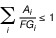
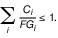
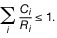
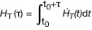
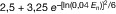

StrlSchV
Ausfertigungsdatum: 29.11.2018
Vollzitat:
"Strahlenschutzverordnung vom 29. November 2018 (BGBl. I S. 2034, 2036; 2021 I S. 5261), die zuletzt durch Artikel 10 des Gesetzes vom 23. Oktober 2024 (BGBl. 2024 I Nr. 324) geändert worden ist"
| Stand: | Zuletzt geändert durch Art. 10 G v. 23.10.2024 I Nr. 324 |
| Ersetzt V 751-1-8 v. 20.7.2001 I 1714; 2002 I 1459 (StrlSchV 2001) | |
(+++ Textnachweis ab: 31.12.2018 +++)Die V wurde als Artikel 1 der V v. 29.11.2018 I 2034; 2021 I 5261 von der Bundesregierung, dem Bundesministerium für Umwelt, Naturschutz und nukleare Sicherheit, dem Bundesministerium für Wirtschaft und Energie, dem Bundesministerium für Gesundheit, dem Bundesministerium für Ernährung und Landwirtschaft und dem Bundesministerium für Verkehr und digitale Infrastruktur nach Anhörung der beteiligten Kreise im Einvernehmen mit dem Bundesministerium für Umwelt, Naturschutz und nukleare Sicherheit, mit dem Bundesministerum für Verkehr und digitale Infrastruktur, mit dem Bundesministerium für Wirtschaft und Energie, mit dem Bundesministerium des Innern, für Bau und Heimat und mit dem Bundesministerium für Gesundheit im Benehmen mit dem Bundesministerium für Bildung und Forschung mit Zustimmung des Bundesrates beschlossen. Sie ist gem. Art. 20 Abs. 1 Satz 1 dieser V am 31.12.2018 in Kraft getreten. Anlage 8 Teil F Nr. 3 tritt gem. Art. 20 Abs. 2 dieser V am 1.1.2021 in Kraft.
(+++ Zur Anwendung vgl. § 49 Abs. 2 Satz 1, Abs. 3, § 58 Abs. 2 Satz 6,
§ 67 Abs. 2, § 76 Satz 2, Satz 4, § 81 Abs. 2 Satz 2, Abs. 3 Satz 2,
Abs. 4, § 83, § 136 Abs. 3, § 138 Abs. 6 Satz 1, § 140 Abs. 2,
§ 143 Abs. 1 Satz 3, § 150 Abs. 4 Satz 1, § 151, § 158 Abs. 3 Satz 3 +++)
(+++ Amtlicher Hinweis des Normgebers auf EG-Recht:
Umsetzung der
EARL 59/2013 (CELEX Nr: 32013L0059)
EARL 71/2009 (CELEX Nr: 32009L0071)
EARL 59/2013 (CELEX Nr: 32013L0059) vgl. V v. 8.10.2021 I 4645
u. V v. 17.4.2024 I Nr. 132
+++)
| § 1 | Begriffsbestimmungen |
| § 2 | Nicht gerechtfertigte Tätigkeitsarten |
| § 3 | Verfahren zur Prüfung der Rechtfertigung von Tätigkeitsarten nach § 7 des Strahlenschutzgesetzes |
| § 4 | Verfahren zur Prüfung der Rechtfertigung von Tätigkeitsarten nach § 38 des Strahlenschutzgesetzes |
| § 5 | Genehmigungsfreier Umgang |
| § 5a | Genehmigungsfreier Zusatz radioaktiver Stoffe |
| § 6 | Genehmigungsfreier Besitz von Kernbrennstoffen |
| § 7 | Genehmigungs- und anzeigefreier Betrieb von Anlagen zur Erzeugung ionisierender Strahlung |
| § 8 | Genehmigungsfreier Betrieb von Störstrahlern |
| § 9 | Anzeigefreie Prüfung, Erprobung, Wartung und Instandsetzung von Röntgeneinrichtungen oder Störstrahlern |
| § 10 | Befreiung von der Pflicht zur Deckungsvorsorge |
| § 11 | Freigrenzen |
| § 12 | Genehmigungsbedürftige grenzüberschreitende Verbringung |
| § 13 | Anmeldebedürftige grenzüberschreitende Verbringung |
| § 14 | Ausnahmen; andere Vorschriften über die grenzüberschreitende Verbringung |
| § 15 | Voraussetzungen für die Erteilung der Genehmigung für die grenzüberschreitende Verbringung |
| § 16 | Technische Anforderungen an die Bauartzulassung einer Vorrichtung, die sonstige radioaktive Stoffe enthält |
| § 17 | Technische Anforderungen an die Bauartzulassung von Störstrahlern |
| § 18 | Technische Anforderungen an die Bauartzulassung von Röntgenstrahlern |
| § 19 | Technische Anforderungen an die Bauartzulassung von Basisschutzgeräten |
| § 20 | Technische Anforderungen an die Bauartzulassung von Hochschutzgeräten |
| § 21 | Technische Anforderungen an die Bauartzulassung von Vollschutzgeräten |
| § 22 | Technische Anforderungen an die Bauartzulassung von Schulröntgeneinrichtungen |
| § 23 | Technische Anforderungen an die Bauartzulassung einer Anlage zur Erzeugung ionisierender Strahlung als Vollschutzanlage |
| § 24 | Pflichten des Inhabers einer Bauartzulassung |
| § 25 | Pflichten des Inhabers einer bauartzugelassenen Vorrichtung |
| § 26 | Bekanntmachung |
| § 27 | Bestimmung der Überwachungsbedürftigkeit von Rückständen |
| § 28 | Ermittlung der von Rückständen verursachten Expositionen |
| § 29 | Entlassung überwachungsbedürftiger Rückstände aus der Überwachung zur Verwertung oder Beseitigung nach dem Kreislaufwirtschaftsgesetz |
| § 30 | Entlassung überwachungsbedürftiger Rückstände aus der Überwachung zur Verwertung als Bauprodukt |
| § 31 | Freigabe radioaktiver Stoffe; Dosiskriterium |
| § 32 | Antrag auf Freigabe |
| § 33 | Erteilung der Freigabe |
| § 34 | Vermischungsverbot |
| § 35 | Uneingeschränkte Freigabe |
| § 36 | Spezifische Freigabe |
| § 37 | Freigabe im Einzelfall |
| § 38 | Freigabe von Amts wegen |
| § 39 | Einvernehmen bei der spezifischen Freigabe zur Beseitigung und bei der spezifischen Freigabe von Metallschrott zum Recycling |
| § 40 | Abfallrechtlicher Verwertungs- und Beseitigungsweg |
| § 41 | Festlegung des Verfahrens |
| § 42 | Pflichten des Inhabers einer Freigabe |
| § 43 | Pflichten des Strahlenschutzbeauftragten |
| § 44 | Pflichten bei Nutzung durch weitere Strahlenschutzverantwortliche |
| § 45 | Strahlenschutzanweisung |
| § 46 | Bereithalten des Strahlenschutzgesetzes und der Strahlenschutzverordnung |
| § 47 | Erforderliche Fachkunde im Strahlenschutz |
| § 48 | Aktualisierung der Fachkunde |
| § 49 | Erforderliche Kenntnisse im Strahlenschutz bei der Anwendung am Menschen und am Tier in der Tierheilkunde |
| § 50 | Widerruf der Anerkennung der erforderlichen Fachkunde oder der erforderlichen Kenntnisse |
| § 51 | Anerkennung von Kursen |
| § 52 | Einrichten von Strahlenschutzbereichen |
| § 53 | Abgrenzung, Kennzeichnung und Sicherung von Strahlenschutzbereichen |
| § 54 | Vorbereitung der Brandbekämpfung |
| § 55 | Zutritt zu Strahlenschutzbereichen |
| § 56 | Messtechnische Überwachung in Strahlenschutzbereichen |
| § 57 | Kontamination und Dekontamination |
| § 58 | Verlassen von und Herausbringen aus Strahlenschutzbereichen |
| § 59 | Einrichten von Strahlenschutzbereichen bei Tätigkeiten mit natürlich vorkommenden radioaktiven Stoffen |
| § 60 | Röntgenräume |
| § 61 | Bestrahlungsräume |
| § 62 | Räume für den Betrieb von Störstrahlern |
| § 63 | Unterweisung |
| § 64 | Pflicht zur Ermittlung der Körperdosis; zu überwachende Personen |
| § 65 | Vorgehen bei der Ermittlung der Körperdosis |
| § 66 | Messung der Personendosis |
| § 67 | Ermittlung der Körperdosis des fliegenden Personals |
| § 68 | Beschäftigung mit Strahlenpass |
| § 69 | Schutz von schwangeren und stillenden Personen |
| § 70 | Schutz beim Umgang mit offenen radioaktiven Stoffen; Beschäftigungsverbote |
| § 71 | Kategorien beruflich exponierter Personen |
| § 72 | Dosisrichtwerte bei Tätigkeiten |
| § 73 | Dosisbegrenzung bei Überschreitung von Grenzwerten |
| § 74 | Besonders zugelassene Expositionen |
| § 75 | Sonstige Schutzvorkehrungen |
| § 76 | Besondere Regelungen zum Schutz des raumfahrenden Personals |
| § 77 | Ärztliche Überwachung beruflich exponierter Personen |
| § 78 | Ärztliche Überwachung nach Beendigung der Aufgabenwahrnehmung |
| § 79 | Ärztliche Bescheinigung |
| § 80 | Behördliche Entscheidung |
| § 81 | Besondere ärztliche Überwachung |
| § 82 | Strahlenschutz in Schulen und bei Lehr- und Ausbildungsverhältnissen |
| § 83 | Werte für hochradioaktive Strahlenquellen |
| § 84 | Register über hochradioaktive Strahlenquellen |
| § 85 | Buchführung und Mitteilung |
| § 86 | Buchführung und Mitteilung bei der Freigabe |
| § 87 | Sicherung und Lagerung radioaktiver Stoffe |
| § 88 | Wartung und Prüfung |
| § 89 | Dichtheitsprüfung |
| § 90 | Strahlungsmessgeräte |
| § 91 | Kennzeichnungspflicht |
| § 92 | Besondere Kennzeichnungspflichten |
| § 93 | Entfernen von Kennzeichnungen |
| § 94 | Abgabe radioaktiver Stoffe |
| § 95 | Rücknahme hochradioaktiver Strahlenquellen |
| § 96 | Überlassen von Störstrahlern |
| § 97 | Aufbewahrung und Bereithalten von Unterlagen |
| § 98 | Einweisung in Tätigkeiten mit Strahlungsquellen |
| § 99 | Begrenzung der Ableitung radioaktiver Stoffe |
| § 100 | Ermittlung der für Einzelpersonen der Bevölkerung zu erwartenden Exposition |
| § 101 | Ermittlung der von Einzelpersonen der Bevölkerung erhaltenen Exposition |
| § 102 | Zulässige Ableitungen radioaktiver Stoffe |
| § 103 | Emissions- und Immissionsüberwachung |
| § 104 | Begrenzung der Exposition durch Störfälle |
| § 105 | Vorbereitende Maßnahmen zur Vermeidung, zum Erkennen und zur Eindämmung der Auswirkungen eines Vorkommnisses bei der Anwendung am Menschen |
| § 106 | Vorbereitende Maßnahmen für Notfälle oder Störfälle |
| § 107 | Maßnahmen bei einem Notfall oder Störfall |
| § 108 | Meldung eines bedeutsamen Vorkommnisses |
| § 109 | Untersuchung, Aufzeichnung und Aufbewahrung |
| § 110 | Aufgaben der zuständigen Aufsichtsbehörden |
| § 111 | Aufgaben der zentralen Stelle |
| § 112 | Meldung und Erfassung von Vorkommnissen nach anderen Rechtsvorschriften |
| § 113 | Ausnahme |
| § 114 | Anforderungen an die Ausrüstung bei der Anwendung am Menschen |
| § 115 | Qualitätssicherung vor Inbetriebnahme; Abnahmeprüfung; Bezugswertfestlegung |
| § 116 | Konstanzprüfung |
| § 117 | Aufzeichnungen |
| § 118 | Bestandsverzeichnis |
| § 119 | Rechtfertigende Indikation |
| § 120 | Schutz von besonderen Personengruppen |
| § 121 | Maßnahmen bei der Anwendung |
| § 122 | Beschränkung der Exposition |
| § 123 | Anforderungen im Zusammenhang mit dem Betrieb einer Röntgeneinrichtung zur Teleradiologie |
| § 124 | Informationspflichten |
| § 125 | Diagnostische Referenzwerte; Bevölkerungsdosis |
| § 126 | Risikobeurteilung vor Strahlenbehandlungen |
| § 127 | Aufbewahrung, Weitergabe und Übermittlung von Aufzeichnungen, Röntgenbildern, digitalen Bilddaten und sonstigen Untersuchungsdaten |
| § 128 | Bestimmung von ärztlichen und zahnärztlichen Stellen zur Qualitätssicherung |
| § 129 | Mitteilung der Aufnahme und Beendigung einer Tätigkeit an eine ärztliche oder zahnärztliche Stelle |
| § 130 | Maßnahmen zur Qualitätssicherung durch ärztliche und zahnärztliche Stellen |
| § 131 | Medizinphysik-Experte |
| § 132 | Aufgaben des Medizinphysik-Experten |
| § 133 | Grundsatz der Einwilligung nach Aufklärung und Befragung |
| § 134 | Einwilligungen der in das Forschungsvorhaben eingeschlossenen Person |
| § 135 | Aufklärung und Befragung |
| § 136 | Anwendung an nicht Einwilligungsfähigen und an Minderjährigen |
| § 137 | Weitere Anwendungsverbote und Anwendungsbeschränkungen |
| § 138 | Besondere Schutzpflichten |
| § 139 | Qualitätssicherung |
| § 140 | Aufbewahrungspflichten; weitere Regelungen zu Aufzeichnungen |
| § 141 | Mitteilungspflichten |
| § 142 | Abschlussbericht |
| § 143 | Behördliche Schutzanordnung |
| § 144 | Anforderungen im Zusammenhang mit der Anwendung |
| § 145 | Berechtigte Personen bei der Anwendung am Menschen |
| § 146 | Berechtigte Personen in der Tierheilkunde |
| § 147 | Berechtigte Personen außerhalb der Anwendung am Menschen oder der Tierheilkunde |
| § 148 | Informationspflichten des Herstellers von Geräten |
| § 149 | Aufsichtsprogramm |
| § 150 | Dosimetrie bei Einsatzkräften |
| § 151 | Besondere ärztliche Überwachung von Einsatzkräften |
| § 152 | Hilfeleistung und Beratung von Behörden, Hilfsorganisationen und Einsatzkräften bei einem Notfall |
| § 153 | Festlegung von Gebieten nach § 121 Absatz 1 Satz 1 des Strahlenschutzgesetzes |
| § 154 | Maßnahmen zum Schutz vor Radon für Neubauten in Gebieten nach § 121 Absatz 1 Satz 1 des Strahlenschutzgesetzes |
| § 155 | Messung der Radon-222-Aktivitätskonzentration; anerkannte Stelle |
| § 156 | Arbeitsplatzbezogene Abschätzung der Exposition |
| § 157 | Ermittlung der Exposition und der Körperdosis |
| § 158 | Weitere Anforderungen des beruflichen Strahlenschutzes |
| § 159 | Ermittlung der spezifischen Aktivität |
| § 160 | Ermittlung der Exposition |
| § 161 | Prüfwerte bei radioaktiven Altlasten und bei der Stilllegung und Sanierung der Betriebsanlagen und Betriebsstätten des Uranerzbergbaus |
| § 162 | Emissions- und Immissionsüberwachung bei der Stilllegung und Sanierung der Betriebsanlagen und Betriebsstätten des Uranerzbergbaus |
| § 163 | Grundsätze für die Optimierung von Sanierungsmaßnahmen |
| § 164 | Inhalt von Sanierungsplänen |
| § 165 | Schutz der Arbeitskräfte bei radioaktiven Altlasten |
| § 166 | Schutz der Arbeitskräfte bei sonstigen bestehenden Expositionssituationen |
| § 167 | Abhandenkommen |
| § 168 | Fund und Erlangung |
| § 169 | Kontaminiertes Metall |
| § 170 | Information des zuständigen Bundesministeriums |
| § 171 | Dosis- und Messgrößen |
| § 172 | Messstellen |
| § 173 | Strahlenschutzregister |
| § 174 | Strahlenpass |
| § 175 | Ermächtigte Ärzte |
| § 176 | Duldungspflichten |
| § 177 | Bestimmung von Sachverständigen |
| § 178 | Erweiterung der Bestimmung |
| § 179 | Überprüfung der Zuverlässigkeit |
| § 180 | Unabhängigkeit |
| § 181 | Fachliche Qualifikation |
| § 182 | Prüfmaßstab |
| § 183 | Pflichten des behördlich bestimmten Sachverständigen |
| § 184 | Ordnungswidrigkeiten |
| § 185 | Bauartzulassung (§§ 16 bis 26) |
| § 186 | Rückstände (§ 29) |
| § 187 | Freigabe (§§ 31 bis 42) |
| § 188 | Betriebliche Organisation des Strahlenschutzes (§§ 44 und 45) |
| § 189 | Erforderliche Fachkunde und Kenntnisse im Strahlenschutz (§§ 47, 49 und 51) |
| § 190 | Übergangsvorschriften im Zusammenhang mit Strahlenschutzbereichen (§§ 52 bis 62) |
| § 191 | Dosisrichtwerte bei Tätigkeiten (§ 72) |
| § 192 | Register über hochradioaktive Strahlenquellen (§ 84) |
| § 193 | Ermittlung der für Einzelpersonen der Bevölkerung zu erwartenden und erhaltenen Exposition (§§ 99, 100, 101, Anlage 11) |
| § 194 | Begrenzung der Exposition durch Störfälle (§ 104) |
| § 195 | Ausrüstung bei der Anwendung am Menschen (§ 114) |
| § 196 | Ärztliche und zahnärztliche Stellen (§ 128) |
| § 197 | Dosis- und Messgrößen (§ 171, Anlage 18) |
| § 198 | Strahlenpass (§ 174) |
| § 199 | Ermächtigte Ärzte (§ 175) |
| § 200 | Behördlich bestimmte Sachverständige (§ 181) |
| Anlage 1 | Liste der nicht gerechtfertigten Tätigkeitsarten |
| Anlage 2 | Erforderliche Unterlagen zur Prüfung der Rechtfertigung von Tätigkeitsarten |
| Anlage 3 | Genehmigungsfreie Tätigkeiten |
| Anlage 4 | Freigrenzen, Freigabewerte für verschiedene Freigabearten, Werte für hochradioaktive Strahlenquellen, Werte der Oberflächenkontamination, Liste der Radionuklide und bei den Berechnungen berücksichtigte Tochternuklide |
| Anlage 5 | Überwachungsgrenzen sowie Verwertungs- und Beseitigungswege für die Bestimmung der Überwachungsbedürftigkeit von Rückständen |
| Anlage 6 | Grundsätze für die Ermittlung von Expositionen bei Rückständen |
| Anlage 7 | Voraussetzungen für die Entlassung aus der Überwachung bei gemeinsamer Deponierung von überwachungsbedürftigen Rückständen mit anderen Rückständen und Abfällen |
| Anlage 8 | Festlegungen zur Freigabe |
| Anlage 9 | Liste der Daten über hochradioaktive Strahlenquellen (HRQ), die im Register über hochradioaktive Strahlenquellen (HRQ-Register) erfasst werden |
| Anlage 10 | Strahlenzeichen |
| Anlage 11 | Annahmen bei der Berechnung der Exposition |
| Anlage 12 | Leitstellen des Bundes für die Emissions- und Immissionsüberwachung |
| Anlage 13 | Information der Bevölkerung zur Vorbereitung auf einen Notfall |
| Anlage 14 | Kriterien für die Bedeutsamkeit eines Vorkommnisses bei medizinischer Exposition und bei Exposition der untersuchten Person bei einer nichtmedizinischen Anwendung |
| Anlage 15 | Kriterien für die Bedeutsamkeit eines Vorkommnisses in einer geplanten Expositionssituation |
| Anlage 16 | Kriterien zur Bestimmung der Art und des Ausmaßes des mit einer Tätigkeit verbundenen Risikos |
| Anlage 17 | Aktivitätsindex und nicht zu überschreitende Werte nach § 135 Absatz 1 Satz 3 des Strahlenschutzgesetzes |
| Anlage 18 | Dosis- und Messgrößen |
| Anlage 19 | Prüfungen zum Erwerb und Erhalt der erforderlichen fachlichen Qualifikation für die Ausübung einer Tätigkeit als behördlich bestimmter Sachverständiger nach § 172 Absatz 1 des Strahlenschutzgesetzes |
| Erläuterung zu Spalte 1: | Kennzeichnung von Radionukliden: „+“ kennzeichnet Mutternuklide, für die die in Tabelle 2 gelisteten Tochternuklide vollständig durch das Mutternuklid abgedeckt sind; die Expositionen durch diese Tochternuklide sind bei den Freigrenzen, Freigabewerten oder Werten der Oberflächenkontamination bereits berücksichtigt, | ||
Erläuterung zu den Spalten 2 und 3 (Freigrenzen): |
| ||
|  | oder |  | |
| |||
| Erläuterung zu Spalte 3: | Bei Messungen nach § 58 gilt für die zugrunde zu legende Mittelungsmasse M: 3 kg ≤ M ≤ 300 kg. Bei einer Masse M < 3 kg ist die spezifische Aktivität nicht gesondert zu bestimmen, wenn die Oberflächenkontamination nach § 58 Absatz 2 Satz 2 Nummer 2 ermittelt wird. | ||
| Erläuterung zu Spalte 4: | Die Angabe „TBq“ wird als Abkürzung für „Terabecquerel“ verwendet. Die Angabe „UL“ als Abkürzung für „unbegrenzt“ (unlimited) wird für Radionuklide verwendet, bei denen auch hohe Aktivitäten nicht zu einer Einstufung als hochradioaktive Strahlenquelle führen. | ||
| Erläuterung zu Spalte 5: | Bei Messungen nach den §§ 57 und 58 darf die Mittelungsfläche bis zu 300 cm2 betragen. | ||
| Bei mehreren Radionukliden ist die Summe der Verhältniszahlen aus der vorhandenen Aktivität je Flächeneinheit (As,i) und den jeweiligen Werten der Oberflächenkontamination (Oi) der einzelnen Radionuklide gemäß Tabelle 1 Spalte 5 zu berechnen (Summenformel), wobei i das jeweilige Radionuklid ist. Diese Summe darf den Wert 1 nicht überschreiten: | |||
 | |||
| Radionuklide brauchen bei der Summenbildung nicht berücksichtigt zu werden, wenn der Anteil der unberücksichtigten Nuklide an der Summe aller Verhältniszahlen As,i/Oi 10 Prozent nicht überschreitet. | |||
| Bei der Bestimmung der Oberflächenkontamination für Verkehrsflächen oder Arbeitsplätze nach § 57 Absatz 2 Nummer 1 und 2 sind die festhaftende Oberflächenaktivität und die über die Oberfläche eingedrungene Aktivität nicht einzubeziehen, sofern sichergestellt ist, dass durch diese Aktivitätsanteile keine Gefährdung durch Weiterverbreitung oder Inkorporation möglich ist. | |||
Soweit für Radionuklide keine maximal zulässigen Oberflächenkontaminationswerte angegeben sind, sind diese im Einzelfall zu berechnen. Anderenfalls können folgende Werte der Oberflächenkontamination zugrunde gelegt werden:
| |||
| Erläuterung zu den Spalten 6 und 8 bis 11: | Die Angabe „Mg/a“ wird als Abkürzung für „Megagramm im Kalenderjahr“ verwendet. Siehe auch Anlage 8 Teil F Nummer 3. | ||
| Erläuterung zu den Spalten 12 und 13: | Die Werte der Oberflächenkontamination berücksichtigen die in die oberste Schicht des Bodens oder des Gebäudes eingedrungene Aktivität; es handelt sich um auf die Oberfläche projizierte Aktivitätswerte. | ||
| Erläuterung zu Spalte 15: | Die Angabe „a“ bedeutet „Jahr“, die Angabe „d“ bedeutet „Tag“, die Angabe „h“ bedeutet „Stunde“ und die Angabe „m“ bedeutet „Minute“. | ||
| Die Regelungen und Erläuterungen zur Freigabe (Spalten 3 und 5 bis 14) finden sich in den §§ 31 bis 42 und Anlage 8. | |||
| Radionuklid | Freigrenze in Bq | Freigrenze, uneingeschränkte Freigabe von festen u. flüssigen Stoffen in Bq/g | Aktivität HRQ in TBq | Oberflächenkontamination in Bq/cm2 | spezifische Freigabe von | ||||||||||
| Bauschutt von mehr als 1000 Mg/a in Bq/g | Bodenflächen in Bq/g | festen Stoffen bis zu 100 Mg/a zur Beseitigung auf Deponien in Bq/g | Stoffen bis zu 100 Mg/a zur Beseitigung in Verbrennungsanlagen in Bq/g | festen Stoffen bis zu 1000 Mg/a zur Beseitigung auf Deponien in Bq/g | Stoffen bis zu 1000 Mg/a zur Beseitigung in Verbrennungsanlagen in Bq/g | Gebäuden zur Wieder- und Weiterverwendung in Bq/cm2 | Gebäuden zum Abriss in Bq/cm2 | Metallschrott zum Recycling in Bq/g | Halbwertszeit | ||||||
| 1 | 2 | 3 | 4 | 5 | 6 | 7 | 8 | 9 | 10 | 11 | 12 | 13 | 14 | 15 | |
| H-3 | 1 E+9 | 1 E+2 | 2 E+3 | 1 E+2 | 6 E+1 | 3 | 6 E+4 | 1 E+5 | 6 E+3 | 1 E+4 | 1 E+3 | 4 E+3 | 1 E+3 | 12,3 | a |
| Be-7 | 1 E+7 | 1 E+1 | 1 | 1 E+2 | 3 E+1 | 2 | 3 E+2 | 4 E+2 | 9 E+1 | 4 E+1 | 8 E+1 | 6 E+2 | 3 E+2 | 53,2 | d |
| Be-10 | 1 E+6 | 1 E+2 | 3 E+1 | 1,6 E+6 | a | ||||||||||
| C-11 | 1 E+6 | 1 E+1 | 6 E-2 | 20,4 | m | ||||||||||
| C-11 Monoxid, Dioxid | 1 E+9 | 1 E+1 | 20,4 | m | |||||||||||
| C-14 | 1 E+7 | 1 | 5 E+1 | 1 E+2 | 1 E+1 | 4 E-2 | 4 E+3 | 4 E+3 | 4 E+2 | 4 E+2 | 1 E+3 | 6 E+3 | 8 E+1 | 5,7 E+3 | a |
| C-14 Monoxid, Dioxid | 1 E+11 | 1 | 5,7 E+3 | a | |||||||||||
| N-13 | 1 E+9 | 1 E+2 | 6 E-2 | 10,0 | m | ||||||||||
| O-15 | 1 E+9 | 1 E+2 | 2,0 | m | |||||||||||
| F-18 | 1 E+6 | 1 E+1 | 6 E-2 | 1 | 1 | 2 E+4 | 1 E+1 | 109,7 | m | ||||||
| Na-22 | 1 E+6 | 1 E-1 | 3 E-2 | 1 | 1 E-1 | 4 E-3 | 7 | 9 | 2 | 2 | 4 E-1 | 4 | 1 E-1 | 2,6 | a |
| Na-24 | 1 E+5 | 1 | 2 E-2 | 1 | 1 | 7 E+2 | 1 E+1 | 15,0 | h | ||||||
| Mg-28+ | 1 E+5 | 1 | 2 E-2 | 20,9 | h | ||||||||||
| Al-26 | 1 E+5 | 1 E-2 | 3 E-2 | 7,2 E+5 | a | ||||||||||
| Si-31 | 1 E+6 | 1 E+3 | 1 E+1 | 1 E+2 | 1 E+2 | 2 E+7 | 1 E+3 | 2,6 | h | ||||||
| Si-32+ | 1 E+6 | 1 E+2 | 7 | 1 E+3 | 1 E+3 | 4 E+2 | 9 E+2 | 5 E+2 | 132,0 | a | |||||
| P-32 | 1 E+5 | 1 E+3 | 1 E+1 | 1 E+2 | 2 E+1 | 2 E-2 | 1 E+3 | 1 E+3 | 1 E+3 | 1 E+3 | 1 E+2 | 4 E+5 | 2 E+1 | 14,3 | d |
| P-33 | 1 E+8 | 1 E+3 | 2 E+2 | 1 E+2 | 2 E+2 | 8 E-2 | 1 E+5 | 1 E+5 | 2 E+4 | 1 E+5 | 1 E+3 | 6 E+5 | 2 E+2 | 25,4 | d |
| S-35 | 1 E+8 | 1 E+2 | 6 E+1 | 1 E+2 | 5 E+2 | 1 E-2 | 5 E+3 | 2 E+4 | 5 E+2 | 2 E+3 | 1 E+3 | 2 E+5 | 6 E+2 | 87,3 | d |
| S-35 Gas | 1 E+9 | 1 E+2 | 87,3 | d | |||||||||||
| Cl-36 | 1 E+6 | 1 | 2 E+1 | 1 E+2 | 3 E-1 | 3 | 3 | 3 E-1 | 3 E-1 | 3 E+1 | 3 E+1 | 1 E+1 | 3,0 E+5 | a | |
| Cl-38 | 1 E+5 | 1 E+1 | 5 E-2 | 1 | 2 E-1 | 1 | 4 E+4 | 1 E+1 | 37,2 | m | |||||
| Cl-39 | 1 E+5 | 1 E+1 | 55,6 | m | |||||||||||
| Ar-37 | 1 E+8 | 1 E+6 | UL | 35,0 | d | ||||||||||
| Ar-39 | 1 E+4 | 1 E+7 | 3 E+2 | 269,0 | a | ||||||||||
| Ar-41 | 1 E+9 | 1 E+2 | 5 E-2 | 1,8 | h | ||||||||||
| K-40 | 1 E+6 | 1 | UL | 1 E+1 | 8 E-1 | 6 | 2 E+1 | 1,3 E+9 | a | ||||||
| K-42 | 1 E+6 | 1 E+2 | 2 E-1 | 1 E+1 | 8 E-1 | 1 E+1 | 1 E+4 | 1 E+2 | 12,4 | h | |||||
| K-43 | 1 E+6 | 1 E+1 | 7 E-2 | 1 | 2 E-1 | 1 | 2 E+3 | 1 E+1 | 22,2 | h | |||||
| K-44 | 1 E+5 | 1 E+1 | 22,1 | m | |||||||||||
| K-45 | 1 E+5 | 1 E+1 | 17,3 | m | |||||||||||
| Ca-41 | 1 E+7 | 1 E+2 | UL | 2 E+2 | 1 E+3 | 2 E+1 | 1 E+2 | 1,0 E+5 | a | ||||||
| Ca-45+ | 1 E+7 | 1 E+2 | 1 E+2 | 1 E+2 | 4 E+2 | 4 E-2 | 5 E+3 | 1 E+4 | 5 E+2 | 4 E+3 | 1 E+3 | 6 E+4 | 6 E+2 | 163,0 | d |
| Ca-47 | 1 E+6 | 1 E+1 | 6 E-2 | 1 | 2 E-1 | 1 | 4 E+2 | 1 E+1 | 4,5 | d | |||||
| Sc-43 | 1 E+6 | 1 E+1 | 3,9 | h | |||||||||||
| Sc-44 | 1 E+5 | 1 E+2 | 3 E-2 | 4,0 | h | ||||||||||
| Sc-44m+ | 1 E+7 | 1 | 2,4 | d | |||||||||||
| Sc-46 | 1 E+6 | 1 E-1 | 3 E-2 | 1 | 1 E-1 | 4 E-2 | 8 | 9 | 2 | 2 | 1 | 1 E+1 | 3 E-1 | 83,8 | d |
| Sc-47 | 1 E+6 | 1 E+2 | 7 E-1 | 1 E+1 | 3 | 1 E+1 | 6 E+3 | 1 E+2 | 3,4 | d | |||||
| Sc-48 | 1 E+5 | 1 | 2 E-2 | 1 | 7 E-2 | 1 | 3 E+2 | 1 E+1 | 43,7 | h | |||||
| Sc-49 | 1 E+5 | 1 E+3 | 57,2 | m | |||||||||||
| Ti-44+ | 1 E+5 | 1 E-1 | 3 E-2 | 7 | 7 E-1 | 60,0 | a | ||||||||
| Ti-45 | 1 E+6 | 1 E+1 | 3,1 | h | |||||||||||
| V-47 | 1 E+5 | 1 E+1 | 32,6 | m | |||||||||||
| V-48 | 1 E+5 | 1 | 2 E-2 | 1 | 8 E-2 | 3 E-2 | 6 | 7 | 2 | 2 | 1 | 4 E+1 | 1 | 16,0 | d |
| V-49 | 1 E+7 | 1 E+4 | 2 E+3 | 330,0 | d | ||||||||||
| Cr-48 | 1 E+6 | 1 E+2 | 21,6 | h | |||||||||||
| Cr-49 | 1 E+6 | 1 E+1 | 41,9 | m | |||||||||||
| Cr-51 | 1 E+7 | 1 E+2 | 2 | 1 E+2 | 8 | 3 | 5 E+2 | 9 E+2 | 1 E+2 | 1 E+2 | 1 E+2 | 2 E+3 | 1 E+3 | 27,7 | d |
| Mn-51 | 1 E+5 | 1 E+1 | 1 | 2 E-1 | 1 | 5 E+4 | 1 E+1 | 46,2 | m | ||||||
| Mn-52 | 1 E+5 | 1 | 2 E-2 | 1 | 6 E-2 | 1 | 9 E+1 | 1 E+1 | 5,6 | d | |||||
| Mn-52m | 1 E+5 | 1 E+1 | 1 | 9 E-2 | 1 | 5 E+4 | 1 E+1 | 21,2 | m | ||||||
| Mn-53 | 1 E+9 | 1 E+2 | UL | 1 E+2 | 6 E+1 | 3 | 6 E+2 | 4 E+3 | 6 E+1 | 4 E+2 | 1 E+3 | 2 E+4 | 1 E+4 | 3,7 E+6 | a |
| Mn-54 | 1 E+6 | 1 E-1 | 8 E-2 | 1 | 3 E-1 | 9 E-2 | 1 E+1 | 1 E+1 | 6 | 6 | 1 | 1 E+1 | 2 | 312,1 | d |
| Mn-56 | 1 E+5 | 1 E+1 | 4 E-2 | 1 | 1 E-1 | 1 | 9 E+3 | 1 E+1 | 2,6 | h | |||||
| Fe-52+ | 1 E+6 | 1 E+1 | 2 E-2 | 1 E+2 | 7 E-2 | 1 | 2 E+3 | 1 E+1 | 8,3 | h | |||||
| Fe-55 | 1 E+6 | 1 E+3 | 8 E+2 | 1 E+2 | 2 E+2 | 6 | 1 E+4 | 1 E+4 | 7 E+3 | 1 E+4 | 1 E+3 | 2 E+4 | 1 E+4 | 2,7 | a |
| Fe-59 | 1 E+6 | 1 | 6 E-2 | 1 | 2 E-1 | 6 E-2 | 1 E+1 | 1 E+1 | 4 | 4 | 1 | 3 E+1 | 1 E+1 | 44,5 | d |
| Fe-60+ | 1 E+5 | 1 E+1 | 6 E-2 | 1,5 E+6 | a | ||||||||||
| Co-55 | 1 E+6 | 1 E+1 | 3 E-2 | 1 | 1 E-1 | 1 | 1 E+3 | 1 E+1 | 17,5 | h | |||||
| Co-56 | 1 E+5 | 1 E-1 | 2 E-2 | 1 | 6 E-2 | 2 E-2 | 4 | 5 | 1 | 1 | 1 | 6 | 4 E-1 | 77,3 | d |
| Co-57 | 1 E+6 | 1 | 7 E-1 | 1 E+1 | 3 | 8 E-1 | 1 E+2 | 1 E+2 | 5 E+1 | 5 E+1 | 1 E+1 | 1 E+2 | 2 E+1 | 271,8 | d |
| Co-58 | 1 E+6 | 1 | 7 E-2 | 1 | 2 E-1 | 8 E-2 | 1 E+1 | 1 E+1 | 5 | 5 | 1 | 3 E+1 | 1 | 70,9 | d |
| Co-58m | 1 E+7 | 1 E+4 | 7 E-2 | 1 E+2 | 1 E+4 | 1 E+3 | 1 E+9 | 1 E+4 | 8,9 | h | |||||
| Co-60 | 1 E+5 | 1 E-1 | 3 E-2 | 1 | 9 E-2 | 3 E-2 | 6 | 7 | 2 | 2 | 4 E-1 | 3 | 6 E-1 | 5,3 | a |
| Co-60m | 1 E+6 | 1 E+3 | 1 E+2 | 6 E+1 | 1 E+3 | 7 E+7 | 1 E+3 | 10,5 | m | ||||||
| Co-61 | 1 E+6 | 1 E+2 | 1 E+1 | 4 | 1 E+1 | 5 E+5 | 1 E+2 | 1,7 | h | ||||||
| Co-62m+ | 1 E+5 | 1 E+1 | 1 | 8 E-2 | 1 | 7 E+4 | 1 E+1 | 13,9 | m | ||||||
| Ni-56 | 1 E+6 | 1 E+1 | 6,1 | d | |||||||||||
| Ni-57 | 1 E+6 | 1 E+1 | 35,9 | h | |||||||||||
| Ni-59 | 1 E+8 | 1 E+2 | 1 E+3 | 1 E+2 | 3 E+2 | 8 | 3 E+3 | 1 E+4 | 3 E+2 | 3 E+3 | 1 E+3 | 9 E+4 | 1 E+4 | 7,6 E+4 | a |
| Ni-63 | 1 E+8 | 1 E+2 | 6 E+1 | 1 E+2 | 3 E+2 | 3 | 1 E+4 | 6 E+4 | 1 E+3 | 6 E+3 | 1 E+3 | 4 E+4 | 1 E+4 | 100,6 | a |
| Ni-65 | 1 E+6 | 1 E+1 | 1 E-1 | 1 E+1 | 4 E-1 | 1 E+1 | 3 E+4 | 1 E+1 | 2,5 | h | |||||
| Ni-66+ | 1 E+7 | 1 E+4 | 54,4 | h | |||||||||||
| Cu-60 | 1 E+5 | 1 E+1 | 23,7 | m | |||||||||||
| Cu-61 | 1 E+6 | 1 E+1 | 3,3 | h | |||||||||||
| Cu-64 | 1 E+6 | 1 E+2 | 3 E-1 | 1 E+1 | 1 | 1 E+1 | 2 E+4 | 1 E+2 | 12,7 | h | |||||
| Cu-67 | 1 E+6 | 1 E+2 | 7 E-1 | 61,9 | h | ||||||||||
| Zn-62+ | 1 E+6 | 1 E+2 | 9,3 | h | |||||||||||
| Zn-63 | 1 E+5 | 1 E+1 | 38,4 | m | |||||||||||
| Zn-65 | 1 E+6 | 1 E-1 | 1 E-1 | 1 | 4 E-1 | 1 E-2 | 1 E+1 | 1 E+1 | 8 | 3 | 2 | 2 E+1 | 5 E-1 | 244,2 | d |
| Zn-69 | 1 E+6 | 1 E+3 | 3 E+1 | 1 E+2 | 1 E+4 | 1 E+2 | 7 E+9 | 1 E+4 | 56,4 | m | |||||
| Zn-69m+ | 1 E+6 | 1 E+1 | 2 E-1 | 1 E+1 | 6 E-1 | 1 E+1 | 7 E+3 | 1 E+2 | 13,8 | h | |||||
| Zn-71m | 1 E+6 | 1 E+1 | 4,0 | h | |||||||||||
| Zn-72+ | 1 E+6 | 1 E+2 | 46,5 | h | |||||||||||
| Ga-65 | 1 E+5 | 1 E+1 | 15,2 | m | |||||||||||
| Ga-66 | 1 E+5 | 1 E+1 | 9,5 | h | |||||||||||
| Ga-67 | 1 E+6 | 1 E+2 | 5 E-1 | 3,3 | d | ||||||||||
| Ga-68 | 1 E+5 | 1 E+1 | 7 E-2 | 67,7 | m | ||||||||||
| Ga-70 | 1 E+6 | 1 E+3 | 21,1 | m | |||||||||||
| Ga-72 | 1 E+5 | 1 E+1 | 3 E-2 | 1 | 8 E-2 | 1 | 1 E+3 | 1 E+1 | 14,1 | h | |||||
| Ga-73+ | 1 E+6 | 1 E+2 | 4,9 | h | |||||||||||
| Ge-66 | 1 E+6 | 1 E+1 | 2,3 | h | |||||||||||
| Ge-67 | 1 E+5 | 1 E+1 | 18,9 | m | |||||||||||
| Ge-68+ | 1 E+5 | 1 E-1 | 7 E-2 | 1 | 2 E-1 | 1 E+1 | 1 E+1 | 5 | 2 | 1 | 1 E+1 | 271,0 | d | ||
| Ge-69 | 1 E+6 | 1 E+1 | 39,1 | h | |||||||||||
| Ge-71 | 1 E+8 | 1 E+4 | 1 E+3 | 1 E+2 | 4 E+3 | 5 E+1 | 1 E+4 | 1 E+4 | 1 E+4 | 1 E+4 | 1 E+3 | 9 E+7 | 4 E+3 | 11,4 | d |
| Ge-75 | 1 E+6 | 1 E+3 | 82,8 | m | |||||||||||
| Ge-77 | 1 E+5 | 1 E+1 | 6 E-2 | 11,3 | h | ||||||||||
| Ge-78 | 1 E+6 | 1 E+2 | 88,0 | m | |||||||||||
| As-69 | 1 E+5 | 1 E+1 | 15,2 | m | |||||||||||
| As-70 | 1 E+5 | 1 E+1 | 52,6 | m | |||||||||||
| As-71 | 1 E+6 | 1 E+1 | 65,3 | h | |||||||||||
| As-72 | 1 E+5 | 1 E+1 | 4 E-2 | 26,0 | h | ||||||||||
| As-73+ | 1 E+7 | 1 E+3 | 4 E+1 | 1 E+2 | 1 E+2 | 4 E+1 | 1 E+3 | 1 E+3 | 1 E+3 | 1 E+3 | 4 E+2 | 2 E+4 | 1 E+2 | 80,3 | d |
| As-74 | 1 E+6 | 1 E+1 | 9 E-2 | 1 | 3 E-1 | 1 E-1 | 1 E+1 | 1 E+1 | 7 | 3 | 1 | 1 E+2 | 1 E+1 | 17,8 | d |
| As-76 | 1 E+5 | 1 E+1 | 2 E-1 | 1 E+1 | 5 E-1 | 1 E+1 | 4 E+3 | 1 E+2 | 26,2 | h | |||||
| As-77 | 1 E+6 | 1 E+3 | 8 | 1 E+2 | 3 E+1 | 1 E+2 | 1 E+5 | 1 E+3 | 38,8 | h | |||||
| As-78 | 1 E+5 | 1 E+1 | 1,5 | h | |||||||||||
| Se-70 | 1 E+6 | 1 E+1 | 41,1 | m | |||||||||||
| Se-73 | 1 E+6 | 1 E+1 | 7,2 | h | |||||||||||
| Se-73m | 1 E+6 | 1 E+2 | 39,8 | m | |||||||||||
| Se-75 | 1 E+6 | 1 | 2 E-1 | 1 E+1 | 7 E-1 | 4 E-3 | 4 E+1 | 7 E+1 | 1 E+1 | 7 | 5 | 5 E+1 | 3 | 119,6 | d |
| Se-79 | 1 E+7 | 1 E-1 | 2 E+2 | 3,8 E+5 | a | ||||||||||
| Se-81 | 1 E+6 | 1 E+3 | 18,4 | m | |||||||||||
| Se-81m+ | 1 E+7 | 1 E+3 | 57,3 | m | |||||||||||
| Se-83 | 1 E+5 | 1 E+1 | 22,3 | m | |||||||||||
| Br-74 | 1 E+5 | 1 E+1 | 25,4 | m | |||||||||||
| Br-74m | 1 E+5 | 1 E+1 | 46,0 | m | |||||||||||
| Br-75 | 1 E+6 | 1 E+1 | 1,6 | h | |||||||||||
| Br-76 | 1 E+5 | 1 E+1 | 3 E-2 | 16,2 | h | ||||||||||
| Br-77 | 1 E+6 | 1 E+2 | 2 E-1 | 57,0 | h | ||||||||||
| Br-80 | 1 E+5 | 1 E+2 | 17,6 | m | |||||||||||
| Br-80m+ | 1 E+7 | 1 E+3 | 4,4 | h | |||||||||||
| Br-82 | 1 E+6 | 1 | 3 E-2 | 1 | 1 E+1 | 1 | 4 E+2 | 1 E+1 | 35,3 | h | |||||
| Br-83+ | 1 E+6 | 1 E+3 | 2,4 | h | |||||||||||
| Br-84 | 1 E+5 | 1 E+1 | 31,8 | m | |||||||||||
| Kr-74 | 1 E+9 | 1 E+2 | 11,5 | m | |||||||||||
| Kr-76 | 1 E+9 | 1 E+2 | 14,6 | h | |||||||||||
| Kr-77 | 1 E+9 | 1 E+2 | 1,2 | h | |||||||||||
| Kr-79 | 1 E+5 | 1 E+3 | 34,9 | h | |||||||||||
| Kr-81 | 1 E+7 | 1 E+4 | 3 E+1 | 2,1 E+5 | a | ||||||||||
| Kr-81m | 1 E+10 | 1 E+3 | 13,3 | s | |||||||||||
| Kr-83m | 1 E+12 | 1 E+5 | 1,8 | h | |||||||||||
| Kr-85 | 1 E+4 | 1 E+5 | 3 E+1 | 10,8 | a | ||||||||||
| Kr-85m | 1 E+10 | 1 E+3 | 5 E-1 | 4,5 | h | ||||||||||
| Kr-87 | 1 E+9 | 1 E+2 | 9 E-2 | 76,3 | m | ||||||||||
| Kr-88+ | 1 E+9 | 1 E+2 | 2,8 | h | |||||||||||
| Rb-79 | 1 E+5 | 1 E+1 | 22,9 | m | |||||||||||
| Rb-81+ | 1 E+6 | 1 E+1 | 1 E-1 | 4,6 | h | ||||||||||
| Rb-81m+ | 1 E+7 | 1 E+3 | 30,3 | m | |||||||||||
| Rb-82m | 1 E+6 | 1 E+1 | 6,5 | h | |||||||||||
| Rb-83+ | 1 E+6 | 1 | 1 E-1 | 1 E+1 | 4 E-1 | 3 E+1 | 4 E+1 | 9 | 9 | 5 | 4 E+1 | 7 E-1 | 86,2 | d | |
| Rb-84 | 1 E+6 | 1 | 7 E-2 | 2 E+1 | 6 | 33,5 | d | ||||||||
| Rb-86 | 1 E+5 | 1 E+2 | 7 E-1 | 1 E+1 | 2 | 5 E-2 | 1 E+2 | 1 E+2 | 6 E+1 | 6 E+1 | 1 E+1 | 1 E+3 | 2 E+1 | 18,6 | d |
| Rb-87 | 1 E+7 | 1 E+1 | UL | 4,8 E+10 | a | ||||||||||
| Rb-88 | 1 E+5 | 1 E+1 | 17,8 | m | |||||||||||
| Rb-89 | 1 E+5 | 1 E+1 | 15,4 | m | |||||||||||
| Sr-80+ | 1 E+7 | 1 E+3 | 1,8 | h | |||||||||||
| Sr-81 | 1 E+5 | 1 E+1 | 22,3 | m | |||||||||||
| Sr-82+ | 1 E+5 | 1 | 6 E-2 | 25,4 | d | ||||||||||
| Sr-83 | 1 E+6 | 1 E+1 | 32,4 | h | |||||||||||
| Sr-85 | 1 E+6 | 1 | 1 E-1 | 1 | 4 E-1 | 1 E-1 | 3 E+1 | 4 E+1 | 9 | 9 | 6 | 5 E+1 | 1 | 64,8 | d |
| Sr-85m | 1 E+7 | 1 E+2 | 1 E-1 | 1 E+1 | 1 | 1 E+1 | 2 E+5 | 1 E+2 | 67,6 | m | |||||
| Sr-87m | 1 E+6 | 1 E+2 | 2 E-1 | 1 E+1 | 7 E-1 | 1 E+1 | 5 E+4 | 1 E+2 | 2,8 | h | |||||
| Sr-89+ | 1 E+6 | 1 E+3 | 2 E+1 | 1 E+2 | 2 E+1 | 3 E-2 | 1 E+3 | 1 E+3 | 1 E+3 | 1 E+3 | 1 E+1 | 7 E+4 | 2 E+1 | 50,6 | d |
| Sr-90+ | 1 E+4 | 1 | 1 | 1 | 6 E-1 | 2 E-3 | 6 | 4 E+1 | 6 E-1 | 4 | 3 E+1 | 3 E+1 | 9 | 28,8 | a |
| Sr-91+ | 1 E+5 | 1 E+1 | 6 E-2 | 1 | 3 E-1 | 1 E+1 | 6 E+3 | 1 E+1 | 9,6 | h | |||||
| Sr-92 | 1 E+6 | 1 E+1 | 4 E-2 | 1 | 2 E-1 | 1 | 1 E+4 | 1 E+1 | 2,7 | h | |||||
| Y-86 | 1 E+5 | 1 E+1 | 14,7 | h | |||||||||||
| Y-86m | 1 E+7 | 1 E+2 | 48,0 | m | |||||||||||
| Y-87+ | 1 E+6 | 1 E+1 | 9 E-2 | 79,8 | h | ||||||||||
| Y-88 | 1 E+6 | 1 E-1 | 3 E-2 | 1 | 8 E-2 | 6 | 7 | 2 | 2 | 9 E-1 | 7 | 2 E-1 | 106,6 | d | |
| Y-90 | 1 E+5 | 1 E+3 | 5 | 1 E+2 | 6 E+2 | 1 E+2 | 2 E+6 | 1 E+3 | 64,1 | h | |||||
| Y-91 | 1 E+6 | 1 E+2 | 8 | 1 E+2 | 2 E+1 | 5 | 1 E+3 | 1 E+3 | 1 E+3 | 1 E+3 | 1 E+2 | 5 E+4 | 3 E+1 | 58,5 | d |
| Y-91m | 1 E+6 | 1 E+2 | 1 E-1 | 1 | 4 E-1 | 1 E+1 | 9 E+4 | 1 E+2 | 49,7 | m | |||||
| Y-92 | 1 E+5 | 1 E+2 | 2 E-1 | 1 E+1 | 9 E-1 | 1 E+1 | 5 E+4 | 1 E+2 | 3,5 | h | |||||
| Y-93 | 1 E+5 | 1 E+2 | 6 E-1 | 1 E+1 | 3 | 1 E+1 | 4 E+4 | 1 E+2 | 10,2 | h | |||||
| Y-94 | 1 E+5 | 1 E+1 | 18,7 | m | |||||||||||
| Y-95 | 1 E+5 | 1 E+1 | 10,3 | m | |||||||||||
| Zr-86+ | 1 E+7 | 1 E+2 | 16,5 | h | |||||||||||
| Zr-88 | 1 E+6 | 1 | 2 E-2 | 83,0 | d | ||||||||||
| Zr-89+ | 1 E+6 | 1 E+1 | 78,4 | h | |||||||||||
| Zr-93 | 1 E+7 | 1 E+1 | UL | 1 E+2 | 1 E+1 | 2 E+1 | 8 E+2 | 8 E+3 | 8 E+1 | 8 E+2 | 1 E+2 | 3 E+3 | 1 E+1 | 1,5 E+6 | a |
| Zr-95+ | 1 E+6 | 1 | 4 E-2 | 1 | 9 E-2 | 1 E-1 | 1 E+1 | 1 E+1 | 4 | 4 | 1 | 2 E+1 | 6 E-1 | 64,0 | d |
| Zr-97 | 1 E+1 | 1 E-1 | 1 | 1 E+3 | 16,8 | h | |||||||||
| Zr-97+ | 1 E+5 | 1 E+1 | 4 E-2 | 1 | 1 E+1 | 16,8 | h | ||||||||
| Nb-88 | 1 E+5 | 1 E+1 | 14,5 | m | |||||||||||
| Nb-89+ | 1 E+5 | 1 E+1 | 2,0 | h | |||||||||||
| Nb-90+ | 1 E+5 | 1 E+1 | 14,6 | h | |||||||||||
| Nb-91 | 1 E+2 | 6,8 E+2 | a | ||||||||||||
| Nb-91m | 1 E+1 | 6 E+1 | d | ||||||||||||
| Nb-93m | 1 E+7 | 1 E+1 | 3 E+2 | 1 E+2 | 4 E+2 | 4 | 1 E+4 | 1 E+4 | 4 E+3 | 1 E+4 | 5 E+2 | 4 E+4 | 4 E+2 | 16,1 | a |
| Nb-94 | 1 E+6 | 1 E-1 | 4 E-2 | 1 | 1 E-1 | 5 E-2 | 1 E+1 | 1 E+1 | 3 | 3 | 5 E-1 | 4 | 4 E-1 | 2,0 E+4 | a |
| Nb-95 | 1 E+6 | 1 | 9 E-2 | 1 | 3 E-1 | 1 E-1 | 1 E+1 | 1 E+1 | 6 | 6 | 1 | 6 E+1 | 1 E+1 | 35,0 | d |
| Nb-97 | 1 E+6 | 1 E+1 | 1 E-1 | 1 | 3 E-1 | 1 E+1 | 5 E+4 | 1 E+1 | 72,1 | m | |||||
| Nb-98m | 1 E+5 | 1 E+1 | 1 | 9 E-2 | 1 | 2 E+4 | 1 E+1 | 51,3 | m | ||||||
| Mo-90+ | 1 E+6 | 1 E+1 | 1 | 3 E-1 | 1 | 9 E+3 | 1 E+1 | 5,6 | h | ||||||
| Mo-93 | 1 E+8 | 1 E+1 | 3 E+2 | 1 E+2 | 4 | 2 E-1 | 4 E+1 | 3 E+2 | 4 | 3 E+1 | 8 E+1 | 2 E+3 | 2 E+2 | 4,0 E+3 | a |
| Mo-99+ | 1 E+6 | 1 E+1 | 3 E-1 | 1 E+1 | 2 | 1 E+1 | 4 E+3 | 1 E+2 | 65,9 | h | |||||
| Mo-101+ | 1 E+6 | 1 E+1 | 1 | 2 E-2 | 1 | 2 E+4 | 1 E+1 | 14,6 | m | ||||||
| Tc-93 | 1 E+6 | 1 E+1 | 2,8 | h | |||||||||||
| Tc-93m | 1 E+6 | 1 E+1 | 43,5 | m | |||||||||||
| Tc-94 | 1 E+6 | 1 E+1 | 4,9 | h | |||||||||||
| Tc-94m | 1 E+5 | 1 E+1 | 52,0 | m | |||||||||||
| Tc-95m+ | 1 E+6 | 1 | 1 E-1 | 61,0 | d | ||||||||||
| Tc-96 | 1 E+6 | 1 | 3 E-2 | 1 | 9 E-2 | 1 | 2 E+2 | 1 E+1 | 4,3 | d | |||||
| Tc-96m | 1 E+7 | 1 E+3 | 3 E-2 | 1 E+2 | 5 | 1 E+2 | 1 E+6 | 1 E+3 | 51,5 | m | |||||
| Tc-97 | 1 E+8 | 1 E+1 | UL | 1 E+2 | 6 | 8 E-2 | 7 E+1 | 6 E+1 | 7 | 6 | 8 E+1 | 7 E+2 | 4 E+2 | 2,6 E+6 | a |
| Tc-97m | 1 E+7 | 1 E+2 | 4 E+1 | 1 E+2 | 9 | 1 E-2 | 1 E+3 | 1 E+3 | 2 E+2 | 3 E+2 | 1 E+2 | 5 E+2 | 1 E+3 | 90,2 | d |
| Tc-98 | 1 E-1 | 5 E-2 | 4,2 E+6 | a | |||||||||||
| Tc-99 | 1 E+7 | 1 | 3 E+1 | 1 E+2 | 6 E-1 | 7 | 6 | 7 E-1 | 6 E-1 | 7 E+1 | 7 E+1 | 4 E+1 | 2,1 E+5 | a | |
| Tc-99m | 1 E+7 | 1 E+2 | 7 E-1 | 1 E+1 | 2 | 1 E+1 | 7 E+4 | 1 E+2 | 6,0 | h | |||||
| Tc-101 | 1 E+6 | 1 E+2 | 14,2 | m | |||||||||||
| Tc-104 | 1 E+5 | 1 E+1 | 18,3 | m | |||||||||||
| Ru-94 | 1 E+6 | 1 E+2 | 51,8 | m | |||||||||||
| Ru-97 | 1 E+7 | 1 E+1 | 3 E-1 | 1 E+1 | 1 | 1 E+1 | 3 E+3 | 1 E+2 | 2,9 | d | |||||
| Ru-103+ | 1 E+6 | 1 | 1 E-1 | 1 E+1 | 4 | 2 E-1 | 3 E+1 | 5 E+1 | 1 E+1 | 1 E+1 | 1 E+1 | 9 E+1 | 4 E+1 | 39,3 | d |
| Ru-105+ | 1 E+6 | 1 E+1 | 8 E-2 | 1 | 3 E-1 | 1 | 1 E+4 | 1 E+1 | 4,4 | h | |||||
| Ru-106+ | 1 E+5 | 1 E-1 | 3 E-1 | 1 E+1 | 1 | 3 E-1 | 7 E+1 | 1 E+2 | 2 E+1 | 2 E+1 | 6 | 5 E+1 | 1 | 372,6 | d |
| Rh-99 | 1 E+6 | 1 E+1 | 1 E-1 | 16,1 | d | ||||||||||
| Rh-99m | 1 E+6 | 1 E+1 | 4,7 | h | |||||||||||
| Rh-100 | 1 E+6 | 1 E+1 | 20,8 | h | |||||||||||
| Rh-101 | 1 E+7 | 1 | 3 E-1 | 1 E+2 | 2 E+1 | 3,2 | a | ||||||||
| Rh-101m | 1 E+7 | 1 E+2 | 4,3 | d | |||||||||||
| Rh-102 | 1 E+6 | 1 E-1 | 3 E-2 | 2,9 | a | ||||||||||
| Rh-102m | 1 E+6 | 1 | 1 E-1 | 4 E+1 | 9 | 219,0 | d | ||||||||
| Rh-103m | 1 E+8 | 1 E+4 | 9 E+2 | 1 E+2 | 7 E+3 | 1 E+3 | 1 E+9 | 1 E+4 | 56,1 | m | |||||
| Rh-105 | 1 E+7 | 1 E+2 | 9 E-1 | 1 E+1 | 3 | 1 E+1 | 2 E+4 | 1 E+2 | 35,4 | h | |||||
| Rh-106m | 1 E+5 | 1 E+1 | 2,2 | h | |||||||||||
| Rh-107 | 1 E+6 | 1 E+2 | 21,7 | m | |||||||||||
| Pd-100+ | 1 E+7 | 1 E+2 | 3,6 | d | |||||||||||
| Pd-101 | 1 E+6 | 1 E+2 | 8,5 | h | |||||||||||
| Pd-103+ | 1 E+8 | 1 E+3 | 9 E+1 | 1 E+2 | 3 E+2 | 2 E+1 | 1 E+3 | 1 E+3 | 1 E+3 | 1 E+3 | 1 E+2 | 2 E+5 | 3 E+2 | 17,0 | d |
| Pd-107 | 1 E+8 | 1 E+3 | UL | 6,5 E+6 | a | ||||||||||
| Pd-109+ | 1 E+6 | 1 E+2 | 2 E+1 | 1 E+2 | 3 E+2 | 1 E+2 | 5 E+6 | 1 E+3 | 13,7 | h | |||||
| Ag-102 | 1 E+5 | 1 E+1 | 12,9 | m | |||||||||||
| Ag-103 | 1 E+6 | 1 E+1 | 1,1 | h | |||||||||||
| Ag-104 | 1 E+6 | 1 E+1 | 69,2 | m | |||||||||||
| Ag-104m | 1 E+6 | 1 E+1 | 33,5 | m | |||||||||||
| Ag-105 | 1 E+6 | 1 | 1 E-1 | 1 | 5 E-1 | 1 E-1 | 3 E+1 | 4 E+1 | 9 | 4 | 1 E+1 | 9 E+1 | 4 E+1 | 41,3 | d |
| Ag-106 | 1 E+6 | 1 E+1 | 24,0 | m | |||||||||||
| Ag-106m | 1 E+6 | 1 E+1 | 8,5 | d | |||||||||||
| Ag-108m+ | 1 E+6 | 1 E-1 | 4 E-2 | 1 | 1 E-1 | 7 E-3 | 9 | 1 E+1 | 1 | 1 | 5 E-1 | 4 | 8 E-1 | 418,0 | a |
| Ag-110m+ | 1 E+6 | 1 E-1 | 2 E-2 | 1 | 8 E-2 | 7 E-3 | 6 | 6 | 2 | 6 E-1 | 5 E-1 | 4 | 5 E-1 | 249,8 | d |
| Ag-111 | 1 E+6 | 1 E+2 | 2 | 1 E+2 | 9 | 4 E-1 | 7 E+2 | 1 E+3 | 2 E+2 | 2 E+2 | 1 E+2 | 9 E+3 | 4 E+1 | 7,5 | d |
| Ag-112 | 1 E+5 | 1 E+1 | 3,1 | h | |||||||||||
| Ag-115 | 1 E+5 | 1 E+1 | 20,0 | m | |||||||||||
| Cd-104+ | 1 E+7 | 1 E+2 | 57,7 | m | |||||||||||
| Cd-107+ | 1 E+7 | 1 E+3 | 6,5 | h | |||||||||||
| Cd-109+ | 1 E+6 | 1 | 2 E+1 | 1 E+2 | 2 E+1 | 3 E-2 | 8 E+2 | 4 E+3 | 8 E+1 | 4 E+2 | 4 E+1 | 4 E+3 | 2 E+1 | 462,6 | d |
| Cd-113 | 1 E+6 | 1 E-1 | 7,7 E+15 | a | |||||||||||
| Cd-113m | 1 E+6 | 1 E-1 | 4 E+1 | 8 E+2 | 8 | 14,6 | a | ||||||||
| Cd-115+ | 1 E+6 | 1 E+1 | 2 E-1 | 1 E+1 | 6 E-1 | 1 E+1 | 2 E+3 | 1 E+2 | 53,5 | h | |||||
| Cd-115m+ | 1 E+6 | 1 E+2 | 3 | 1 E+2 | 1 E+1 | 4 E-2 | 7 E+2 | 7 E+2 | 2 E+2 | 7 E+1 | 1 E+2 | 2 E+3 | 2 E+1 | 44,6 | d |
| Cd-117+ | 1 E+6 | 1 E+1 | 2,5 | h | |||||||||||
| Cd-117m+ | 1 E+6 | 1 E+1 | 3,4 | h | |||||||||||
| In-109 | 1 E+6 | 1 E+1 | 4,2 | h | |||||||||||
| In-110m | 1 E+5 | 1 E+1 | 69,1 | m | |||||||||||
| In-111+ | 1 E+6 | 1 E+1 | 2 E-1 | 1 E+1 | 7 E-1 | 1 E+1 | 2 E+3 | 1 E+2 | 2,8 | d | |||||
| In-112 | 1 E+6 | 1 E+2 | 14,7 | m | |||||||||||
| In-113m | 1 E+6 | 1 E+2 | 3 E-1 | 1 E+1 | 9 E-1 | 1 E+1 | 1 E+5 | 1 E+2 | 99,5 | m | |||||
| In-114 | 1 E+5 | 1 E+3 | 1,2 | m | |||||||||||
| In-114m+ | 1 E+6 | 1 E+1 | 8 E-1 | 1 E+1 | 2 | 3 E-2 | 1 E+2 | 1 E+2 | 4 E+1 | 2 E+1 | 1 E+1 | 3 E+2 | 1 E+1 | 50,0 | d |
| In-115 | 1 E+6 | 1 E+1 | 4,4 E+14 | a | |||||||||||
| In-115m | 1 E+6 | 1 E+2 | 4 E-1 | 1 E+1 | 2 | 1 E+1 | 6 E+4 | 1 E+2 | 4,5 | h | |||||
| In-116m | 1 E+5 | 1 E+1 | 54,6 | m | |||||||||||
| In-117 | 1 E+6 | 1 E+1 | 43,2 | m | |||||||||||
| In-117m+ | 1 E+6 | 1 E+2 | 1,9 | h | |||||||||||
| In-119m+ | 1 E+5 | 1 E+2 | 18,0 | m | |||||||||||
| Sn-110+ | 1 E+7 | 1 E+2 | 4,1 | h | |||||||||||
| Sn-111+ | 1 E+6 | 1 E+2 | 35,3 | m | |||||||||||
| Sn-113+ | 1 E+7 | 1 | 3 E-1 | 1 E+1 | 9 E-1 | 1 E-1 | 6 E+1 | 8 E+1 | 2 E+1 | 8 | 7 | 7 E+1 | 2 | 115,1 | d |
| Sn-117m | 1 E+6 | 1 E+2 | 5 E-1 | 13,6 | d | ||||||||||
| Sn-119m | 1 E+7 | 1 E+1 | 7 E+1 | 293,0 | d | ||||||||||
| Sn-121 | 1 E+7 | 1 E+5 | 27,0 | h | |||||||||||
| Sn-121m+ | 1 E+7 | 1 | 7 E+1 | 55,0 | a | ||||||||||
| Sn-123 | 1 E+6 | 1 E+2 | 7 | 2 E+3 | 2 E+2 | 129,2 | d | ||||||||
| Sn-123m | 1 E+6 | 1 E+2 | 40,1 | m | |||||||||||
| Sn-125 | 1 E+5 | 1 E+1 | 1 E-1 | 1 E+1 | 7 E-1 | 2 E-1 | 6 E+1 | 6 E+1 | 2 E+1 | 8 | 1 E+1 | 6 E+2 | 2 E+1 | 9,6 | d |
| Sn-126+ | 1 E+5 | 1 E-1 | 3 E-2 | 2,3 E+5 | a | ||||||||||
| Sn-127 | 1 E+6 | 1 E+1 | 2,1 | h | |||||||||||
| Sn-128+ | 1 E+6 | 1 E+1 | 59,1 | m | |||||||||||
| Sb-115 | 1 E+6 | 1 E+1 | 32,1 | m | |||||||||||
| Sb-116 | 1 E+6 | 1 E+1 | 15,8 | m | |||||||||||
| Sb-116m | 1 E+5 | 1 E+1 | 60,3 | m | |||||||||||
| Sb-117 | 1 E+7 | 1 E+2 | 2,8 | h | |||||||||||
| Sb-118m | 1 E+6 | 1 E+1 | 5,0 | h | |||||||||||
| Sb-119 | 1 E+7 | 1 E+3 | 38,3 | h | |||||||||||
| Sb-120m | 1 E+6 | 1 E+1 | 5,8 | d | |||||||||||
| Sb-122 | 1 E+4 | 1 E+1 | 1 E-1 | 1 E+1 | 5 E-1 | 1 E+1 | 1 E+3 | 1 E+2 | 2,7 | d | |||||
| Sb-124 | 1 E+6 | 1 | 4 E-2 | 1 | 5 E-1 | 4 E-2 | 9 | 9 | 3 | 9 E-1 | 1 | 2 E+1 | 5 E-1 | 60,2 | d |
| Sb-125+ | 1 E+6 | 1 E-1 | 2 E-1 | 1 E+1 | 5 E-1 | 8 E-2 | 4 E+1 | 4 E+1 | 1 E+1 | 4 | 2 | 2 E+1 | 3 | 2,8 | a |
| Sb-126 | 1 E+5 | 1 E+1 | 2 E-2 | 12,4 | d | ||||||||||
| Sb-126m | 1 E+5 | 1 E+1 | 19,1 | m | |||||||||||
| Sb-127+ | 1 E+6 | 1 E+1 | 3,9 | d | |||||||||||
| Sb-128m | 1 E+5 | 1 E+1 | 9,0 | h | |||||||||||
| Sb-129+ | 1 E+6 | 1 E+1 | 4,4 | h | |||||||||||
| Sb-130 | 1 E+5 | 1 E+1 | 39,5 | m | |||||||||||
| Sb-131 | 1 E+6 | 1 E+1 | 23,0 | m | |||||||||||
| Te-116+ | 1 E+7 | 1 E+2 | 2,5 | h | |||||||||||
| Te-121 | 1 E+6 | 1 E+1 | 1 E-1 | 19,2 | d | ||||||||||
| Te-121m | 1 E+6 | 1 | 1 E-1 | 154,0 | d | ||||||||||
| Te-123 | 1 E+6 | 1 E-1 | >9,2 E+16 | a | |||||||||||
| Te-123m | 1 E+7 | 1 | 6 E-1 | 1 E+1 | 2 | 7 E-3 | 1 E+2 | 1 E+2 | 4 E+1 | 3 E+1 | 1 E+1 | 2 E+2 | 1 E+1 | 119,5 | d |
| Te-125m | 1 E+7 | 1 E+3 | 1 E+1 | 1 E+2 | 6 E+1 | 2 E-2 | 1 E+3 | 1 E+3 | 5 E+2 | 1 E+3 | 1 E+2 | 2 E+4 | 6 E+1 | 57,4 | d |
| Te-127 | 1 E+6 | 1 E+3 | 1 E+1 | 1 E+2 | 5 E+1 | 1 E+2 | 9 E+5 | 1 E+3 | 9,4 | h | |||||
| Te-127m+ | 1 E+7 | 1 E+1 | 3 | 1 E+2 | 3 E+1 | 3 E+2 | 1 E+3 | 3 E+1 | 3 E+2 | 1 E+2 | 3 E+3 | 5 E+1 | 109,0 | d | |
| Te-129 | 1 E+6 | 1 E+2 | 1 | 1 E+1 | 4 | 1 E+2 | 7 E+5 | 1 E+2 | 69,6 | m | |||||
| Te-129m+ | 1 E+6 | 1 E+1 | 1 | 1 E+1 | 3 | 2 | 2 E+2 | 3 E+2 | 7 E+1 | 3 E+1 | 1 E+1 | 8 E+2 | 2 E+1 | 33,6 | d |
| Te-131 | 1 E+5 | 1 E+2 | 1 E+1 | 6 E-1 | 1 E+1 | 3 E+5 | 1 E+2 | 25,0 | m | ||||||
| Te-131m+ | 1 E+6 | 1 E+1 | 4 E-2 | 1 | 2 E-1 | 1 | 1 E+3 | 1 E+1 | 30,0 | h | |||||
| Te-132+ | 1 E+7 | 1 | 3 E-2 | 1 | 9 E-2 | 1 | 2 E+2 | 1 E+2 | 76,3 | h | |||||
| Te-133 | 1 E+5 | 1 E+1 | 1 | 2 E-1 | 1 | 2 E+5 | 1 E+1 | 12,5 | m | ||||||
| Te-133m+ | 1 E+5 | 1 E+1 | 1 | 9 E-2 | 1 | 2 E+4 | 1 E+1 | 55,4 | m | ||||||
| Te-134 | 1 E+6 | 1 E+1 | 1 | 3 E-1 | 1 | 7 E+4 | 1 E+1 | 41,8 | m | ||||||
| I-120 | 1 E+5 | 1 E+1 | 1,4 | h | |||||||||||
| I-120m | 1 E+5 | 1 E+1 | 53,0 | m | |||||||||||
| I-121 | 1 E+6 | 1 E+2 | 2,1 | h | |||||||||||
| I-123 | 1 E+7 | 1 E+2 | 5 E-1 | 1 E+1 | 2 | 1 E+1 | 3 E+4 | 1 E+2 | 13,2 | h | |||||
| I-124 | 1 E+6 | 1 E+1 | 6 E-2 | 1 E+1 | 4,2 | d | |||||||||
| I-125 | 1 E+6 | 1 E+2 | 2 E-1 | 1 E+1 | 3 | 9 E-2 | 8 E+2 | 1 E+3 | 8 E+1 | 1 E+2 | 1 E+1 | 1 E+4 | 3 | 59,4 | d |
| I-126 | 1 E+6 | 1 E+1 | 1 E-1 | 1 E+1 | 5 E-1 | 2 E-1 | 4 E+1 | 5 E+1 | 1 E+1 | 5 | 1 E+1 | 3 E+2 | 2 | 13,0 | d |
| I-128 | 1 E+5 | 1 E+2 | 25,0 | m | |||||||||||
| I-129 | 1 E+5 | 1 E-2 | UL | 1 | 6 E-2 | 6 E-1 | 6 E-1 | 6 E-2 | 6 E-2 | 8 | 8 | 4 E-1 | 1,6 E+7 | a | |
| I-130 | 1 E+6 | 1 E+1 | 1 | 1 E+1 | 1 | 2 E+3 | 1 E+1 | 12,4 | h | ||||||
| I-131 | 1 E+6 | 1 E+1 | 2 E-1 | 1 E+1 | 6 E-1 | 2 E-1 | 5 E+1 | 7 E+1 | 2 E+1 | 9 | 1 E+1 | 6 E+2 | 2 | 8,0 | d |
| I-132 | 1 E+5 | 1 E+1 | 3 E-2 | 1 | 1 E-1 | 1 | 8 E+3 | 1 E+1 | 2,3 | h | |||||
| I-132m | 1 E+6 | 1 E+2 | 83,0 | m | |||||||||||
| I-133 | 1 E+6 | 1 E+1 | 1 E-1 | 1 E+1 | 4 E-1 | 1 E+1 | 3 E+3 | 1 E+1 | 20,8 | h | |||||
| I-134 | 1 E+5 | 1 E+1 | 3 E-2 | 1 | 8 E-2 | 1 | 2 E+4 | 1 E+1 | 52,5 | m | |||||
| I-135+ | 1 E+6 | 1 E+1 | 4 E-2 | 1 | 1 E-1 | 1 | 4 E+3 | 1 E+1 | 6,6 | h | |||||
| Xe-120 | 1 E+9 | 1 E+2 | 40,0 | m | |||||||||||
| Xe-121 | 1 E+9 | 1 E+2 | 38,8 | m | |||||||||||
| Xe-122+ | 1 E+9 | 1 E+2 | 6 E-2 | 20,1 | h | ||||||||||
| Xe-123 | 1 E+9 | 1 E+2 | 9 E-2 | 2,1 | h | ||||||||||
| Xe-125 | 1 E+9 | 1 E+3 | 16,8 | h | |||||||||||
| Xe-127 | 1 E+5 | 1 E+3 | 3 E-1 | 36,4 | d | ||||||||||
| Xe-129m | 1 E+4 | 1 E+3 | 8,9 | d | |||||||||||
| Xe-131m | 1 E+4 | 1 E+4 | 1 E+1 | 11,9 | d | ||||||||||
| Xe-133 | 1 E+4 | 1 E+3 | 3 | 5,3 | d | ||||||||||
| Xe-133m | 1 E+4 | 1 E+3 | 2,2 | d | |||||||||||
| Xe-135 | 1 E+10 | 1 E+3 | 3 E-1 | 9,1 | h | ||||||||||
| Xe-135m | 1 E+9 | 1 E+2 | 15,3 | m | |||||||||||
| Xe-138 | 1 E+9 | 1 E+2 | 14,1 | m | |||||||||||
| Cs-125 | 1 E+4 | 1 E+1 | 46,7 | m | |||||||||||
| Cs-127 | 1 E+5 | 1 E+2 | 6,3 | h | |||||||||||
| Cs-129 | 1 E+5 | 1 E+1 | 3 E-1 | 1 E+1 | 9 E-1 | 1 E+1 | 5 E+3 | 1 E+2 | 32,2 | h | |||||
| Cs-130 | 1 E+6 | 1 E+2 | 29,2 | m | |||||||||||
| Cs-131 | 1 E+6 | 1 E+3 | 2 E+1 | 1 E+2 | 2 E+2 | 3 E+1 | 1 E+3 | 1 E+3 | 1 E+3 | 1 E+3 | 1 E+2 | 2 E+5 | 9 E+2 | 9,7 | d |
| Cs-132 | 1 E+5 | 1 E+1 | 1 E-1 | 1 | 3 E-1 | 1 E+1 | 4 E+2 | 1 E+1 | 6,5 | d | |||||
| Cs-134 | 1 E+4 | 1 E-1 | 4 E-2 | 1 | 1 E-1 | 5 E-2 | 1 E+1 | 1 E+1 | 3 | 1 | 6 E-1 | 5 | 2 E-1 | 2,1 | a |
| Cs-134m | 1 E+5 | 1 E+3 | 4 E-2 | 1 E+2 | 2 E+1 | 1 E+2 | 1 E+6 | 1 E+3 | 2,9 | h | |||||
| Cs-135 | 1 E+7 | 1 E+2 | UL | 1 E+2 | 2 E+1 | 4 E-1 | 3 E+2 | 3 E+3 | 3 E+1 | 3 E+2 | 1 E+2 | 9 E+3 | 2 E+1 | 2,3 E+6 | a |
| Cs-136 | 1 E+5 | 1 | 3 E-2 | 1 | 1 E-1 | 4 E-2 | 9 | 9 | 3 | 1 | 1 | 6 E+1 | 1 E+1 | 13,0 | d |
| Cs-137+ | 1 E+4 | 1 E-1 | 1 E-1 | 1 | 4 E-1 | 6 E-2 | 1 E+1 | 1 E+1 | 8 | 3 | 2 | 1 E+1 | 6 E-1 | 30,0 | a |
| Cs-138 | 1 E+4 | 1 E+1 | 1 | 9 E-2 | 1 | 3 E+4 | 1 E+1 | 33,4 | m | ||||||
| Ba-126+ | 1 E+7 | 1 E+2 | 100,0 | m | |||||||||||
| Ba-128+ | 1 E+7 | 1 E+2 | 2,4 | d | |||||||||||
| Ba-131 | 1 E+6 | 1 E+1 | 2 E-1 | 1 E+1 | 5 E-1 | 2 E-1 | 4 E+1 | 6 E+1 | 1 E+1 | 1 E+1 | 1 E+1 | 3 E+2 | 9 E+1 | 11,6 | d |
| Ba-131m | 1 E+7 | 1 E+2 | 14,6 | m | |||||||||||
| Ba-133 | 1 E+6 | 1 E-1 | 2 E-1 | 1 | 4 E+1 | 8 E+1 | 1 E+1 | 1 E+1 | 2 | 10,5 | a | ||||
| Ba-133m | 1 E+6 | 1 E+2 | 3 E-1 | 38,9 | h | ||||||||||
| Ba-135m | 1 E+6 | 1 E+2 | 28,7 | h | |||||||||||
| Ba-137m | 1 E+6 | 1 E+1 | 2,6 | m | |||||||||||
| Ba-139 | 1 E+5 | 1 E+2 | 83,1 | m | |||||||||||
| Ba-140 | 1 E+5 | 1 | 3 E-2 | 1 | 8 E-2 | 3 E-2 | 1 E+1 | 1 E+1 | 3 | 3 | 1 | 5 E+1 | 1 E+1 | 12,8 | d |
| Ba-141 | 1 E+5 | 1 E+1 | 18,3 | m | |||||||||||
| Ba-142 | 1 E+6 | 1 E+1 | 10,6 | m | |||||||||||
| La-131 | 1 E+6 | 1 E+1 | 59,0 | m | |||||||||||
| La-132 | 1 E+6 | 1 E+1 | 4,8 | h | |||||||||||
| La-135 | 1 E+7 | 1 E+3 | 19,5 | h | |||||||||||
| La-137 | 1 E+7 | 1 E+2 | 2 E+1 | 6,0 E+4 | a | ||||||||||
| La-138 | 1 E+7 | 1 E-1 | 1,0 E+11 | a | |||||||||||
| La-140 | 1 E+5 | 1 | 3 E-2 | 1 | 1 E-1 | 1 | 4 E+2 | 1 E+1 | 40,3 | h | |||||
| La-141 | 1 E+5 | 1 E+2 | 3,9 | h | |||||||||||
| La-142 | 1 E+5 | 1 E+1 | 91,1 | m | |||||||||||
| La-143 | 1 E+5 | 1 E+2 | 14,1 | m | |||||||||||
| Ce-134+ | 1 E+7 | 1 E+3 | 75,8 | h | |||||||||||
| Ce-135 | 1 E+6 | 1 E+1 | 17,7 | h | |||||||||||
| Ce-137 | 1 E+7 | 1 E+3 | 9,0 | h | |||||||||||
| Ce-137m+ | 1 E+6 | 1 E+3 | 34,4 | h | |||||||||||
| Ce-139 | 1 E+6 | 1 | 6 E-1 | 1 E+1 | 2 | 7 E-1 | 1 E+2 | 1 E+2 | 4 E+1 | 4 E+1 | 1 E+1 | 1 E+2 | 9 | 137,6 | d |
| Ce-141 | 1 E+7 | 1 E+2 | 1 | 1 E+1 | 4 | 1 | 1 E+2 | 1 E+2 | 8 E+1 | 8 E+1 | 1 E+1 | 1 E+3 | 7 E+1 | 32,5 | d |
| Ce-143 | 1 E+6 | 1 E+1 | 3 E-1 | 1 E+1 | 9 E-1 | 1 E+1 | 5 E+3 | 1 E+2 | 33,0 | h | |||||
| Ce-144+ | 1 E+5 | 1 E+1 | 9 E-1 | 1 E+2 | 5 | 4 E-1 | 1 E+2 | 1 E+2 | 1 E+2 | 1 E+2 | 3 E+1 | 2 E+2 | 1 E+1 | 285,0 | d |
| Pr-136 | 1 E+5 | 1 E+1 | 13,1 | m | |||||||||||
| Pr-137 | 1 E+6 | 1 E+2 | 76,8 | m | |||||||||||
| Pr-138m | 1 E+6 | 1 E+1 | 2,1 | h | |||||||||||
| Pr-139+ | 1 E+7 | 1 E+2 | 4,4 | h | |||||||||||
| Pr-142 | 1 E+5 | 1 E+2 | 1 | 1 E+1 | 4 | 1 E+2 | 4 E+4 | 1 E+2 | 19,1 | h | |||||
| Pr-142m | 1 E+9 | 1 E+7 | 14,6 | m | |||||||||||
| Pr-143 | 1 E+6 | 1 E+3 | 3 E+1 | 1 E+2 | 4 E+1 | 2 E+1 | 1 E+4 | 1 E+4 | 1 E+4 | 1 E+4 | 1 E+2 | 6 E+5 | 4 E+1 | 13,6 | d |
| Pr-144 | 1 E+5 | 1 E+2 | 17,3 | m | |||||||||||
| Pr-145 | 1 E+5 | 1 E+3 | 6,0 | h | |||||||||||
| Pr-147 | 1 E+5 | 1 E+1 | 13,4 | m | |||||||||||
| Nd-136+ | 1 E+6 | 1 E+2 | 50,7 | m | |||||||||||
| Nd-138+ | 1 E+7 | 1 E+3 | 5,0 | h | |||||||||||
| Nd-139 | 1 E+6 | 1 E+2 | 29,7 | m | |||||||||||
| Nd-139m+ | 1 E+6 | 1 E+1 | 5,5 | h | |||||||||||
| Nd-140+ | 1 E+1 | 3,4 | d | ||||||||||||
| Nd-141 | 1 E+7 | 1 E+2 | 2,5 | h | |||||||||||
| Nd-147 | 1 E+6 | 1 E+2 | 6 E-1 | 1 E+1 | 2 | 7 E-1 | 1 E+2 | 1 E+2 | 5 E+1 | 5 E+1 | 1 E+1 | 1 E+3 | 5 E+1 | 11 | d |
| Nd-149 | 1 E+6 | 1 E+2 | 2 E-1 | 1 E+1 | 7 E-1 | 1 E+1 | 7 E+4 | 1 E+2 | 1,7 | h | |||||
| Nd-151 | 1 E+5 | 1 E+1 | 12,4 | m | |||||||||||
| Pm-141+ | 1 E+5 | 1 E+1 | 20,9 | m | |||||||||||
| Pm-143 | 1 E+6 | 1 | 2 E-1 | 266,0 | d | ||||||||||
| Pm-144 | 1 E+6 | 1 E-1 | 4 E-2 | 1,0 | a | ||||||||||
| Pm-145 | 1 E+7 | 1 E+1 | 1 E+1 | 17,7 | a | ||||||||||
| Pm-146 | 1 E+6 | 1 E-1 | 3 E+1 | 6 | 5,5 | a | |||||||||
| Pm-147 | 1 E+7 | 1 E+3 | 4 E+1 | 1 E+2 | 2 E+2 | 2 E+1 | 1 E+4 | 1 E+4 | 1 E+4 | 1 E+4 | 1 E+3 | 2 E+4 | 6 E+3 | 2,6 | a |
| Pm-148 | 1 E+5 | 1 E+1 | 5,4 | d | |||||||||||
| Pm-148m | 1 E+6 | 1 | 3 E-2 | 41,1 | d | ||||||||||
| Pm-149 | 1 E+6 | 1 E+3 | 6 | 1 E+2 | 2 E+1 | 1 E+2 | 7 E+4 | 1 E+3 | 53,1 | h | |||||
| Pm-150 | 1 E+5 | 1 E+1 | 2,7 | h | |||||||||||
| Pm-151 | 1 E+6 | 1 E+2 | 2 E-1 | 28,4 | h | ||||||||||
| Sm-141 | 1 E+5 | 1 E+1 | 10,2 | m | |||||||||||
| Sm-141m+ | 1 E+6 | 1 E+1 | 22,6 | m | |||||||||||
| Sm-142+ | 1 E+7 | 1 E+2 | 72,5 | m | |||||||||||
| Sm-145 | 1 E+7 | 1 E+1 | 4 | 340,0 | d | ||||||||||
| Sm-146 | 1 E+5 | 1 | 1,0 E+8 | a | |||||||||||
| Sm-147 | 1 E+4 | 1 | UL | 1,1 E+11 | a | ||||||||||
| Sm-151 | 1 E+8 | 1 E+3 | 5 E+2 | 1 E+2 | 5 E+2 | 4 E+1 | 1 E+4 | 1 E+4 | 1 E+4 | 1 E+4 | 1 E+3 | 3 E+4 | 7 E+3 | 90,0 | a |
| Sm-153 | 1 E+6 | 1 E+2 | 2 | 1 E+1 | 1 E+1 | 1 E+2 | 4 E+4 | 1 E+2 | 46,3 | h | |||||
| Sm-155 | 1 E+6 | 1 E+2 | 22,3 | m | |||||||||||
| Sm-156 | 1 E+6 | 1 E+2 | 9,4 | h | |||||||||||
| Eu-145 | 1 E+6 | 1 E+1 | 5,9 | d | |||||||||||
| Eu-146 | 1 E+6 | 1 E+1 | 4,6 | d | |||||||||||
| Eu-147 | 1 E+6 | 1 E+1 | 2 E-1 | 24,0 | d | ||||||||||
| Eu-148 | 1 E+6 | 1 | 3 E-2 | 54,5 | d | ||||||||||
| Eu-149 | 1 E+7 | 1 E+1 | 2 | 93,1 | d | ||||||||||
| Eu-150 | 1 E+6 | 1 E-1 | 2 | 36,4 | a | ||||||||||
| Eu-150m | 5 E-2 | 12,8 | h | ||||||||||||
| Eu-152 | 1 E+6 | 1 E-1 | 6 E-2 | 1 | 2 E-1 | 7 E-2 | 1 E+1 | 1 E+1 | 4 | 4 | 8 E-1 | 6 | 5 E-1 | 13,5 | a |
| Eu-152m | 1 E+6 | 1 E+2 | 2 E-1 | 1 E+1 | 7 E-1 | 1 E+1 | 1 E+4 | 1 E+2 | 9,3 | h | |||||
| Eu-154 | 1 E+6 | 1 E-1 | 6 E-2 | 1 | 2 E-1 | 6 E-2 | 1 E+1 | 1 E+1 | 4 | 4 | 7 E-1 | 6 | 5 E-1 | 8,6 | a |
| Eu-155 | 1 E+7 | 1 | 2 | 1 E+1 | 8 | 2 | 1 E+2 | 1 E+2 | 1 E+2 | 1 E+2 | 2 E+1 | 3 E+2 | 3 E+1 | 4,8 | a |
| Eu-156 | 1 E+6 | 1 E+1 | 5 E-2 | 15,2 | d | ||||||||||
| Eu-157 | 1 E+6 | 1 E+2 | 15,2 | h | |||||||||||
| Eu-158 | 1 E+5 | 1 E+1 | 45,9 | m | |||||||||||
| Gd-145 | 1 E+5 | 1 E+1 | 23,0 | m | |||||||||||
| Gd-146+ | 1 E+6 | 1 | 3 E-2 | 48,3 | d | ||||||||||
| Gd-147 | 1 E+6 | 1 E+1 | 38,1 | h | |||||||||||
| Gd-148 | 1 E+4 | 1 | 4 E-1 | 3 E+1 | 8 | 74,6 | a | ||||||||
| Gd-149 | 1 E+6 | 1 E+2 | 9,3 | d | |||||||||||
| Gd-151 | 1 E+7 | 1 E+1 | 124,0 | d | |||||||||||
| Gd-152 | 1 E+4 | 1 | 1,1 E+14 | a | |||||||||||
| Gd-153 | 1 E+7 | 1 E+1 | 1 | 1 E+1 | 6 | 1 | 1 E+2 | 1 E+2 | 1 E+2 | 1 E+2 | 1 E+1 | 3 E+2 | 2 E+1 | 240,4 | d |
| Gd-159 | 1 E+6 | 1 E+2 | 2 | 1 E+2 | 7 | 1 E+2 | 7 E+4 | 1 E+3 | 18,5 | h | |||||
| Tb-147 | 1 E+6 | 1 E+1 | 1,7 | h | |||||||||||
| Tb-149 | 1 E+6 | 1 E+1 | 4,1 | h | |||||||||||
| Tb-150 | 1 E+6 | 1 E+1 | 3,5 | h | |||||||||||
| Tb-151 | 1 E+6 | 1 E+1 | 17,6 | h | |||||||||||
| Tb-153 | 1 E+7 | 1 E+2 | 2,3 | d | |||||||||||
| Tb-154 | 1 E+6 | 1 E+1 | 21,5 | h | |||||||||||
| Tb-155 | 1 E+7 | 1 E+2 | 5,3 | d | |||||||||||
| Tb-156 | 1 E+6 | 1 E+1 | 5,2 | d | |||||||||||
| Tb-156n | 1 E+7 | 1 E+3 | 5,3 | h | |||||||||||
| Tb-157 | 1 E+7 | 1 E+2 | 1 E+2 | 99,0 | a | ||||||||||
| Tb-158 | 1 E+6 | 1 E-1 | 9 E-2 | 2 E+1 | 6 | 180,0 | a | ||||||||
| Tb-160 | 1 E+6 | 1 | 6 E-2 | 1 | 2 E-1 | 7 E-2 | 1 E+1 | 1 E+1 | 4 | 4 | 1 | 2 E+1 | 6 E-1 | 72,3 | d |
| Tb-161 | 1 E+6 | 1 E+3 | 6,9 | d | |||||||||||
| Dy-155 | 1 E+6 | 1 E+1 | 9,9 | h | |||||||||||
| Dy-157 | 1 E+6 | 1 E+2 | 8,1 | h | |||||||||||
| Dy-159 | 1 E+7 | 1 E+2 | 6 | 144,4 | d | ||||||||||
| Dy-165 | 1 E+6 | 1 E+3 | 3 | 1 E+2 | 1 E+1 | 1 E+2 | 9 E+5 | 1 E+3 | 2,3 | h | |||||
| Dy-166 | 1 E+6 | 1 E+2 | 1 | 1 E+1 | 5 | 1 E+1 | 1 E+4 | 1 E+3 | 81,6 | h | |||||
| Ho-155 | 1 E+6 | 1 E+2 | 48,0 | m | |||||||||||
| Ho-157+ | 1 E+6 | 1 E+2 | 12,6 | m | |||||||||||
| Ho-159 | 1 E+6 | 1 E+2 | 33,1 | m | |||||||||||
| Ho-161 | 1 E+7 | 1 E+2 | 2,5 | h | |||||||||||
| Ho-162 | 1 E+7 | 1 E+2 | 15,0 | m | |||||||||||
| Ho-162m+ | 1 E+6 | 1 E+1 | 67,0 | m | |||||||||||
| Ho-164 | 1 E+6 | 1 E+3 | 28,6 | m | |||||||||||
| Ho-164m+ | 1 E+7 | 1 E+3 | 37,0 | m | |||||||||||
| Ho-166 | 1 E+5 | 1 E+2 | 2 | 1 E+2 | 1 E+1 | 1 E+2 | 7 E+4 | 1 E+3 | 26,8 | h | |||||
| Ho-166m | 1 E+6 | 1 E-1 | 4 E-2 | 1 E+1 | 3 | 1,2 E+3 | a | ||||||||
| Ho-167+ | 1 E+6 | 1 E+2 | 3,1 | h | |||||||||||
| Er-161+ | 1 E+6 | 1 E+1 | 3,2 | h | |||||||||||
| Er-165 | 1 E+7 | 1 E+3 | 10,4 | h | |||||||||||
| Er-169 | 1 E+7 | 1 E+3 | 2 E+2 | 1 E+2 | 1 E+2 | 5 E+1 | 1 E+4 | 1 E+4 | 1 E+4 | 1 E+4 | 1 E+3 | 2 E+6 | 1 E+2 | 9,4 | d |
| Er-171 | 1 E+6 | 1 E+2 | 2 E-1 | 1 E+1 | 7 E-1 | 1 E+1 | 2 E+4 | 1 E+2 | 7,5 | h | |||||
| Er-172 | 1 E+6 | 1 E+2 | 49,3 | h | |||||||||||
| Tm-162 | 1 E+6 | 1 E+1 | 21,7 | m | |||||||||||
| Tm-166 | 1 E+6 | 1 E+1 | 7,7 | h | |||||||||||
| Tm-167+ | 1 E+6 | 1 E+2 | 6 E-1 | 9,2 | d | ||||||||||
| Tm-170 | 1 E+6 | 1 E+2 | 2 E+1 | 1 E+2 | 4 E+1 | 6 | 1 E+3 | 1 E+3 | 1 E+3 | 1 E+3 | 1 E+2 | 9 E+3 | 7 E+1 | 128,6 | d |
| Tm-171 | 1 E+8 | 1 E+3 | 3 E+2 | 1 E+2 | 5 E+2 | 6 E+1 | 1 E+4 | 1 E+4 | 1 E+4 | 1 E+4 | 1 E+3 | 6 E+4 | 7 E+2 | 1,9 | a |
| Tm-172 | 1 E+6 | 1 E+2 | 63,6 | h | |||||||||||
| Tm-173 | 1 E+6 | 1 E+2 | 8,2 | h | |||||||||||
| Tm-175+ | 1 E+6 | 1 E+1 | 15,2 | m | |||||||||||
| Yb-162 | 1 E+7 | 1 E+2 | 18,9 | m | |||||||||||
| Yb-166+ | 1 E+7 | 1 E+2 | 56,7 | h | |||||||||||
| Yb-167 | 1 E+6 | 1 E+2 | 17,5 | m | |||||||||||
| Yb-169 | 1 E+7 | 1 E+1 | 3 E-1 | 2 E+2 | 2 E+1 | 32,0 | d | ||||||||
| Yb-175 | 1 E+7 | 1 E+2 | 2 | 1 E+2 | 6 | 1 E+2 | 1 E+4 | 1 E+3 | 4,2 | d | |||||
| Yb-177 | 1 E+6 | 1 E+2 | 1,9 | h | |||||||||||
| Yb-178+ | 1 E+6 | 1 E+3 | 74,0 | m | |||||||||||
| Lu-169+ | 1 E+6 | 1 E+1 | 1,4 | d | |||||||||||
| Lu-170 | 1 E+6 | 1 E+1 | 2,0 | d | |||||||||||
| Lu-171 | 1 E+6 | 1 E+1 | 8,3 | d | |||||||||||
| Lu-172 | 1 E+6 | 1 E+1 | 4 E-2 | 6,7 | d | ||||||||||
| Lu-173 | 1 E+7 | 1 | 9 E-1 | 1,3 | a | ||||||||||
| Lu-174 | 1 E+7 | 1 | 8 E-1 | 3,6 | a | ||||||||||
| Lu-174m | 1 E+7 | 1 E+1 | 6 E-1 | 142,0 | d | ||||||||||
| Lu-176 | 1 E+6 | 1 E-1 | 4,0 E+10 | a | |||||||||||
| Lu-176m | 1 E+6 | 1 E+3 | 3,6 | h | |||||||||||
| Lu-177 | 1 E+7 | 1 E+2 | 2 | 1 E+2 | 9 | 1 E+2 | 1 E+4 | 1 E+3 | 6,6 | d | |||||
| Lu-177m+ | 1 E+6 | 1 E-1 | 3 E+1 | 5 | 160,3 | d | |||||||||
| Lu-178 | 1 E+5 | 1 E+2 | 28,4 | m | |||||||||||
| Lu-178m+ | 1 E+5 | 1 E+1 | 23,1 | m | |||||||||||
| Lu-179 | 1 E+6 | 1 E+3 | 4,6 | h | |||||||||||
| Hf-170+ | 1 E+6 | 1 E+2 | 16,0 | h | |||||||||||
| Hf-172+ | 1 E+6 | 1 | 4 E-2 | 1,9 | a | ||||||||||
| Hf-173 | 1 E+6 | 1 E+2 | 23,9 | h | |||||||||||
| Hf-175 | 1 E+6 | 1 | 2 E-1 | 8 E+1 | 1 E+1 | 70,0 | d | ||||||||
| Hf-177n+ | 1 E+5 | 1 E+1 | 51,4 | m | |||||||||||
| Hf-178n+ | 1 E+6 | 1 E-1 | 31,0 | a | |||||||||||
| Hf-179n | 1 E+6 | 1 E+1 | 25,0 | d | |||||||||||
| Hf-180m | 1 E+6 | 1 E+1 | 5,5 | h | |||||||||||
| Hf-181 | 1 E+6 | 1 | 1 E-1 | 1 | 4 E-1 | 2 E-1 | 1 E+1 | 1 E+1 | 9 | 9 | 9 | 8 E+1 | 1 E+1 | 42,4 | d |
| Hf-182+ | 1 E+6 | 1 E-1 | 5 E-2 | 9,0 E+6 | a | ||||||||||
| Hf-182m+ | 1 E+6 | 1 E+1 | 61,5 | m | |||||||||||
| Hf-183 | 1 E+6 | 1 E+1 | 64,0 | m | |||||||||||
| Hf-184 | 1 E+6 | 1 E+2 | 4,1 | h | |||||||||||
| Ta-172 | 1 E+6 | 1 E+1 | 36,8 | m | |||||||||||
| Ta-173 | 1 E+6 | 1 E+1 | 3,1 | h | |||||||||||
| Ta-174 | 1 E+6 | 1 E+1 | 1,1 | h | |||||||||||
| Ta-175 | 1 E+6 | 1 E+1 | 10,5 | h | |||||||||||
| Ta-176 | 1 E+6 | 1 E+1 | 8,1 | h | |||||||||||
| Ta-177 | 1 E+7 | 1 E+2 | 56,4 | h | |||||||||||
| Ta-178m+ | 1 E+6 | 1 E+1 | 7 E-2 | 2,4 | h | ||||||||||
| Ta-179 | 1 E+7 | 1 E+1 | 6 | 558,0 | d | ||||||||||
| Ta-180 | 1 E+7 | 1 E+3 | 8,1 | h | |||||||||||
| Ta-180m | 1 E+6 | 1 E-1 | 1,8 E+15 | a | |||||||||||
| Ta-182 | 1 E+4 | 1 E-1 | 6 E-2 | 1 | 2 E-1 | 6 E-2 | 1 E+1 | 1 E+1 | 4 | 4 | 1 | 1 E+1 | 5 E-1 | 114,7 | d |
| Ta-182n+ | 1 E+6 | 1 E+2 | 15,8 | m | |||||||||||
| Ta-183+ | 1 E+6 | 1 E+2 | 5,1 | d | |||||||||||
| Ta-184 | 1 E+6 | 1 E+1 | 8,7 | h | |||||||||||
| Ta-185 | 1 E+5 | 1 E+2 | 49,0 | m | |||||||||||
| Ta-186 | 1 E+5 | 1 E+1 | 10,5 | m | |||||||||||
| W-176 | 1 E+6 | 1 E+2 | 2,5 | h | |||||||||||
| W-177 | 1 E+6 | 1 E+1 | 2,2 | h | |||||||||||
| W-178+ | 1 E+6 | 1 E+2 | 9 E-1 | 21,6 | d | ||||||||||
| W-179 | 1 E+7 | 1 E+2 | 37,1 | m | |||||||||||
| W-181 | 1 E+7 | 1 E+1 | 5 | 1 E+2 | 2 E+1 | 4 | 1 E+3 | 1 E+3 | 4 E+2 | 4 E+2 | 5 E+1 | 2 E+3 | 6 E+1 | 121,0 | d |
| W-185 | 1 E+7 | 1 E+3 | 1 E+2 | 1 E+2 | 1 E+2 | 3 | 1 E+4 | 1 E+4 | 3 E+3 | 1 E+4 | 8 E+2 | 4 E+5 | 7 E+2 | 75,1 | d |
| W-187 | 1 E+6 | 1 E+1 | 1 E-1 | 1 E+1 | 5 E-1 | 1 E+1 | 4 E+3 | 1 E+2 | 23,9 | h | |||||
| W-188+ | 1 E+5 | 1 E+1 | 1 | 1 E+2 | 2 | 1 E+2 | 1 E+2 | 8 E+1 | 8 E+1 | 5 E+1 | 1 E+2 | 69,8 | d | ||
| Re-177 | 1 E+6 | 1 E+1 | 14,0 | m | |||||||||||
| Re-178 | 1 E+6 | 1 E+1 | 13,2 | m | |||||||||||
| Re-181 | 1 E+6 | 1 E+1 | 19,9 | h | |||||||||||
| Re-182 | 1 E+6 | 1 E+1 | 64,0 | h | |||||||||||
| Re-183 | 1 E+1 | 70,1 | d | ||||||||||||
| Re-184 | 1 E+6 | 1 | 8 E-2 | 2 E+1 | 6 | 37,9 | d | ||||||||
| Re-184m | 1 E+6 | 1 E-1 | 7 E-2 | 168,0 | d | ||||||||||
| Re-186 | 1 E+6 | 1 E+3 | 4 | 1 E+2 | 2 E+1 | 1 E+2 | 4 E+4 | 1 E+3 | 90,0 | h | |||||
| Re-186m+ | 1 E+7 | 1 | 1,9 E+5 | a | |||||||||||
| Re-187 | 1 E+9 | 1 E+3 | UL | 4,4 E+10 | a | ||||||||||
| Re-188 | 1 E+5 | 1 E+2 | 1 | 1 E+1 | 4 | 1 E+2 | 5 E+4 | 1 E+2 | 17,0 | h | |||||
| Re-188m | 1 E+7 | 1 E+2 | 18,6 | m | |||||||||||
| Re-189+ | 1 E+6 | 1 E+2 | 1 | 24,3 | h | ||||||||||
| Os-180+ | 1 E+7 | 1 E+2 | 21,5 | m | |||||||||||
| Os-181 | 1 E+6 | 1 E+1 | 1,8 | h | |||||||||||
| Os-182 | 1 E+6 | 1 E+2 | 22,1 | h | |||||||||||
| Os-185 | 1 E+6 | 1 | 1 E-1 | 1 | 3 E-1 | 1 E-1 | 1 E+1 | 1 E+1 | 7 | 7 | 3 | 3 E+1 | 5 E-1 | 93,8 | d |
| Os-189m | 1 E+7 | 1 E+4 | 5,8 | h | |||||||||||
| Os-191+ | 1 E+7 | 1 E+2 | 2 | 1 E+1 | 7 | 2 | 1 E+2 | 1 E+2 | 1 E+2 | 1 E+2 | 1 E+1 | 3 E+3 | 9 E+1 | 15,3 | d |
| Os-191m | 1 E+7 | 1 E+3 | 1 | 1 E+2 | 2 E+2 | 1 E+3 | 2 E+6 | 1 E+3 | 13,1 | h | |||||
| Os-193 | 1 E+6 | 1 E+2 | 1 | 1 E+1 | 4 | 1 E+2 | 3 E+4 | 1 E+2 | 30,1 | h | |||||
| Os-194+ | 1 E+5 | 1 | 7 E-1 | 2 E+2 | 5 E+1 | 6,0 | a | ||||||||
| Ir-182 | 1 E+5 | 1 E+1 | 15,0 | m | |||||||||||
| Ir-184 | 1 E+6 | 1 E+1 | 3,1 | h | |||||||||||
| Ir-185 | 1 E+6 | 1 E+1 | 14,4 | h | |||||||||||
| Ir-186 | 1 E+6 | 1 E+1 | 16,6 | h | |||||||||||
| Ir-187 | 1 E+6 | 1 E+2 | 10,5 | h | |||||||||||
| Ir-188 | 1 E+6 | 1 E+1 | 41,5 | h | |||||||||||
| Ir-189+ | 1 E+7 | 1 E+2 | 1 | 13,2 | d | ||||||||||
| Ir-190 | 1 E+6 | 1 | 5 E-2 | 1 | 8 E-2 | 6 E-2 | 6 | 8 | 2 | 2 | 1 | 5 E+1 | 1 E+1 | 11,8 | d |
| Ir-192 | 1 E+4 | 1 | 8 E-2 | 1 | 3 E-1 | 1 E-1 | 1 E+1 | 1 E+1 | 6 | 6 | 1 | 3 E+1 | 2 | 73,8 | d |
| Ir-192m | 1 E+7 | 1 E+3 | 1,4 | m | |||||||||||
| Ir-193m | 1 E+7 | 1 E+4 | 10,5 | d | |||||||||||
| Ir-194 | 1 E+5 | 1 E+2 | 7 E-1 | 1 E+1 | 2 | 1 E+1 | 2 E+4 | 1 E+2 | 19,3 | h | |||||
| Ir-194n | 1 E+6 | 1 E-1 | 6 | 1 E+1 | 2 | 2 | 171,0 | d | |||||||
| Ir-195 | 1 E+6 | 1 E+2 | 2,5 | h | |||||||||||
| Ir-195m+ | 1 E+6 | 1 E+2 | 3,8 | h | |||||||||||
| Pt-186+ | 1 E+6 | 1 E+1 | 2,1 | h | |||||||||||
| Pt-188 | 1 E+6 | 1 E+1 | 4 E-2 | 10,2 | d | ||||||||||
| Pt-189 | 1 E+6 | 1 E+2 | 10,9 | h | |||||||||||
| Pt-190 | 1 | 6,5 E+11 | a | ||||||||||||
| Pt-191+ | 1 E+6 | 1 E+1 | 3 E-1 | 1 E+1 | 1 | 1 E+1 | 3 E+3 | 1 E+2 | 2,8 | d | |||||
| Pt-193 | 1 E+7 | 1 E+1 | 3 E+3 | 50,0 | a | ||||||||||
| Pt-193m | 1 E+7 | 1 E+3 | 1 E+1 | 1 E+2 | 7 E+1 | 1 E+2 | 1 E+5 | 1 E+3 | 4,3 | d | |||||
| Pt-195m | 1 E+6 | 1 E+2 | 2 | 4,1 | d | ||||||||||
| Pt-197 | 1 E+6 | 1 E+3 | 4 | 1 E+2 | 2 E+1 | 1 E+2 | 2 E+5 | 1 E+3 | 19,9 | h | |||||
| Pt-197m+ | 1 E+6 | 1 E+2 | 9 E-1 | 1 E+1 | 4 | 1 E+1 | 5 E+5 | 1 E+2 | 95,3 | m | |||||
| Pt-199 | 1 E+6 | 1 E+2 | 30,8 | m | |||||||||||
| Pt-200+ | 1 E+6 | 1 E+2 | 12,5 | h | |||||||||||
| Au-193 | 1 E+7 | 1 E+2 | 6 E-1 | 17,7 | h | ||||||||||
| Au-194 | 1 E+6 | 1 E+1 | 7 E-2 | 38,0 | h | ||||||||||
| Au-195 | 1 E+7 | 1 E+1 | 2 | 1 E+3 | 1 E+2 | 186,1 | d | ||||||||
| Au-196 | 1 E+1 | 6,2 | d | ||||||||||||
| Au-198 | 1 E+6 | 1 E+1 | 2 E-1 | 1 E+1 | 6 E-1 | 1 E+1 | 2 E+3 | 1 E+2 | 2,7 | d | |||||
| Au-198m | 1 E+6 | 1 E+1 | 2,3 | d | |||||||||||
| Au-199 | 1 E+6 | 1 E+2 | 9 E-1 | 1 E+1 | 6 E-1 | 1 E+1 | 9 E+3 | 1 E+2 | 3,1 | d | |||||
| Au-200 | 1 E+5 | 1 E+2 | 48,4 | m | |||||||||||
| Au-200m+ | 1 E+6 | 1 E+1 | 18,7 | h | |||||||||||
| Au-201 | 1 E+6 | 1 E+2 | 26,0 | m | |||||||||||
| Hg-193+ | 1 E+6 | 1 E+2 | 3,8 | h | |||||||||||
| Hg-193m+ | 1 E+6 | 1 E+1 | 11,8 | h | |||||||||||
| Hg-194+ | 1 E+6 | 1 E-1 | 7 E-2 | 444,0 | a | ||||||||||
| Hg-195+ | 1 E+6 | 1 E+2 | 9,9 | h | |||||||||||
| Hg-195m+ | 1 E+6 | 1 E+2 | 2 E-1 | 41,6 | h | ||||||||||
| Hg-197 | 1 E+7 | 1 E+2 | 2 | 1 E+1 | 9 | 1 E+2 | 3 E+4 | 1 E+2 | 64,6 | h | |||||
| Hg-197m+ | 1 E+6 | 1 E+2 | 7 E-1 | 1 E+1 | 4 | 1 E+1 | 3 E+4 | 1 E+2 | 23,8 | h | |||||
| Hg-203 | 1 E+5 | 1 E+1 | 3 E-1 | 1 E+1 | 1 | 7 E+1 | 1 E+2 | 2 E+1 | 1 E+1 | 1 E+1 | 2 E+2 | 2 | 46,6 | d | |
| Tl-194 | 1 E+6 | 1 E+1 | 33,0 | m | |||||||||||
| Tl-194m | 1 E+6 | 1 E+1 | 32,8 | m | |||||||||||
| Tl-195 | 1 E+6 | 1 E+1 | 1,2 | h | |||||||||||
| Tl-197 | 1 E+6 | 1 E+2 | 2,8 | h | |||||||||||
| Tl-198 | 1 E+6 | 1 E+1 | 5,3 | h | |||||||||||
| Tl-198m | 1 E+6 | 1 E+1 | 1,9 | h | |||||||||||
| Tl-199 | 1 E+6 | 1 E+2 | 7,4 | h | |||||||||||
| Tl-200 | 1 E+6 | 1 E+1 | 5 E-2 | 1 | 2 E-1 | 1 | 1 E+3 | 1 E+1 | 26,1 | h | |||||
| Tl-201 | 1 E+6 | 1 E+2 | 1 | 1 E+1 | 6 | 1 E+1 | 1 E+4 | 1 E+2 | 73,0 | h | |||||
| Tl-202 | 1 E+6 | 1 E+1 | 2 E-1 | 1 E+1 | 5 E-1 | 2 E-1 | 4 E+1 | 6 E+1 | 1 E+1 | 7 | 1 E+1 | 3 E+2 | 1 E+2 | 12,2 | d |
| Tl-204 | 1 E+4 | 1 | 2 E+1 | 1 E+2 | 4 E+1 | 4 E-2 | 9 E+2 | 9 E+3 | 9 E+1 | 9 E+2 | 1 E+2 | 3 E+3 | 3 E+2 | 3,8 | a |
| Pb-195m+ | 1 E+6 | 1 E+1 | 15,0 | m | |||||||||||
| Pb-198 | 1 E+6 | 1 E+2 | 2,4 | h | |||||||||||
| Pb-199 | 1 E+6 | 1 E+1 | 1,5 | h | |||||||||||
| Pb-200 | 1 E+6 | 1 E+2 | 21,5 | h | |||||||||||
| Pb-201 | 1 E+6 | 1 E+1 | 9 E-2 | 9,4 | h | ||||||||||
| Pb-202+ | 1 E+6 | 1 E-1 | 2 E-1 | 5,3 E+4 | a | ||||||||||
| Pb-202m | 1 E+6 | 1 E+1 | 3,6 | h | |||||||||||
| Pb-203 | 1 E+6 | 1 E+1 | 2 E-1 | 1 E+1 | 9 E-1 | 1 E+1 | 3 E+3 | 1 E+2 | 51,9 | h | |||||
| Pb-205 | 1 E+7 | 1 E+1 | UL | 1,5 E+7 | a | ||||||||||
| Pb-209 | 1 E+6 | 1 E+5 | 3,3 | h | |||||||||||
| Pb-210+ | 1 E+4 | 1 E-1 | 3 E-1 | 1 | 3 E-2 | 3 E+1 | 8 E+1 | 3 | 8 | 1 | 1 | 6 E-2 | 22,2 | a | |
| Pb-211+ | 1 E+6 | 1 E+2 | 36,1 | m | |||||||||||
| Pb-212 | 1 E+7 | 1 E+1 | 1 | 1 E-1 | 1 | 2 E+3 | 1 E+1 | 10,6 | h | ||||||
| Pb-212+ | 1 E+5 | 1 E+1 | 5 E-2 | 1 | 10,6 | h | |||||||||
| Pb-214+ | 1 E+6 | 1 E+2 | 26,8 | m | |||||||||||
| Bi-200 | 1 E+6 | 1 E+1 | 36,4 | m | |||||||||||
| Bi-201+ | 1 E+6 | 1 E+1 | 1,8 | h | |||||||||||
| Bi-202 | 1 E+6 | 1 E+1 | 1,7 | h | |||||||||||
| Bi-203+ | 1 E+6 | 1 E+1 | 11,8 | h | |||||||||||
| Bi-205+ | 1 E+6 | 1 E+1 | 4 E-2 | 15,3 | d | ||||||||||
| Bi-206 | 1 E+5 | 1 | 2 E-2 | 1 | 7 E-2 | 1 | 9 E+1 | 1 E+1 | 6,2 | d | |||||
| Bi-207 | 1 E+6 | 1 E-1 | 5 E-2 | 1 | 2 E-1 | 5 E-2 | 1 E+1 | 1 E+1 | 3 | 1 | 5 E-1 | 5 | 6 E-1 | 31,8 | a |
| Bi-208 | 1 E-2 | 3,7 E+5 | a | ||||||||||||
| Bi-210 | 1 E+6 | 1 E+3 | 8 | 1 E+2 | 9 | 3 E+1 | 1 E+4 | 1 E+3 | 5,0 | d | |||||
| Bi-210m+ | 1 E+5 | 1 E-1 | 3 E-1 | 3,0 E+6 | a | ||||||||||
| Bi-212+ | 1 E+5 | 1 E+1 | 5 E-2 | 1 | 2 E-1 | 1 | 3 E+4 | 1 E+1 | 60,5 | m | |||||
| Bi-213+ | 1 E+6 | 1 E+2 | 45,6 | m | |||||||||||
| Bi-214+ | 1 E+5 | 1 E+1 | 19,9 | m | |||||||||||
| Po-203 | 1 E+6 | 1 E+1 | 1 | 1 E-1 | 1 | 4 E+4 | 1 E+1 | 36,7 | m | ||||||
| Po-205 | 1 E+6 | 1 E+1 | 1 | 1 E-1 | 1 | 1 E+4 | 1 E+1 | 1,7 | h | ||||||
| Po-206 | 1 E+6 | 1 E+1 | 8,8 | d | |||||||||||
| Po-207 | 1 E+6 | 1 E+1 | 1 | 2 E-1 | 1 | 5 E+3 | 1 E+1 | 5,8 | h | ||||||
| Po-208 | 1 E+4 | 1 | 5 E+1 | 5 | 2,9 | a | |||||||||
| Po-209 | 1 E+4 | 1 | 102,0 | a | |||||||||||
| Po-210 | 1 E+4 | 1 | 6 E-2 | 1 | 4 E-2 | 1 E+1 | 1 E+1 | 3 | 1 E+1 | 1 | 7 | 1 | 138,4 | d | |
| At-207 | 1 E+6 | 1 E+1 | 1,8 | h | |||||||||||
| At-211+ | 1 E+7 | 1 E+3 | 5 E-1 | 1 E+1 | 1 E+1 | 8 | 3 E+5 | 1 E+3 | 7,2 | h | |||||
| Rn-220+ | 1 E+7 | 1 E+4 | 55,8 | s | |||||||||||
| Rn-222+ | 1 E+8 | 1 E+1 | 4 E-2 | 3,8 | d | ||||||||||
| Fr-222+ | 1 E+5 | 1 E+3 | 14,2 | m | |||||||||||
| Fr-223+ | 1 E+6 | 1 E+2 | 21,8 | m | |||||||||||
| Ra-223+ | 1 E+5 | 1 E+2 | 1 E-1 | 1 | 4 E-1 | 1 E-2 | 3 E+1 | 6 E+1 | 1 E+1 | 2 E+1 | 1 | 3 E+2 | 5 E-1 | 11,4 | d |
| Ra-224+ | 1 E+5 | 1 E+1 | 5 E-2 | 1 | 1 E-1 | 1 | 3 E+2 | 1 E+1 | 3,6 | d | |||||
| Ra-225 | 1 E+5 | 1 E+1 | 1 E-1 | 1 E-1 | 2 E-1 | 5 E+1 | 9 E+1 | 1 E+1 | 3 E+1 | 1 E-1 | 8 E+1 | 4 E-1 | 14,8 | d | |
| Ra-226+ | 1 E+4 | 1 E-2 | 4 E-2 | 1 | 3 E-2 | 4 E-1 | 5 | 4 E-2 | 5 E-1 | 5 E-1 | 9 E-1 | 5 E-2 | 1,6 E+3 | a | |
| Ra-227 | 1 E+6 | 1 E+2 | 1 E+1 | 1 | 1 E+1 | 3 E+5 | 1 E+2 | 42,2 | m | ||||||
| Ra-228+ | 1 E+5 | 1 E-1 | 3 E-2 | 1 | 1 E-1 | 5 | 8 | 2 | 2 | 4 E-1 | 4 | 7 E-1 | 5,8 | a | |
| Ac-224+ | 1 E+6 | 1 E+2 | 2,8 | h | |||||||||||
| Ac-225+ | 1 E+4 | 1 E+1 | 9 E-2 | 7 E+1 | 2 E+1 | 10,0 | d | ||||||||
| Ac-226+ | 1 E+5 | 1 E+2 | 29,4 | h | |||||||||||
| Ac-227+ | 1 E+3 | 1 E-2 | 4 E-2 | 1 | 1 E-1 | 1 E-1 | 1 E-1 | 1 E-1 | 3 E-2 | 21,8 | a | ||||
| Ac-228 | 1 E+6 | 1 E+1 | 3 E-2 | 1 | 2 E-1 | 1 | 7 E+3 | 1 E+1 | 6,2 | h | |||||
| Th-226+ | 1 E+7 | 1 E+3 | 1 E+1 | 3 E+1 | 1 E+2 | 1 E+7 | 1 E+3 | 30,6 | m | ||||||
| Th-227 | 1 E+4 | 1 E+1 | 8 E-2 | 1 E-1 | 2 E-1 | 1 E+1 | 1 E+1 | 7 | 1 E+1 | 1 E-1 | 6 E+1 | 3 E-1 | 18,7 | d | |
| Th-228+ | 1 E+4 | 1 E-1 | 4 E-2 | 1 E-1 | 7 E-2 | 1 | 1 | 1 | 1 | 1 E-1 | 3 | 4 E-1 | 1,9 | a | |
| Th-229+ | 1 E+3 | 1 E-1 | 1 E-2 | 1 E-1 | 2 E-2 | 1 | 1 | 1 | 1 | 1 E-1 | 9 E-1 | 1 E-1 | 7,3 E+3 | a | |
| Th-230 | 1 E+4 | 1 E-1 | 7 E-2 | 1 E-1 | 5 E-2 | 5 E-1 | 1 | 5 E-2 | 3 E-1 | 1 E-1 | 3 | 3 E-1 | 7,5 E+4 | a | |
| Th-231 | 1 E+7 | 1 E+3 | 1 E+1 | 1 E+2 | 4 E+1 | 1 E+2 | 3 E+5 | 1 E+3 | 25,5 | h | |||||
| Th-232 | 1 E+4 | 1 E+1 | 1 E-1 | 3 E-2 | 7 E-1 | 5 | 7 E-2 | 7 E-1 | 1 E-1 | 1 | 3 E-1 | 1,4 E+10 | a | ||
| Th-232+ | 1 E+3 | 1 E-2 | UL | 1 E-1 | 7 E-1 | 1 | 7 E-2 | 1 E-1 | 1 E-1 | 1,4 E+10 | a | ||||
| Th-234+ | 1 E+5 | 1 E+2 | 2 | 1 E+2 | 1 E+1 | 9 E+2 | 1 E+3 | 3 E+2 | 3 E+2 | 1 E+2 | 4 E+3 | 1 E+1 | 24,1 | d | |
| Pa-227+ | 1 E+6 | 1 E+3 | 38,3 | m | |||||||||||
| Pa-228+ | 1 E+6 | 1 E+1 | 22,0 | h | |||||||||||
| Pa-230+ | 1 E+6 | 1 E+1 | 1 E-1 | 1 | 4 E-1 | 1 E-1 | 1 E+1 | 1 E+1 | 8 | 8 | 1 E+1 | 2 E+2 | 1 E+1 | 17,4 | d |
| Pa-231 | 1 E+3 | 1 E-2 | 6 E-2 | 1 E-2 | 4 E-3 | 1 E-1 | 1 | 1 E-2 | 1 E-1 | 1 E-2 | 1 E-1 | 2 E-1 | 3,3 E+4 | a | |
| Pa-232 | 1 E+6 | 1 E+1 | 1,3 | d | |||||||||||
| Pa-233 | 1 E+7 | 1 E+1 | 4 E-1 | 1 E+1 | 1 | 4 E-1 | 8 E+1 | 1 E+2 | 2 E+1 | 2 E+1 | 1 E+1 | 4 E+2 | 6 E+1 | 27,0 | d |
| Pa-234 | 1 E+6 | 1 E+1 | 6,8 | h | |||||||||||
| U-230+ | 1 E+5 | 1 E+1 | 4 E-2 | 1 E-1 | 2 E-1 | 1 E+1 | 1 E+1 | 9 | 1 E+1 | 1 E-1 | 8 E+1 | 9 E-1 | 20,8 | d | |
| U-231 | 1 E+7 | 1 E+2 | 1 E+1 | 6 | 1 E+1 | 1 E+4 | 1 E+2 | 4,2 | d | ||||||
| U-232+ | 1 E+3 | 1 E-1 | 6 E-2 | 1 E-1 | 5 E-2 | 1 | 1 | 5 E-1 | 1 | 1 E-1 | 1 | 3 E-1 | 69,8 | a | |
| U-233 | 1 E+4 | 1 | 7 E-2 | 1 | 3 E-1 | 5 | 1 E+1 | 5 E-1 | 4 | 1 | 1 E+1 | 3 | 1,6 E+5 | a | |
| U-234 | 1 E+4 | 1 | 1 E-1 | 1 | 4 E-1 | 6 | 1 E+1 | 6 E-1 | 2 | 1 | 1 E+1 | 2 | 2,5 E+5 | a | |
| U-235+ | 1 E+4 | 1 | 8 E-5 | 1 | 3 E-1 | 3 | 4 | 3 E-1 | 4 E-1 | 1 | 1 E+1 | 8 E-1 | 7,0 E+8 | a | |
| U-236 | 1 E+4 | 1 E+1 | 2 E-1 | 1 | 4 E-1 | 6 | 1 E+1 | 6 E-1 | 6 | 2 | 1 E+1 | 3 | 2,4 E+7 | a | |
| U-237 | 1 E+6 | 1 E+2 | 1 E+1 | 3 | 1 E+1 | 3 E+3 | 1 E+2 | 6,8 | d | ||||||
| U-238+ | 1 E+4 | 1 | UL | 1 | 4 E-1 | 6 | 1 E+1 | 6 E-1 | 5 | 2 | 1 E+1 | 2 | 4,5 E+9 | a | |
| U-239 | 1 E+6 | 1 E+2 | 1 E+2 | 9 | 1 E+2 | 4 E+6 | 1 E+2 | 23,5 | m | ||||||
| U-240+ | 1 E+6 | 1 E+2 | 1 E+1 | 7 E-1 | 1 E+1 | 9 E+3 | 1 E+3 | 14,1 | h | ||||||
| Np-232 | 1 E+6 | 1 E+1 | 14,7 | m | |||||||||||
| Np-233 | 1 E+7 | 1 E+2 | 36,2 | m | |||||||||||
| Np-234 | 1 E+6 | 1 E+1 | 4,4 | d | |||||||||||
| Np-235 | 1 E+7 | 1 E+2 | 1 E+2 | 395,9 | d | ||||||||||
| Np-236 | 1 E+5 | 1 | 7 E-3 | 1,5 E+5 | a | ||||||||||
| Np-236m | 1 E+7 | 1 E+3 | 8 E-1 | 22,5 | h | ||||||||||
| Np-237+ | 1 E+3 | 1 | 7 E-2 | 1 E-1 | 1 E-1 | 1 | 1 | 1 E-1 | 1 | 1 E-1 | 5 | 6 E-1 | 2,1 E+6 | a | |
| Np-238 | 1 E+6 | 1 E+2 | 2,1 | d | |||||||||||
| Np-239 | 1 E+7 | 1 E+2 | 5 E-1 | 1 E+1 | 2 | 1 E+1 | 6 E+3 | 1 E+2 | 2,4 | d | |||||
| Np-240 | 1 E+6 | 1 E+1 | 1 | 2 E-1 | 1 | 4 E+4 | 1 E+1 | 65,0 | m | ||||||
| Pu-234 | 1 E+7 | 1 E+2 | 1 E+1 | 4 | 1 E+1 | 8 E+4 | 1 E+2 | 8,8 | h | ||||||
| Pu-235 | 1 E+7 | 1 E+2 | 1 E+1 | 3 | 1 E+1 | 1 E+6 | 1 E+2 | 25,3 | m | ||||||
| Pu-236 | 1 E+4 | 1 | 1 E-1 | 1 E-1 | 2 E-1 | 1 E-1 | 1 E+1 | 1 E+1 | 6 | 1 E+1 | 1 E-1 | 7 | 7 E-1 | 2,9 | a |
| Pu-237 | 1 E+7 | 1 E+2 | 2 | 1 E+2 | 9 | 2 | 5 E+2 | 1 E+3 | 1 E+2 | 1 E+2 | 1 E+2 | 2 E+3 | 5 E+2 | 45,3 | d |
| Pu-238 | 1 E+4 | 1 E-1 | 6 E-2 | 1 E-1 | 8 E-2 | 6 E-2 | 1 | 1 | 1 | 1 | 1 E-1 | 3 | 3 E-1 | 87,7 | a |
| Pu-239+ | 1 E+4 | 1 E-1 | 6 E-2 | 1 E-1 | 8 E-2 | 4 E-2 | 1 | 1 | 5 E-1 | 1 | 1 E-1 | 2 | 2 E-1 | 2,4 E+4 | a |
| Pu-240 | 1 E+3 | 1 E-1 | 6 E-2 | 1 E-1 | 8 E-2 | 4 E-2 | 1 | 1 | 6 E-1 | 1 | 1 E-1 | 2 | 2 E-1 | 6,6 E+3 | a |
| Pu-241+ | 1 E+5 | 1 E+1 | 3 | 1 E+1 | 2 | 4 | 1 E+2 | 1 E+2 | 4 E+1 | 1 E+2 | 1 E+1 | 9 E+1 | 1 E+1 | 14,3 | a |
| Pu-242 | 1 E+4 | 1 E-1 | 7 E-2 | 1 E-1 | 4 E-2 | 4 E-2 | 1 | 1 | 5 E-1 | 1 | 1 E-1 | 2 | 3 E-1 | 3,7 E+5 | a |
| Pu-243 | 1 E+7 | 1 E+3 | 1 E+2 | 2 E+1 | 1 E+2 | 7 E+5 | 1 E+3 | 5,0 | h | ||||||
| Pu-244+ | 1 E+4 | 1 E-1 | 3 E-4 | 1 E-1 | 4 E-2 | 4 E-2 | 1 | 1 | 3 E-1 | 1 | 1 E-1 | 3 | 3 E-1 | 8,0 E+7 | a |
| Pu-245+ | 1 E+6 | 1 E+2 | 10,5 | h | |||||||||||
| Pu-246+ | 1 E+6 | 1 E+2 | 10,9 | d | |||||||||||
| Am-237+ | 1 E+6 | 1 E+2 | 73,0 | m | |||||||||||
| Am-238 | 1 E+6 | 1 E+1 | 1,6 | h | |||||||||||
| Am-239 | 1 E+6 | 1 E+2 | 11,9 | h | |||||||||||
| Am-240 | 1 E+6 | 1 E+1 | 50,8 | h | |||||||||||
| Am-241 | 1 E+4 | 1 E-1 | 6 E-2 | 1 E-1 | 5 E-2 | 6 E-2 | 1 | 1 | 1 | 1 | 1 E-1 | 3 | 3 E-1 | 432,8 | a |
| Am-242 | 1 E+6 | 1 E+3 | 1 E+2 | 3 E+1 | 1 E+2 | 3 E+5 | 1 E+3 | 16,0 | h | ||||||
| Am-242m+ | 1 E+4 | 1 E-1 | 3 E-1 | 1 E-1 | 9 E-2 | 7 E-2 | 1 | 1 | 1 | 1 | 1 E-1 | 3 | 3 E-1 | 141,0 | a |
| Am-243+ | 1 E+3 | 1 E-1 | 2 E-1 | 1 E-1 | 9 E-2 | 5 E-2 | 1 | 1 | 9 E-1 | 1 | 1 E-1 | 3 | 3 E-1 | 7,4 E+3 | a |
| Am-244 | 1 E+6 | 1 E+1 | 9 E-2 | 10,1 | h | ||||||||||
| Am-244m | 1 E+7 | 1 E+4 | 26,0 | m | |||||||||||
| Am-245 | 1 E+6 | 1 E+3 | 2,1 | h | |||||||||||
| Am-246 | 1 E+5 | 1 E+1 | 39,0 | m | |||||||||||
| Am-246m | 1 E+6 | 1 E+1 | 25,0 | m | |||||||||||
| Cm-238+ | 1 E+7 | 1 E+2 | 2,4 | h | |||||||||||
| Cm-240 | 1 E+5 | 1 E+2 | 3 E-1 | 27,0 | d | ||||||||||
| Cm-241 | 1 E+6 | 1 E+1 | 1 E-1 | 32,8 | d | ||||||||||
| Cm-242 | 1 E+5 | 1 E+1 | 4 E-2 | 1 | 7 E-1 | 4 E-1 | 8 E+1 | 1 E+2 | 2 E+1 | 5 E+1 | 1 | 4 E+1 | 5 | 162,9 | d |
| Cm-243 | 1 E+4 | 1 | 2 E-1 | 1 E-1 | 1 E-1 | 7 E-2 | 1 | 1 | 1 | 1 | 1 E-1 | 4 | 4 E-1 | 30,0 | a |
| Cm-244 | 1 E+4 | 1 | 5 E-2 | 1 E-1 | 8 E-2 | 8 E-2 | 1 E+1 | 1 E+1 | 5 | 1 E+1 | 1 E-1 | 5 | 5 E-1 | 18,0 | a |
| Cm-245 | 1 E+3 | 1 E-1 | 9 E-2 | 1 E-1 | 4 E-2 | 5 E-2 | 1 | 1 | 6 E-1 | 1 | 1 E-1 | 2 | 3 E-1 | 8,5 E+3 | a |
| Cm-246 | 1 E+3 | 1 E-1 | 2 E-1 | 1 E-1 | 5 E-2 | 5 E-2 | 1 | 1 | 1 | 1 | 1 E-1 | 3 | 3 E-1 | 4,7 E+3 | a |
| Cm-247+ | 1 E+4 | 1 E-1 | 1 E-3 | 1 E-1 | 1 E-1 | 4 E-2 | 1 | 1 | 3 E-1 | 1 | 1 E-1 | 3 | 3 E-1 | 1,6 E+7 | a |
| Cm-248 | 1 E+3 | 1 E-1 | 5 E-3 | 1 E-2 | 3 E-2 | 1 E-2 | 1 | 1 | 2 E-1 | 1 | 1 E-1 | 1 | 8 E-2 | 3,4 E+5 | a |
| Cm-249 | 1 E+6 | 1 E+3 | 64,2 | m | |||||||||||
| Cm-250+ | 1 E+3 | 1 E-2 | 8,0 E+3 | a | |||||||||||
| Bk-245 | 1 E+6 | 1 E+2 | 4,9 | d | |||||||||||
| Bk-246+ | 1 E+6 | 1 E+1 | 1,8 | d | |||||||||||
| Bk-247 | 1 E+4 | 1 E-1 | 8 E-2 | 1,4 E+3 | a | ||||||||||
| Bk-249+ | 1 E+6 | 1 E+2 | 1 E+1 | 1 E+1 | 2 E+1 | 9 E+2 | 1 E+3 | 3 E+2 | 7 E+2 | 8 E+1 | 1 E+3 | 2 E+2 | 320,0 | d | |
| Bk-250 | 1 E+6 | 1 E+1 | 3,2 | h | |||||||||||
| Cf-244 | 1 E+7 | 1 E+4 | 19,4 | m | |||||||||||
| Cf-246 | 1 E+6 | 1 E+3 | 1 E+1 | 1 E+1 | 4 E+4 | 1 E+3 | 35,7 | h | |||||||
| Cf-248 | 1 E+4 | 1 | 1 E-1 | 1 | 4 E-1 | 1 E+1 | 1 E+1 | 1 E+1 | 1 E+1 | 1 | 2 E+1 | 3 | 333,5 | d | |
| Cf-249 | 1 E+3 | 1 E-1 | 1 E-1 | 1 E-1 | 6 E-2 | 1 | 1 | 1 | 1 | 1 E-1 | 2 | 4 E-1 | 351,0 | a | |
| Cf-250 | 1 E+4 | 1 | 1 E-1 | 1 E-1 | 1 E-1 | 1 E+1 | 1 E+1 | 4 | 8 | 1 E-1 | 4 | 9 E-1 | 13,1 | a | |
| Cf-251 | 1 E+3 | 1 E-1 | 1 E-1 | 1 E-1 | 5 E-2 | 1 | 1 | 1 | 1 | 1 E-1 | 2 | 4 E-1 | 898,0 | a | |
| Cf-252 | 1 E+4 | 1 | 2 E-2 | 1 E-1 | 2 E-1 | 1 E+1 | 1 E+1 | 7 | 1 E+1 | 1 E-1 | 7 | 1 | 2,6 | a | |
| Cf-253+ | 1 E+5 | 1 E+2 | 4 E-1 | 1 | 1 E-1 | 1 E+2 | 1 E+2 | 7 E+1 | 1 E+2 | 9 | 1 E+3 | 4 E+1 | 17,8 | d | |
| Cf-254 | 1 E+3 | 1 | 3 E-4 | 1 E-1 | 1 E-1 | 1 | 1 | 1 | 1 | 1 E-1 | 1 E+1 | 7 E-1 | 60,5 | d | |
| Es-250 | 1 E+6 | 1 E+2 | 8,6 | h | |||||||||||
| Es-251 | 1 E+7 | 1 E+2 | 33,0 | h | |||||||||||
| Es-253 | 1 E+5 | 1 E+2 | 1 | 1 | 1 E+2 | 1 E+2 | 5 E+1 | 1 E+2 | 1 | 4 E+2 | 8 | 20,5 | d | ||
| Es-254+ | 1 E+4 | 1 E-1 | 1 | 3 E-1 | 1 E+1 | 1 E+1 | 4 | 5 | 1 | 1 E+1 | 3 | 275,7 | d | ||
| Es-254m+ | 1 E+6 | 1 E+1 | 1 | 4 E-1 | 2 | 2 E+3 | 1 E+2 | 39,3 | h | ||||||
| Fm-252 | 1 E+6 | 1 E+3 | 25,4 | h | |||||||||||
| Fm-253 | 1 E+6 | 1 E+2 | 3,0 | d | |||||||||||
| Fm-254 | 1 E+7 | 1 E+4 | 1 E+2 | 3 E+1 | 1 E+2 | 2 E+6 | 1 E+4 | 3,2 | h | ||||||
| Fm-255 | 1 E+6 | 1 E+2 | 1 E+1 | 1 E+1 | 1 E+1 | 9 E+4 | 1 E+4 | 20,1 | h | ||||||
| Fm-257 | 1 E+5 | 1 | 100,5 | d | |||||||||||
| Md-257 | 1 E+7 | 1 E+2 | 5,5 | h | |||||||||||
| Md-258+ | 1 E+5 | 1 E+1 | 51,5 | d |
| Mutternuklid | Tochternuklide |
|---|---|
| Mg-28+ | Al-28 |
| Si-32+ | P-32 |
| Ca-45+ | Sc-45m |
| Sc-44m+ | Sc-44 |
| Ti-44+ | Sc-44 |
| Fe-52+ | Mn-52m |
| Fe-60+ | Co-60, Co-60m |
| Co-62m+ | Co-62 |
| Ni-66+ | Cu-66 |
| Zn-62+ | Cu-62 |
| Zn-69m+ | Zn-69 |
| Zn-72+ | Ga-72, Ga-72m |
| Ga-73+ | Ge-73m |
| Ge-68+ | Ga-68 |
| As-73+ | Ge-73m |
| Se-81m+ | Se-81 |
| Br-80m+ | Br-80 |
| Br-83+ | Kr-83m |
| Kr-88+ | Rb-88 |
| Rb-81+ | Kr-81m |
| Rb-81m+ | Kr-81m |
| Rb-83+ | Kr-83m |
| Sr-80+ | Rb-80 |
| Sr-82+ | Rb-82 |
| Sr-89+ | Y-89m |
| Sr-90+ | Y-90 |
| Sr-91+ | Y-91m |
| Y-87+ | Sr-87m |
| Zr-86+ | Y-86, Y-86m |
| Zr-89+ | Y-89m |
| Zr-95+ | Nb-95m |
| Zr-97+ | Nb-97, Nb-97m |
| Nb-89+ | Zr-89m |
| Nb-90+ | Zr-90m |
| Mo-90+ | Nb-90m, Nb-90n |
| Mo-99+ | Tc-99m |
| Mo-101+ | Tc-101 |
| Tc-95m+ | Tc-95 |
| Ru-103+ | Rh-103m |
| Ru-105+ | Rh-105m |
| Ru-106+ | Rh-106 |
| Pd-100+ | Rh-100 |
| Pd-103+ | Rh-103m |
| Pd-109+ | Ag-109m |
| Ag-108m+ | Ag-108 |
| Ag-110m+ | Ag-110 |
| Cd-104+ | Ag-104m |
| Cd-107+ | Ag-107m |
| Cd-109+ | Ag-109m |
| Cd-115+ | In-115m |
| Cd-115m+ | In-115m |
| Cd-117+ | In-117, In-117m |
| Cd-117m+ | In-117, In-117m |
| In-111+ | Cd-111m |
| In-114m+ | In-114 |
| In-117m+ | In-117 |
| In-119m+ | In-119 |
| Sn-110+ | In-110m |
| Sn-111+ | In-111m |
| Sn-113+ | In-113m |
| Sn-121m+ | Sn-121 |
| Sn-126+ | Sb-126, Sb-126m, Sb-126n |
| Sn-128+ | Sb-128m |
| Sb-125+ | Te-125m |
| Sb-127+ | Te-127 |
| Sb-129+ | Te-129 |
| Te-116+ | Sb-116 |
| Te-127m+ | Te-127 |
| Te-129m+ | Te-129 |
| Te-131m+ | Te-131 |
| Te-132+ | I-132 |
| Te-133m+ | Te-133 |
| I-135+ | Xe-135m |
| Xe-122+ | I-122 |
| Cs-137+ | Ba-137m |
| Ba-126+ | Cs-126 |
| Ba-128+ | Cs-128 |
| Ce-134+ | La-134 |
| Ce-137m+ | Ce-137 |
| Ce-144+ | Pr-144, Pr-144m |
| Pr-139+ | Ce-139m |
| Nd-136+ | Pr-136 |
| Nd-138+ | Pr-138 |
| Nd-139m+ | Ce-139m, Pr-139, Nd-139 |
| Nd-140+ | Pr-140 |
| Pm-141+ | Nd-141m |
| Sm-141m+ | Nd-141m, Pm-141, Sm-141 |
| Sm-142+ | Pm-142 |
| Gd-146+ | Eu-146 |
| Ho-157+ | Dy-157m |
| Ho-162m+ | Ho-162 |
| Ho-164m+ | Ho-164 |
| Ho-167+ | Er-167m |
| Er-161+ | Ho-161, Ho-161m |
| Tm-167+ | Er-167m |
| Tm-175+ | Yb-175m |
| Yb-166+ | Tm-166, Tm-166m |
| Yb-178+ | Lu-178 |
| Lu-169+ | Yb-169m |
| Lu-177m+ | Lu-177, Hf-177m |
| Lu-178m+ | Hf-178m |
| Hf-170+ | Lu-170m |
| Hf-172+ | Lu-172, Lu-172m |
| Hf-177n+ | Hf-177m |
| Hf-178n+ | Hf-178m |
| Hf-182+ | Ta-182 |
| Hf-182m+ | Ta-182m, Ta-182n |
| Ta-178m+ | Hf-178m |
| Ta-182n+ | Ta-182m |
| Ta-183+ | W-183m |
| W-178+ | Ta-178 |
| W-188+ | Re-188 |
| Re-186m+ | Re-186 |
| Re-189+ | Os-189m |
| Os-180+ | Re-180 |
| Os-191+ | Ir-191m |
| Os-194+ | Ir-194 |
| Ir-189+ | Os-189m |
| Ir-195m+ | Ir-195 |
| Pt-186+ | Ir-186m |
| Pt-191+ | Ir-191m |
| Pt-197m+ | Au-197m |
| Pt-200+ | Au-200 |
| Au-200m+ | Au-200 |
| Hg-193+ | Au-193m |
| Hg-193m+ | Au-193m, Hg-193 |
| Hg-194+ | Au-194 |
| Hg-195+ | Au-195m |
| Hg-195m+ | Au-195m, Hg-195 |
| Hg-197m+ | Au-197m |
| Pb-195m+ | Tl-195m |
| Pb-202+ | Tl-202 |
| Pb-210+ | Hg-206, Tl-206, Bi-210, Po-210 |
| Pb-211+ | Tl-207, Bi-211, Po-211 |
| Pb-212+ | Tl-208, Bi-212, Po-212 |
| Pb-214+ | Tl-210, Bi-214, Po-214 |
| Bi-201+ | Tl-197m, Pb-201m |
| Bi-203+ | Tl-199, Tl-199m, Pb-203m |
| Bi-205+ | Pb-205m |
| Bi-210m+ | Tl-206 |
| Bi-212+ | Tl-208, Po-212 |
| Bi-213+ | Tl-209, Po-213 |
| Bi-214+ | Tl-210, Po-214 |
| At-211+ | Po-211 |
| Rn-220+ | Po-216 |
| Rn-222+ | Tl-210, Pb-209, Pb-214, Bi-214, Po-214, Po-218, At-218, Rn-218 |
| Fr-222+ | Po-214, Rn-218, Ra-222 |
| Fr-223+ | Tl-207, Bi-211, Bi-215, Po-211, Po-215, At-215, At-219, Rn-219 |
| Ra-223+ | Tl-207, Pb-211, Bi-211, Po-211, Po-215, At-215, Rn-219 |
| Ra-224+ | Tl-208, Pb-212, Bi-212, Po-212, Po-216, Rn-220 |
| Ra-226+ | Tl-210, Pb-209, Pb-214, Bi-214, Po-214, Po-218, At-218, Rn-218, Rn-222 |
| Ra-228+ | Ac-228 |
| Ac-224+ | Tl-208, Bi-212, Po-212, At-216, Rn-216, Fr-220, Ra-220 |
| Ac-225+ | Tl-209, Pb-209, Bi-213, Po-213, At-217, Rn-217, Fr-221 |
| Ac-226+ | Po-214, Rn-218, Fr-222, Ra-222, Th-226 |
| Ac-227+ | Tl-207, Pb-211, Bi-211, Bi-215, Po-211, Po-215, At-215, At-219, Rn-219, Fr-223, Ra-223, Th-227 |
| Th-226+ | Po-214, Rn-218, Ra-222 |
| Th-228+ | Tl-208, Pb-212, Bi-212, Po-212, Po-216, Rn-220, Ra-224 |
| Th-229+ | Tl-209, Pb-209, Bi-213, Po-213, At-217, Rn-217, Fr-221, Ra-225, Ac-225 |
| Th-232+ | Tl-208, Pb-212, Bi-212, Po-212, Po-216, Rn-220, Ra-224, Ra-228, Ac-228, Th-228 |
| Th-234+ | Pa-234, Pa-234m |
| Pa-227+ | Tl-207, Bi-211, Po-211, At-215, Fr-219, Ac-223 |
| Pa-228+ | Tl-208, Bi-212, Po-212, At-216, Rn-216, Fr-220, Ra-220, Ac-224 |
| Pa-230+ | Po-214, Rn-218, Fr-222, Ra-222, Ac-226, Th-226 |
| U-230+ | Po-214, Rn-218, Ra-222, Th-226 |
| U-232+ | Tl-208, Pb-212, Bi-212, Po-212, Po-216, Rn-220, Ra-224, Th-228 |
| U-235+ | Th-231 |
| U-238+ | Th-234, Pa-234, Pa-234m |
| U-240+ | Np-240 |
| Np-237+ | Pa-233 |
| Pu-239+ | U-235m |
| Pu-241+ | U-237 |
| Pu-244+ | U-240, Np-240 |
| Pu-245+ | Am-245 |
| Pu-246+ | Am-246m |
| Am-237+ | Np-233, Pu-237m |
| Am-242m+ | Np-238, Am-242, Cm-242 |
| Am-243+ | Np-239 |
| Cm-238+ | Am-238 |
| Cm-247+ | Pu-243 |
| Cm-250+ | Pu-246, Am-246m |
| Bk-246+ | Am-242, Am-242n |
| Bk-249+ | Am-245 |
| Cf-253+ | Cm-249 |
| Es-254+ | Bk-250 |
| Es-254m+ | Bk-250, Fm-254 |
| Md-258+ | Fm-254, Fm-258, No-258 |
| Faktor A | Faktor R |
|---|---|
| 5 < A ≤ 10 | 0,3 |
| 10 < A ≤ 20 | 0,2 |
| 20 < A | 0,1 |
|  |
 |
 |
 |
 |
| Oi = Ri × ρ × d. |
| 1 | Inhaber der Genehmigung (Besitzer) | |
| Hersteller, Nutzer oder Lieferant | Inhaber einer Genehmigung zum Umgang mit hochradioaktiven Strahlenquellen nach § 9 AtG oder nach § 12 Absatz 1 Nummer 3 StrlSchG oder nach den §§ 6, 7 und 9b AtG (auf Grund der Erstreckungswirkung gemäß § 10a Absatz 2 AtG) Inhaber einer Genehmigung nach § 3 AtG oder nach § 12 | |
| Name | Name der Firma oder der Institution | |
| Anschrift | vollständige Postadresse | |
| Ansprechpartner | Name, Telefonnummer, E-Mail-Adresse | |
| Land | ||
| 2 | Angaben zur Genehmigung | |
| Nummer | ||
| Datum der Erteilung | ||
| Ablaufdatum | ||
| Genehmigungsbehörde/ zuständige Aufsichtsbehörde | ||
| 3 | Angaben zur HRQ | |
| HRQ-Identifzierungsnummer | Identifizierungsnummer der hochradioaktiven Strahlenquelle nach § 92 Absatz 1 | |
| Verwendung | Angabe über die Verwendung der hochradioaktiven Strahlenquelle, z. B. Blutbestrahlung oder industrielle Radiographie | |
| Gerätenummer des Herstellers | ||
| 4 | Angaben zum Hersteller/Lieferant | |
| Ist der Hersteller der hochradioaktiven Strahlenquelle außerhalb der Europäischen Atomgemeinschaft niedergelassen, so ist zusätzlich der Name und die Anschrift des Verbringers oder des Lieferanten anzugeben. | ||
| Name | Name der Firma oder der Institution | |
| Anschrift | vollständige Postadresse | |
| Land | ||
| 5 | HRQ-Merkmale | |
| Radionuklid | ||
| Zeitpunkt der Herstellung oder des ersten Inverkehrbringens | ||
| Aktivität zum Zeitpunkt der Herstellung oder anderes Referenzdatum für die Aktivität | ggf. Aktivität zum Zeitpunkt des ersten Inverkehrbringens der hochradioaktiven Strahlenquelle oder bzgl. eines anderen Referenzdatums, falls Aktivität zum Zeitpunkt der Herstellung nicht bekannt | |
| Quellentyp | ||
| Kapseltyp | ||
| chemikalische/ physikalische Eigenschaften | ||
| ISO-Einstufung | ||
| ANSI-Einstufung | ||
| Bescheinigung über besondere Form | Angaben über das Datum der Erteilung einer „special Form“-Zulassung und ggf. über deren Verlängerungen | |
| IAEA-Quellenkategorie | Cat 1, 2 oder 3 | |
| Neutronenquelle | ja/nein | |
| Neutronenquellentarget | ||
| Neutronenfluss | ||
| 6 | Art der Nutzung | |
| ortsfeste Nutzung, Lagerung oder mobile Nutzung | Angabe, sofern es sich um einen ortsveränderlichen Umgang handelt und die hochradioaktive Strahlenquelle nicht länger als vier Wochen an einem anderen Ort verbleibt | |
| 7 | Standort der HRQ (Nutzung, Lagerung oder ständiger Lagerort bei mobiler Nutzung) | |
| falls abweichend von 1 | ||
| Name | Name der Firma oder der Institution | |
| Anschrift | vollständige Postadresse | |
| Land | ||
| zuständige Aufsichtsbehörde | ||
| ggf. Genehmigungsnummer | ||
| 8 | Eingang der HRQ | |
| Eingangsdatum | Datum des Erlangens der Sachherrschaft | |
| erhalten von: Hersteller, anderer Nutzer oder Lieferant | ||
| Name | Name der Firma oder der Institution | |
| Anschrift | vollständige Postadresse | |
| Ansprechpartner | Name, Telefonnummer, E-Mail-Adresse | |
| Land | ||
| 9 | Weitergabe der HRQ | |
| Datum der Weitergabe | Datum der Aufgabe der Sachherrschaft | |
| Weitergabe an: Hersteller, anderer Nutzer, Lieferant oder Entsorgungseinrichtung | Landessammelstelle oder Anlage des Bundes zur Sicherstellung und zur Endlagerung radioaktiver Abfälle nach § 9a Absatz 3 Satz 1 AtG | |
| Name | Name der Firma oder der Institution | |
| Anschrift | vollständige Postadresse | |
| Ansprechpartner | Name, Telefonnummer, E-Mail-Adresse | |
| Land | ||
| Genehmigungsnummer | ||
| Datum der Erteilung der Genehmigung | ||
| Ablaufdatum der Genehmigung | ||
| 10 | Prüfung der HRQ | |
| jeweils Art und Datum der Kontrolle auf Unversehrtheit und Dichtheit | Datum der Prüfung auf Unversehrtheit und Dichtheit nach § 89 Absatz 2 | |
| 11 | Sonstige Angaben | |
| Verlust einer HRQ: Datum | ||
| Widerrechtliche Entwendung einer HRQ – (z. B. Diebstahl): Datum | ||
| Wiederauffinden einer HRQ: Datum Ort | ||
| Fund einer HRQ: Datum Ort | ||
| 12 | Weitere Bemerkungen | |
| Kennzeichen: schwarz Untergrund: gelb |
| Mittlere Verzehrsraten der repräsentativen Personen in kg/a | |||||||
|---|---|---|---|---|---|---|---|
| 1 | 2 | 3 | 4 | 5 | 6 | 7 | 8 |
| Alters- gruppe | ≤ 1 Jahr | > 1 – ≤ 2 Jahre | > 2 – ≤ 7 Jahre | > 7 – ≤ 12 Jahre | > 12 – ≤ 17 Jahre | > 17 Jahre | |
| Lebensmittel | |||||||
| Trinkwasser | 551 | 100 | 100 | 150 | 200 | 350 | 2 |
| Muttermilch, Milchfertigprodukte mit Trinkwasser | 2001 ,2 | – | – | – | – | – | 1,6 |
| Milch, Milchprodukte | 45 | 160 | 160 | 170 | 170 | 130 | 3 |
| Fisch3 | 0,5 | 3 | 3 | 4,5 | 5 | 7,5 | 5 |
| Fleisch, Wurst, Eier | 5 | 13 | 50 | 65 | 80 | 90 | 2 |
| Getreide, Getreideprodukte | 12 | 30 | 80 | 95 | 110 | 110 | 2 |
| Einheimisches Frischobst, Obstprodukte, Säfte | 25 | 45 | 65 | 65 | 60 | 35 | 3 |
| Kartoffeln, Wurzelgemüse, Säfte | 30 | 40 | 45 | 55 | 55 | 55 | 3 |
| Blattgemüse | 3 | 6 | 7 | 9 | 11 | 13 | 3 |
| Gemüse, Gemüseprodukte, Säfte | 5 | 17 | 30 | 35 | 35 | 40 | 3 |
| Altersgruppe | ≤ 1 Jahr | > 1 – ≤ 2 Jahre | > 2 – ≤ 7 Jahre | > 7 – ≤ 12 Jahre | > 12 – ≤ 17 Jahre | > 17 Jahre |
|---|---|---|---|---|---|---|
| Atemrate in m3/Jahr | 1 100 | 1 900 | 3 200 | 5 640 | 7 300 | 8 100 |
| Expositionspfade | Aufenthaltsdauern und -orte | Reduktionsfaktor |
|---|---|---|
| Betastrahlung innerhalb der Abluftfahne | 1 760 Stunden pro Kalenderjahr im Freien | – |
| 7 000 Stunden pro Kalenderjahr in Gebäuden | – | |
| Gammastrahlung aus der Abluftfahne | 1 760 Stunden pro Kalenderjahr im Freien | – |
| 7 000 Stunden pro Kalenderjahr in Gebäuden | 0,3 | |
| Gammastrahlung der am Boden abgelagerten radioaktiven Stoffe | 1 760 Stunden pro Kalenderjahr im Freien | – |
| 7 000 Stunden pro Kalenderjahr in Gebäuden | 0,3 | |
| Inhalation radioaktiver Stoffe | 1 760 Stunden pro Kalenderjahr im Freien | – |
| 7 000 Stunden pro Kalenderjahr in Gebäuden | – | |
| Aufenthalt auf Sediment | 760 Stunden pro Kalenderjahr | – |
| Direktstrahlung1 | 1 760 Stunden pro Kalenderjahr im Freien | – |
| 7 000 Stunden pro Kalenderjahr in Gebäuden | fallspezifisch2 |
| Expositionspfad | Faktor | Radionuklide |
|---|---|---|
| Gammabodenstrahlung | 2 1 | I-125 I-131 |
| Gammasubmersion | 2 | I-125, I-131 |
| Ingestion | 7 | I-125, I-131 |
| Betasubmersion und Inhalation | 7 | I-125, I-131 |
| Expositionspfad | Faktor |
|---|---|
| Bei Ableitung mit Luft: | |
| – Betasubmersion | 1 |
| – Gammasubmersion | 2 |
| – Gammabodenstrahlung | 2 |
| – Inhalation | 1 |
| – Ingestion von Lebensmitteln | 3 |
| Bei Ableitung mit Wasser: | |
| – Gammabodenstrahlung auf Sediment | 1 |
| – Ingestion von Lebensmitteln | 3 |
| Radionuklid | Ci | ||
|---|---|---|---|
| A = an Schwebstoffe gebunden (Luft) E = elementar (Luft) O = organisch | in der Luft in Bq/m3 | im Wasser in Bq/m3 | |
| 1 | 2 | 3 | |
| H-3 | A | 1 E+2 | 1 E+7 |
| H-3 | O | 7 E+6 | |
| Be-7 | A | 6 E+2 | 5 E+6 |
| Be-10 | A | 1 | 6 E+4 |
| C-11 | A | 6 E+2 | 3 E+6 |
| C-14 | A | 6 | 6 E+5 |
| F-18 | A | 5 E+2 | 2 E+6 |
| Na-22 | A | 1 | 4 E+4 |
| Na-24 | A | 9 E+1 | 3 E+5 |
| Mg-28 | A | 2 E+1 | 7 E+4 |
| Al-26 | A | 5 E-1 | 1 E+4 |
| Si-31 | A | 3 E+2 | 5 E+5 |
| Si-32 | A | 3 E-1 | 1 E+5 |
| P-32 | A | 1 | 3 E+4 |
| P-33 | A | 2 E+1 | 3 E+5 |
| S-35 | A | 2 E+1 | 7 E+5 |
| S-35 | O | 1 E+5 | |
| Cl-36 | A | 1 E-1 | 1 E+4 |
| Cl-38 | A | 5 E+2 | 6 E+5 |
| Cl-39 | A | 6 E+2 | 9 E+5 |
| K-42 | A | 2 E+2 | 2 E+5 |
| K-43 | A | 2 E+2 | 4 E+5 |
| K-44 | A | 1 E+3 | 9 E+5 |
| K-45 | A | 2 E+3 | 1 E+6 |
| Ca-41 | A | 3 | 3 E+5 |
| Ca-45 | A | 2 | 8 E+4 |
| Ca-47 | A | 2 E+1 | 7 E+4 |
| Sc-43 | A | 2 E+2 | 5 E+5 |
| Sc-44 | A | 1 E+2 | 3 E+5 |
| Sc-44m | A | 2 E+1 | 4 E+4 |
| Sc-46 | A | 5 | 8 E+4 |
| Sc-47 | A | 4 E+1 | 1 E+5 |
| Sc-48 | A | 3 E+1 | 7 E+4 |
| Sc-49 | A | 7 E+2 | 9 E+5 |
| Ti-44 | A | 3 E-1 | 2 E+4 |
| Ti-45 | A | 3 E+2 | 6 E+5 |
| V-47 | A | 8 E+2 | 1 E+6 |
| V-48 | A | 1 E+1 | 6 E+4 |
| V-49 | A | 8 E+2 | 2 E+6 |
| Cr-48 | A | 1 E+2 | 6 E+5 |
| Cr-49 | A | 8 E+2 | 1 E+6 |
| Cr-51 | A | 8 E+2 | 3 E+6 |
| Mn-51 | A | 6 E+2 | 8 E+5 |
| Mn-52 | A | 2 E+1 | 7 E+4 |
| Mn-52m | A | 8 E+2 | 1 E+6 |
| Mn-53 | A | 2 E+2 | 2 E+6 |
| Mn-54 | A | 2 E+1 | 2 E+5 |
| Mn-56 | A | 2 E+2 | 3 E+5 |
| Fe-52 | A | 4 E+1 | 7 E+4 |
| Fe-55 | A | 2 E+1 | 1 E+5 |
| Fe-59 | A | 8 | 2 E+4 |
| Fe-60 | A | 1 E-1 | 1 E+3 |
| Co-55 | A | 5 E+1 | 2 E+5 |
| Co-56 | A | 5 | 4 E+4 |
| Co-57 | A | 3 E+1 | 3 E+5 |
| Co-58 | A | 2 E+1 | 1 E+5 |
| Co-58m | A | 2 E+3 | 4 E+6 |
| Co-60 | A | 1 | 2 E+4 |
| Co-60m | A | 2 E+4 | 4 E+7 |
| Co-61 | A | 6 E+2 | 1 E+6 |
| Co-62m | A | 1 E+3 | 1 E+6 |
| Ni-56 | A | 3 E+1 | 2 E+5 |
| Ni-57 | A | 5 E+1 | 1 E+5 |
| Ni-59 | A | 8 E+1 | 1 E+6 |
| Ni-63 | A | 3 E+1 | 6 E+5 |
| Ni-65 | A | 3 E+2 | 4 E+5 |
| Ni-66 | A | 2 E+1 | 3 E+4 |
| Cu-60 | A | 7 E+2 | 1 E+6 |
| Cu-61 | A | 4 E+2 | 1 E+6 |
| Cu-64 | A | 3 E+2 | 2 E+6 |
| Cu-67 | A | 5 E+1 | 4 E+5 |
| Zn-62 | A | 5 E+1 | 2 E+5 |
| Zn-63 | A | 7 E+2 | 1 E+6 |
| Zn-65 | A | 3 | 3 E+4 |
| Zn-69 | A | 1 E+3 | 3 E+6 |
| Zn-69m | A | 9 E+1 | 7 E+5 |
| Zn-71m | A | 2 E+2 | 6 E+5 |
| Zn-72 | A | 2 E+1 | 1 E+5 |
| Ga-65 | A | 1 E+3 | 2 E+6 |
| Ga-66 | A | 5 E+1 | 7 E+4 |
| Ga-67 | A | 1 E+2 | 5 E+5 |
| Ga-68 | A | 5 E+2 | 7 E+5 |
| Ga-70 | A | 2 E+3 | 2 E+6 |
| Ga-72 | A | 5 E+1 | 9 E+4 |
| Ga-73 | A | 2 E+2 | 3 E+5 |
| Ge-66 | A | 3 E+2 | 1 E+6 |
| Ge-67 | A | 1 E+3 | 1 E+6 |
| Ge-68 | A | 3 | 7 E+4 |
| Ge-69 | A | 1 E+2 | 4 E+5 |
| Ge-71 | A | 2 E+3 | 7 E+6 |
| Ge-75 | A | 8 E+2 | 2 E+6 |
| Ge-77 | A | 9 E+1 | 3 E+5 |
| Ge-78 | A | 3 E+2 | 7 E+5 |
| As-69 | A | 1 E+3 | 1 E+6 |
| As-70 | A | 4 E+2 | 7 E+5 |
| As-71 | A | 8 E+1 | 3 E+5 |
| As-72 | A | 3 E+1 | 8 E+4 |
| As-73 | A | 3 E+1 | 3 E+5 |
| As-74 | A | 2 E+1 | 9 E+4 |
| As-76 | A | 3 E+1 | 9 E+4 |
| As-77 | A | 8 E+1 | 3 E+5 |
| As-78 | A | 3 E+2 | 4 E+5 |
| Se-70 | A | 3 E+2 | 9 E+5 |
| Se-73 | A | 1 E+2 | 6 E+5 |
| Se-73m | A | 1 E+3 | 3 E+6 |
| Se-75 | A | 2 | 4 E+4 |
| Se-79 | A | 4 E-2 | 5 E+3 |
| Se-81 | A | 2 E+3 | 3 E+6 |
| Se-81m | A | 6 E+2 | 2 E+6 |
| Se-83 | A | 8 E+2 | 2 E+6 |
| Br-74 | A | 6 E+2 | 1 E+6 |
| Br-74m | A | 4 E+2 | 6 E+5 |
| Br-75 | A | 5 E+2 | 1 E+6 |
| Br-76 | A | 7 E+1 | 2 E+5 |
| Br-77 | A | 3 E+2 | 1 E+6 |
| Br-80 | A | 2 E+3 | 2 E+6 |
| Br-80m | A | 4 E+2 | 6 E+5 |
| Br-82 | A | 5 E+1 | 1 E+5 |
| Br-83 | A | 7 E+2 | 2 E+6 |
| Br-84 | A | 7 E+2 | 9 E+5 |
| Rb-79 | A | 1 E+3 | 2 E+6 |
| Rb-81 | A | 6 E+2 | 2 E+6 |
| Rb-81m | A | 3 E+3 | 8 E+6 |
| Rb-82m | A | 2 E+2 | 1 E+6 |
| Rb-83 | A | 2 E+1 | 8 E+4 |
| Rb-84 | A | 2 E+1 | 4 E+4 |
| Rb-86 | A | 1 E+1 | 3 E+4 |
| Rb-87 | A | 8 E-1 | 6 E+4 |
| Rb-88 | A | 1 E+3 | 8 E+5 |
| Rb-89 | A | 2 E+3 | 2 E+6 |
| Sr-80 | A | 2 E+2 | 2 E+5 |
| Sr-81 | A | 7 E+2 | 1 E+6 |
| Sr-82 | A | 3 | 1 E+4 |
| Sr-83 | A | 8 E+1 | 3 E+5 |
| Sr-85 | A | 4 E+1 | 1 E+5 |
| Sr-85m | A | 6 E+3 | 2 E+7 |
| Sr-87m | A | 1 E+3 | 4 E+6 |
| Sr-89 | A | 4 | 3 E+4 |
| Sr-90 | A | 1 E-1 | 4 E+3 |
| Sr-91 | A | 6 E+1 | 2 E+5 |
| Sr-92 | A | 1 E+2 | 3 E+5 |
| Y-86 | A | 5 E+1 | 1 E+5 |
| Y-86m | A | 9 E+2 | 2 E+6 |
| Y-87 | A | 7 E+1 | 2 E+5 |
| Y-88 | A | 8 | 1 E+5 |
| Y-90 | A | 2 E+1 | 3 E+4 |
| Y-90m | A | 3 E+2 | 5 E+5 |
| Y-91 | A | 4 | 3 E+4 |
| Y-91m | A | 3 E+3 | 1 E+7 |
| Y-92 | A | 1 E+2 | 2 E+5 |
| Y-93 | A | 5 E+1 | 6 E+4 |
| Y-94 | A | 8 E+2 | 9 E+5 |
| Y-95 | A | 2 E+3 | 2 E+6 |
| Zr-86 | A | 6 E+1 | 1 E+5 |
| Zr-88 | A | 1 E+1 | 3 E+5 |
| Zr-89 | A | 5 E+1 | 1 E+5 |
| Zr-93 | A | 1 | 4 E+5 |
| Zr-95 | A | 6 | 1 E+5 |
| Zr-97 | A | 3 E+1 | 4 E+4 |
| Nb-88 | A | 9 E+2 | 1 E+6 |
| Nb-89 | A | 2 E+2 | 3 E+5 |
| Nb-90 | A | 4 E+1 | 8 E+4 |
| Nb-93m | A | 2 E+1 | 6 E+5 |
| Nb-94 | A | 8 E-1 | 6 E+4 |
| Nb-95 | A | 2 E+1 | 2 E+5 |
| Nb-95m | A | 4 E+1 | 1 E+5 |
| Nb-96 | A | 4 E+1 | 1 E+5 |
| Nb-97 | A | 6 E+2 | 1 E+6 |
| Nb-98m | A | 4 E+2 | 7 E+5 |
| Mo-90 | A | 8 E+1 | 5 E+5 |
| Mo-93 | A | 2 E+1 | 1 E+5 |
| Mo-93m | A | 2 E+2 | 1 E+6 |
| Mo-99 | A | 3 E+1 | 2 E+5 |
| Mo-101 | A | 1 E+3 | 2 E+6 |
| Tc-93 | A | 7 E+2 | 3 E+6 |
| Tc-93m | A | 1 E+3 | 4 E+6 |
| Tc-94 | A | 2 E+2 | 7 E+5 |
| Tc-94m | A | 5 E+2 | 7 E+5 |
| Tc-95 | A | 2 E+2 | 9 E+5 |
| Tc-95m | A | 3 E+1 | 2 E+5 |
| Tc-96 | A | 4 E+1 | 1 E+5 |
| Tc-96m | A | 4 E+3 | 9 E+6 |
| Tc-97m | A | 8 | 1 E+5 |
| Tc-97 | A | 2 E+1 | 9 E+5 |
| Tc-98 | A | 8 E-1 | 4 E+4 |
| Tc-99 | A | 3 | 9 E+4 |
| Tc-99m | A | 2 E+3 | 4 E+6 |
| Tc-101 | A | 2 E+3 | 4 E+6 |
| Tc-104 | A | 8 E+2 | 9 E+5 |
| Ru-94 | A | 5 E+2 | 1 E+6 |
| Ru-97 | A | 3 E+2 | 7 E+5 |
| Ru-103 | A | 1 E+1 | 1 E+5 |
| Ru-105 | A | 2 E+2 | 3 E+5 |
| Ru-106 | A | 6 E-1 | 1 E+4 |
| Rh-99 | A | 4 E+1 | 2 E+5 |
| Rh-99m | A | 6 E+2 | 2 E+6 |
| Rh-100 | A | 7 E+1 | 2 E+5 |
| Rh-101 | A | 7 | 2 E+5 |
| Rh-101m | A | 1 E+2 | 5 E+5 |
| Rh-102 | A | 2 | 5 E+4 |
| Rh-102m | A | 5 | 7 E+4 |
| Rh-103m | A | 1 E+4 | 2 E+7 |
| Rh-105 | A | 9 E+1 | 2 E+5 |
| Rh-106m | A | 2 E+2 | 6 E+5 |
| Rh-107 | A | 2 E+3 | 3 E+6 |
| Pd-100 | A | 4 E+1 | 1 E+5 |
| Pd-101 | A | 4 E+2 | 1 E+6 |
| Pd-103 | A | 8 E+1 | 4 E+5 |
| Pd-107 | A | 6 E+1 | 2 E+6 |
| Pd-109 | A | 8 E+1 | 1 E+5 |
| Ag-102 | A | 1 E+3 | 2 E+6 |
| Ag-103 | A | 1 E+3 | 2 E+6 |
| Ag-104 | A | 7 E+2 | 2 E+6 |
| Ag-104m | A | 9 E+2 | 2 E+6 |
| Ag-105 | A | 1 E+1 | 2 E+5 |
| Ag-106 | A | 2 E+3 | 2 E+6 |
| Ag-106m | A | 9 | 9 E+4 |
| Ag-108m | A | 4 E-1 | 4 E+4 |
| Ag-110m | A | 1 | 4 E+4 |
| Ag-111 | A | 3 | 6 E+4 |
| Ag-112 | A | 1 E+2 | 2 E+5 |
| Ag-115 | A | 9 E+2 | 1 E+6 |
| Cd-104 | A | 7 E+2 | 2 E+6 |
| Cd-107 | A | 4 E+2 | 1 E+6 |
| Cd-109 | A | 4 | 4 E+4 |
| Cd-113 | A | 1 E-1 | 9 E+3 |
| Cd-113m | A | 2 E-1 | 7 E+3 |
| Cd-115 | A | 3 E+1 | 6 E+4 |
| Cd-115m | A | 5 | 2 E+4 |
| Cd-117 | A | 2 E+2 | 3 E+5 |
| Cd-117m | A | 1 E+2 | 3 E+5 |
| In-109 | A | 6 E+2 | 2 E+6 |
| In-110 | A | 2 E+2 | 6 E+5 |
| In-111 | A | 1 E+2 | 4 E+5 |
| In-112 | A | 4 E+3 | 7 E+6 |
| In-113m | A | 1 E+3 | 3 E+6 |
| In-114m | A | 2 | 2 E+4 |
| In-115m | A | 5 E+2 | 9 E+5 |
| In-116m | A | 6 E+2 | 2 E+6 |
| In-117 | A | 1 E+3 | 3 E+6 |
| In-117m | A | 4 E+2 | 6 E+5 |
| In-119m | A | 1 E+3 | 2 E+6 |
| Sn-110 | A | 1 E+2 | 3 E+5 |
| Sn-111 | A | 2 E+3 | 4 E+6 |
| Sn-113 | A | 1 E+1 | 1 E+5 |
| Sn-117m | A | 1 E+1 | 1 E+5 |
| Sn-119m | A | 2 E+1 | 2 E+5 |
| Sn-121 | A | 1 E+2 | 3 E+5 |
| Sn-121m | A | 4 | 2 E+5 |
| Sn-123 | A | 3 | 4 E+4 |
| Sn-123m | A | 1 E+3 | 2 E+6 |
| Sn-125 | A | 1 E+1 | 3 E+4 |
| Sn-126 | A | 1 | 2 E+4 |
| Sn-127 | A | 2 E+2 | 4 E+5 |
| Sn-128 | A | 3 E+2 | 6 E+5 |
| Sb-115 | A | 2 E+3 | 4 E+6 |
| Sb-116 | A | 2 E+3 | 3 E+6 |
| Sb-116m | A | 5 E+2 | 2 E+6 |
| Sb-117 | A | 2 E+3 | 6 E+6 |
| Sb-118m | A | 2 E+2 | 7 E+5 |
| Sb-119 | A | 5 E+2 | 1 E+6 |
| Sb-120 | A | 3 E+1 | 1 E+5 |
| Sb-122 | A | 3 E+1 | 5 E+4 |
| Sb-124 | A | 4 | 4 E+4 |
| Sb-124m | A | 5 E+3 | 1 E+7 |
| Sb-125 | A | 3 | 8 E+4 |
| Sb-126 | A | 4 E-1 | 4 E+4 |
| Sb-126m | A | 1 E+3 | 2 E+6 |
| Sb-127 | A | 2 E+1 | 5 E+4 |
| Sb-128 | A | 6 E+1 | 1 E+5 |
| Sb-129 | A | 1 E+2 | 2 E+5 |
| Sb-130 | A | 5 E+2 | 1 E+6 |
| Sb-131 | A | 6 E+2 | 8 E+5 |
| Te-116 | A | 2 E+2 | 6 E+5 |
| Te-121 | A | 7 E+1 | 3 E+5 |
| Te-121m | A | 4 | 3 E+4 |
| Te-123 | A | 7 E-2 | 3 E+4 |
| Te-123m | A | 6 | 5 E+4 |
| Te-125m | A | 8 | 7 E+4 |
| Te-127 | A | 2 E+2 | 6 E+5 |
| Te-127m | A | 2 | 2 E+4 |
| Te-129 | A | 7 E+2 | 1 E+6 |
| Te-129m | A | 4 | 2 E+4 |
| Te-131 | A | 8 E+2 | 1 E+6 |
| Te-131m | A | 2 E+1 | 4 E+4 |
| Te-132 | A | 9 | 2 E+4 |
| Te-133 | A | 8 E+2 | 1 E+6 |
| Te-133m | A | 2 E+2 | 3 E+5 |
| Te-134 | A | 4 E+2 | 8 E+5 |
| I-120 | E | 5 E+1 | 2 E+5 |
| I-120m | E | 1 E+2 | 4 E+5 |
| I-121 | E | 2 E+2 | 1 E+6 |
| I-123 | E | 7 E+1 | 4 E+5 |
| I-124 | E | 1 | 7 E+3 |
| I-125 | E | 5 E-1 | 2 E+4 |
| I-126 | E | 3 E-1 | 4 E+3 |
| I-128 | E | 4 E+2 | 2 E+6 |
| I-129 | E | 3 E-2 | 4 E+3 |
| I-130 | E | 8 | 4 E+4 |
| I-131 | E | 5 E-1 | 5 E+3 |
| I-132 | E | 5 E+1 | 3 E+5 |
| I-132m | E | 5 E+1 | 4 E+5 |
| I-133 | E | 3 | 2 E+4 |
| I-134 | E | 2 E+2 | 8 E+5 |
| I-135 | E | 1 E+1 | 9 E+4 |
| Cs-125 | A | 1 E+3 | 2 E+6 |
| Cs-127 | A | 7 E+2 | 5 E+6 |
| Cs-129 | A | 3 E+2 | 2 E+6 |
| Cs-130 | A | 2 E+3 | 3 E+6 |
| Cs-131 | A | 6 E+2 | 2 E+6 |
| Cs-132 | A | 1 E+2 | 3 E+5 |
| Cs-134 | A | 2 | 2 E+4 |
| Cs-134m | A | 6 E+2 | 4 E+6 |
| Cs-135 | A | 4 | 2 E+5 |
| Cs-135m | A | 2 E+3 | 7 E+6 |
| Cs-136 | A | 1 E+1 | 6 E+4 |
| Cs-137 | A | 9 E-1 | 3 E+4 |
| Cs-138 | A | 6 E+2 | 8 E+5 |
| Ba-126 | A | 2 E+2 | 3 E+5 |
| Ba-128 | A | 2 E+1 | 4 E+4 |
| Ba-131 | A | 4 E+1 | 2 E+5 |
| Ba-131m | A | 4 E+3 | 2 E+7 |
| Ba-133 | A | 4 | 4 E+4 |
| Ba-133m | A | 7 E+1 | 2 E+5 |
| Ba-135m | A | 8 E+1 | 3 E+5 |
| Ba-139 | A | 4 E+2 | 6 E+5 |
| Ba-140 | A | 6 | 3 E+4 |
| Ba-141 | A | 8 E+2 | 1 E+6 |
| Ba-142 | A | 1 E+3 | 3 E+6 |
| La-131 | A | 1 E+3 | 3 E+6 |
| La-132 | A | 1 E+2 | 2 E+5 |
| La-135 | A | 2 E+3 | 3 E+6 |
| La-137 | A | 4 | 8 E+5 |
| La-138 | A | 2 E-1 | 1 E+4 |
| La-140 | A | 3 E+1 | 4 E+4 |
| La-141 | A | 2 E+2 | 2 E+5 |
| La-142 | A | 3 E+2 | 5 E+5 |
| La-143 | A | 1 E+3 | 1 E+6 |
| Ce-134 | A | 2 E+1 | 3 E+4 |
| Ce-135 | A | 6 E+1 | 1 E+5 |
| Ce-137 | A | 2 E+3 | 3 E+6 |
| Ce-137m | A | 7 E+1 | 1 E+5 |
| Ce-139 | A | 2 E+1 | 3 E+5 |
| Ce-141 | A | 9 | 1 E+5 |
| Ce-143 | A | 4 E+1 | 7 E+4 |
| Ce-144 | A | 6 E-1 | 1 E+4 |
| Pr-136 | A | 2 E+3 | 2 E+6 |
| Pr-137 | A | 1 E+3 | 2 E+6 |
| Pr-138m | A | 3 E+2 | 9 E+5 |
| Pr-139 | A | 1 E+3 | 3 E+6 |
| Pr-142 | A | 4 E+1 | 6 E+4 |
| Pr-142m | A | 3 E+3 | 4 E+6 |
| Pr-143 | A | 1 E+1 | 6 E+4 |
| Pr-144 | A | 1 E+3 | 1 E+6 |
| Pr-145 | A | 1 E+2 | 2 E+5 |
| Pr-147 | A | 1 E+3 | 2 E+6 |
| Nd-136 | A | 5 E+2 | 9 E+5 |
| Nd-138 | A | 9 E+1 | 1 E+5 |
| Nd-139 | A | 2 E+3 | 4 E+6 |
| Nd-139m | A | 2 E+2 | 4 E+5 |
| Nd-141 | A | 5 E+3 | 1 E+7 |
| Nd-147 | A | 1 E+1 | 7 E+4 |
| Nd-149 | A | 3 E+2 | 6 E+5 |
| Nd-151 | A | 2 E+3 | 3 E+6 |
| Pm-141 | A | 2 E+3 | 2 E+6 |
| Pm-143 | A | 2 E+1 | 5 E+5 |
| Pm-144 | A | 4 | 1 E+5 |
| Pm-145 | A | 1 E+1 | 6 E+5 |
| Pm-146 | A | 2 | 9 E+4 |
| Pm-147 | A | 7 | 3 E+5 |
| Pm-148 | A | 1 E+1 | 3 E+4 |
| Pm-148m | A | 6 | 6 E+4 |
| Pm-149 | A | 4 E+1 | 7 E+4 |
| Pm-150 | A | 2 E+2 | 3 E+5 |
| Pm-151 | A | 6 E+1 | 1 E+5 |
| Sm-141 | A | 2 E+3 | 2 E+6 |
| Sm-141m | A | 8 E+2 | 1 E+6 |
| Sm-142 | A | 3 E+2 | 4 E+5 |
| Sm-145 | A | 2 E+1 | 4 E+5 |
| Sm-146 | A | 3 E-3 | 6 E+2 |
| Sm-151 | A | 9 | 6 E+5 |
| Sm-153 | A | 5 E+1 | 1 E+5 |
| Sm-155 | A | 2 E+3 | 3 E+6 |
| Sm-156 | A | 1 E+2 | 3 E+5 |
| Eu-145 | A | 5 E+1 | 2 E+5 |
| Eu-146 | A | 4 E+1 | 1 E+5 |
| Eu-147 | A | 3 E+1 | 2 E+5 |
| Eu-148 | A | 1 E+1 | 1 E+5 |
| Eu-149 | A | 1 E+2 | 9 E+5 |
| Eu-150 | A | 7 E-1 | 3 E+4 |
| Eu-152 | A | 9 E-1 | 5 E+4 |
| Eu-152m | A | 1 E+2 | 2 E+5 |
| Eu-154 | A | 7 E-1 | 4 E+4 |
| Eu-155 | A | 5 | 2 E+5 |
| Eu-156 | A | 1 E+1 | 4 E+4 |
| Eu-157 | A | 8 E+1 | 1 E+5 |
| Eu-158 | A | 5 E+2 | 8 E+5 |
| Gd-145 | A | 1 E+3 | 2 E+6 |
| Gd-146 | A | 5 | 9 E+4 |
| Gd-147 | A | 7 E+1 | 2 E+5 |
| Gd-148 | A | 1 E-3 | 5 E+2 |
| Gd-149 | A | 4 E+1 | 2 E+5 |
| Gd-151 | A | 3 E+1 | 4 E+5 |
| Gd-153 | A | 1 E+1 | 3 E+5 |
| Gd-159 | A | 1 E+2 | 2 E+5 |
| Tb-147 | A | 3 E+2 | 6 E+5 |
| Tb-149 | A | 7 | 4 E+5 |
| Tb-150 | A | 2 E+2 | 4 E+5 |
| Tb-151 | A | 1 E+2 | 3 E+5 |
| Tb-153 | A | 1 E+2 | 4 E+5 |
| Tb-154 | A | 8 E+1 | 2 E+5 |
| Tb-155 | A | 2 E+2 | 5 E+5 |
| Tb-156 | A | 3 E+1 | 1 E+5 |
| Tb-156m | A | 2 E+2 | 6 E+5 |
| Tb-157 | A | 3 E+1 | 2 E+6 |
| Tb-158 | A | 8 E-1 | 4 E+4 |
| Tb-160 | A | 5 | 6 E+4 |
| Tb-161 | A | 3 E+1 | 1 E+5 |
| Dy-155 | A | 4 E+2 | 9 E+5 |
| Dy-157 | A | 8 E+2 | 2 E+6 |
| Dy-159 | A | 9 E+1 | 9 E+5 |
| Dy-165 | A | 5 E+2 | 7 E+5 |
| Dy-166 | A | 2 E+1 | 5 E+4 |
| Ho-155 | A | 1 E+3 | 2 E+6 |
| Ho-157 | A | 6 E+3 | 2 E+7 |
| Ho-159 | A | 5 E+3 | 1 E+7 |
| Ho-161 | A | 4 E+3 | 6 E+6 |
| Ho-162 | A | 1 E+4 | 3 E+7 |
| Ho-162m | A | 1 E+3 | 4 E+6 |
| Ho-164 | A | 4 E+3 | 7 E+6 |
| Ho-164m | A | 3 E+3 | 4 E+6 |
| Ho-166 | A | 4 E+1 | 6 E+4 |
| Ho-166m | A | 3 E-1 | 2 E+4 |
| Ho-167 | A | 4 E+2 | 1 E+6 |
| Er-161 | A | 5 E+2 | 1 E+6 |
| Er-165 | A | 3 E+3 | 5 E+6 |
| Er-169 | A | 3 E+1 | 2 E+5 |
| Er-171 | A | 1 E+2 | 2 E+5 |
| Er-172 | A | 3 E+1 | 9 E+4 |
| Tm-162 | A | 2 E+3 | 3 E+6 |
| Tm-166 | A | 2 E+2 | 4 E+5 |
| Tm-167 | A | 3 E+1 | 2 E+5 |
| Tm-170 | A | 5 | 6 E+4 |
| Tm-171 | A | 3 E+1 | 6 E+5 |
| Tm-172 | A | 3 E+1 | 5 E+4 |
| Tm-173 | A | 2 E+2 | 3 E+5 |
| Tm-175 | A | 1 E+3 | 3 E+6 |
| Yb-162 | A | 2 E+3 | 4 E+6 |
| Yb-166 | A | 4 E+1 | 1 E+5 |
| Yb-167 | A | 5 E+3 | 1 E+7 |
| Yb-169 | A | 1 E+1 | 1 E+5 |
| Yb-175 | A | 4 E+1 | 2 E+5 |
| Yb-177 | A | 4 E+2 | 9 E+5 |
| Yb-178 | A | 4 E+2 | 6 E+5 |
| Lu-169 | A | 8 E+1 | 3 E+5 |
| Lu-170 | A | 4 E+1 | 1 E+5 |
| Lu-171 | A | 4 E+1 | 2 E+5 |
| Lu-172 | A | 2 E+1 | 9 E+4 |
| Lu-173 | A | 1 E+1 | 3 E+5 |
| Lu-174 | A | 8 | 3 E+5 |
| Lu-174m | A | 8 | 1 E+5 |
| Lu-176m | A | 3 E+2 | 4 E+5 |
| Lu-177 | A | 3 E+1 | 1 E+5 |
| Lu-177m | A | 2 | 5 E+4 |
| Lu-178 | A | 1 E+3 | 2 E+6 |
| Lu-178m | A | 8 E+2 | 2 E+6 |
| Lu-179 | A | 2 E+2 | 4 E+5 |
| Hf-170 | A | 9 E+1 | 2 E+5 |
| Hf-172 | A | 1 | 5 E+4 |
| Hf-173 | A | 2 E+2 | 5 E+5 |
| Hf-175 | A | 3 E+1 | 2 E+5 |
| Hf-177m | A | 3 E+2 | 1 E+6 |
| Hf-178m | A | 1 E-1 | 1 E+4 |
| Hf-179m | A | 9 | 7 E+4 |
| Hf-180m | A | 2 E+2 | 6 E+5 |
| Hf-181 | A | 7 | 7 E+4 |
| Hf-182 | A | 1 E-1 | 2 E+4 |
| Hf-182m | A | 7 E+2 | 2 E+6 |
| Hf-183 | A | 5 E+2 | 1 E+6 |
| Hf-184 | A | 9 E+1 | 2 E+5 |
| Ta-172 | A | 8 E+2 | 2 E+6 |
| Ta-173 | A | 2 E+2 | 4 E+5 |
| Ta-174 | A | 7 E+2 | 1 E+6 |
| Ta-175 | A | 2 E+2 | 6 E+5 |
| Ta-176 | A | 1 E+2 | 4 E+5 |
| Ta-177 | A | 3 E+2 | 9 E+5 |
| Ta-178 | A | 4 E+2 | 1 E+6 |
| Ta-179 | A | 6 E+1 | 1 E+6 |
| Ta-180m | A | 7 E+2 | 2 E+6 |
| Ta-182 | A | 3 | 6 E+4 |
| Ta-182m | A | 1 E+3 | 6 E+6 |
| Ta-183 | A | 2 E+1 | 6 E+4 |
| Ta-184 | A | 7 E+1 | 2 E+6 |
| Ta-185 | A | 6 E+2 | 1 E+6 |
| Ta-186 | A | 1 E+3 | 2 E+6 |
| W-176 | A | 6 E+2 | 1 E+6 |
| W-177 | A | 1 E+3 | 2 E+6 |
| W-178 | A | 3 E+2 | 5 E+5 |
| W-179 | A | 2 E+4 | 3 E+7 |
| W-181 | A | 4 E+2 | 1 E+6 |
| W-185 | A | 6 E+1 | 2 E+5 |
| W-187 | A | 1 E+2 | 2 E+5 |
| W-188 | A | 3 E+1 | 4 E+4 |
| Re-177 | A | 2 E+3 | 4 E+6 |
| Re-178 | A | 2 E+3 | 3 E+6 |
| Re-181 | A | 1 E+2 | 2 E+5 |
| Re-182 | A | 2 E+1 | 6 E+4 |
| Re-184 | A | 2 E+1 | 1 E+5 |
| Re-184m | A | 5 | 5 E+4 |
| Re-186 | A | 3 E+1 | 5 E+4 |
| Re-186m | A | 1 | 3 E+4 |
| Re-187 | A | 7 E+2 | 1 E+7 |
| Re-188 | A | 4 E+1 | 5 E+4 |
| Re-188m | A | 2 E+3 | 2 E+6 |
| Re-189 | A | 6 E+1 | 9 E+4 |
| Os-180 | A | 2 E+3 | 6 E+6 |
| Os-181 | A | 4 E+2 | 1 E+6 |
| Os-182 | A | 8 E+1 | 2 E+5 |
| Os-185 | A | 2 E+1 | 2 E+5 |
| Os-189m | A | 4 E+3 | 4 E+6 |
| Os-191 | A | 2 E+1 | 1 E+5 |
| Os-191m | A | 2 E+2 | 8 E+5 |
| Os-193 | A | 6 E+1 | 1 E+5 |
| Os-194 | A | 4 E-1 | 3 E+4 |
| Ir-182 | A | 1 E+3 | 2 E+6 |
| Ir-184 | A | 2 E+2 | 6 E+5 |
| Ir-185 | A | 2 E+2 | 4 E+5 |
| Ir-186 | A | 9 E+1 | 2 E+5 |
| Ir-187 | A | 4 E+2 | 8 E+5 |
| Ir-188 | A | 7 E+1 | 2 E+5 |
| Ir-189 | A | 6 E+1 | 4 E+5 |
| Ir-190 | A | 1 E+1 | 9 E+4 |
| Ir-190m | A | 3 E+2 | 9 E+5 |
| Ir-192 | A | 5 | 7 E+4 |
| Ir-192m | A | 9 E-1 | 7 E+4 |
| Ir-193m | A | 3 E+1 | 3 E+5 |
| Ir-194 | A | 4 E+1 | 6 E+4 |
| Ir-194m | A | 3 | 5 E+4 |
| Ir-195 | A | 4 E+2 | 7 E+5 |
| Ir-195m | A | 2 E+2 | 4 E+5 |
| Pt-186 | A | 7 E+2 | 1 E+6 |
| Pt-188 | A | 6 E+1 | 1 E+5 |
| Pt-189 | A | 5 E+2 | 8 E+5 |
| Pt-191 | A | 2 E+2 | 3 E+5 |
| Pt-193 | A | 2 E+1 | 2 E+6 |
| Pt-193m | A | 1 E+2 | 2 E+5 |
| Pt-195m | A | 9 E+1 | 1 E+5 |
| Pt-197 | A | 2 E+2 | 2 E+5 |
| Pt-197m | A | 9 E+2 | 9 E+5 |
| Pt-199 | A | 2 E+3 | 2 E+6 |
| Pt-200 | A | 9 E+1 | 6 E+4 |
| Au-193 | A | 3 E+2 | 7 E+5 |
| Au-194 | A | 1 E+2 | 3 E+5 |
| Au-195 | A | 2 E+1 | 4 E+5 |
| Au-198 | A | 4 E+1 | 9 E+4 |
| Au-198m | A | 2 E+1 | 7 E+4 |
| Au-199 | A | 4 E+1 | 2 E+5 |
| Au-200 | A | 8 E+2 | 1 E+6 |
| Au-200m | A | 4 E+1 | 1 E+5 |
| Au-201 | A | 2 E+3 | 3 E+6 |
| Hg-193 | A | 4 E+2 | 3 E+6 |
| Hg-193 | O | 9 E+2 | 1 E+6 |
| Hg-193m | A | 1 E+2 | 3 E+5 |
| Hg-193m | O | 2 E+2 | 8 E+5 |
| Hg-194 | A | 1 | 1 E+5 |
| Hg-194 | O | 4 E-1 | 7 E+3 |
| Hg-195 | A | 4 E+2 | 9 E+5 |
| Hg-195 | O | 9 E+2 | 3 E+6 |
| Hg-195m | A | 6 E+1 | 2 E+5 |
| Hg-195m | O | 2 E+2 | 4 E+5 |
| Hg-197 | A | 1 E+2 | 4 E+5 |
| Hg-197 | O | 4 E+2 | 9 E+5 |
| Hg-197m | A | 6 E+1 | 2 E+5 |
| Hg-197m | O | 2 E+2 | 6 E+5 |
| Hg-199m | A | 9 E+2 | 2 E+6 |
| Hg-199m | O | 2 E+3 | 3 E+6 |
| Hg-203 | A | 1 E+1 | 2 E+5 |
| Hg-203 | O | 1 E+1 | 6 E+4 |
| Tl-194 | A | 5 E+3 | 1 E+7 |
| Tl-194m | A | 1 E+3 | 2 E+6 |
| Tl-195 | A | 2 E+3 | 4 E+6 |
| Tl-197 | A | 2 E+3 | 4 E+6 |
| Tl-198 | A | 4 E+2 | 2 E+6 |
| Tl-198m | A | 6 E+2 | 2 E+6 |
| Tl-199 | A | 1 E+3 | 4 E+6 |
| Tl-200 | A | 2 E+2 | 7 E+5 |
| Tl-201 | A | 5 E+2 | 1 E+6 |
| Tl-202 | A | 1 E+2 | 3 E+5 |
| Tl-204 | A | 1 E+1 | 7 E+4 |
| Pb-195m | A | 1 E+3 | 3 E+6 |
| Pb-198 | A | 4 E+2 | 2 E+6 |
| Pb-199 | A | 7 E+2 | 3 E+6 |
| Pb-200 | A | 9 E+1 | 4 E+5 |
| Pb-201 | A | 2 E+2 | 9 E+5 |
| Pb-202 | A | 2 | 3 E+4 |
| Pb-202m | A | 3 E+2 | 1 E+6 |
| Pb-203 | A | 1 E+2 | 6 E+5 |
| Pb-205 | A | 4 E+1 | 4 E+5 |
| Pb-209 | A | 5 E+2 | 2 E+6 |
| Pb-210 | A | 7 E-3 | 1 E+2 |
| Pb-211 | A | 3 | 3 E+5 |
| Pb-212 | A | 2 E-1 | 6 E+3 |
| Pb-214 | A | 2 | 3 E+5 |
| Bi-200 | A | 8 E+2 | 2 E+6 |
| Bi-201 | A | 4 E+2 | 9 E+5 |
| Bi-202 | A | 5 E+2 | 1 E+6 |
| Bi-203 | A | 1 E+2 | 3 E+5 |
| Bi-205 | A | 3 E+1 | 1 E+5 |
| Bi-206 | A | 2 E+1 | 6 E+4 |
| Bi-207 | A | 1 | 9 E+4 |
| Bi-210 | A | 4 E-1 | 6 E+4 |
| Bi-210m | A | 1 E-2 | 4 E+3 |
| Bi-212 | A | 1 | 3 E+5 |
| Bi-213 | A | 1 | 4 E+5 |
| Bi-214 | A | 2 | 6 E+5 |
| Po-203 | A | 7 E+2 | 3 E+6 |
| Po-205 | A | 4 E+2 | 3 E+6 |
| Po-207 | A | 3 E+2 | 2 E+6 |
| Po-210 | A | 8 E-3 | 3 E+1 |
| At-207 | A | 1 E+1 | 4 E+5 |
| At-211 | A | 3 E-1 | 7 E+3 |
| Fr-222 | A | 3 | 1 E+5 |
| Fr-223 | A | 2 E+1 | 3 E+4 |
| Ra-223 | A | 4 E-3 | 2 E+2 |
| Ra-224 | A | 1 E-2 | 3 E+2 |
| Ra-225 | A | 4 E-3 | 1 E+2 |
| Ra-226 | A | 4 E-3 | 2 E+2 |
| Ra-227 | A | 8 E+1 | 8 E+5 |
| Ra-228 | A | 2 E-3 | 3 E+1 |
| Ac-224 | A | 3 E-1 | 9 E+4 |
| Ac-225 | A | 4 E-3 | 2 E+3 |
| Ac-226 | A | 3 E-2 | 6 E+3 |
| Ac-227 | A | 7 E-5 | 3 E+1 |
| Ac-228 | A | 9 E-1 | 1 E+5 |
| Th-226 | A | 5 E-1 | 2 E+5 |
| Th-227 | A | 3 E-3 | 3 E+1 |
| Th-228 | A | 9 E-4 | 2 E+2 |
| Th-229 | A | 2 E-4 | 8 E+1 |
| Th-230 | A | 4 E-4 | 2 E+2 |
| Th-231 | A | 9 E+1 | 2 E+5 |
| Th-232 | A | 3 E-4 | 2 E+2 |
| Th-234 | A | 5 | 2 E+4 |
| Pa-227 | A | 5 E-1 | 2 E+5 |
| Pa-228 | A | 5 E-1 | 7 E+4 |
| Pa-230 | A | 4 E-2 | 3 E+4 |
| Pa-231 | A | 3 E-4 | 7 E+1 |
| Pa-232 | A | 4 | 1 E+5 |
| Pa-233 | A | 8 | 9 E+4 |
| Pa-234 | A | 8 E+1 | 2 E+5 |
| U-230 | A | 2 E-3 | 1 E+3 |
| U-231 | A | 8 E+1 | 3 E+5 |
| U-232 | A | 1 E-3 | 4 E+2 |
| U-233 | A | 4 E-3 | 2 E+3 |
| U-234 | A | 4 E-3 | 2 E+3 |
| U-235 | A | 4 E-3 | 3 E+3 |
| U-236 | A | 4 E-3 | 3 E+3 |
| U-237 | A | 2 E+1 | 1 E+5 |
| U-238 | A | 5 E-3 | 3 E+3 |
| U-239 | A | 1 E+3 | 3 E+6 |
| U-240 | A | 5 E+1 | 7 E+4 |
| Np-232 | A | 3 E+2 | 1 E+7 |
| Np-233 | A | 1 E+4 | 4 E+7 |
| Np-234 | A | 5 E+1 | 1 E+5 |
| Np-235 | A | 5 E+1 | 1 E+6 |
| Np-236 | A | 5 E-3 | 5 E+3 |
| Np-237 | A | 7 E-4 | 4 E+2 |
| Np-238 | A | 1 E+1 | 9 E+4 |
| Np-239 | A | 3 E+1 | 1 E+5 |
| Np-240 | A | 3 E+2 | 1 E+6 |
| Pu-234 | A | 1 | 4 E+5 |
| Pu-235 | A | 2 E+4 | 4 E+7 |
| Pu-236 | A | 9 E-4 | 4 E+2 |
| Pu-237 | A | 9 E+1 | 8 E+5 |
| Pu-238 | A | 3 E-4 | 2 E+2 |
| Pu-239 | A | 3 E-4 | 2 E+2 |
| Pu-240 | A | 3 E-4 | 2 E+2 |
| Pu-241 | A | 2 E-2 | 2 E+4 |
| Pu-242 | A | 3 E-4 | 2 E+2 |
| Pu-243 | A | 4 E+2 | 9 E+5 |
| Pu-244 | A | 3 E-4 | 2 E+2 |
| Pu-245 | A | 6 E+1 | 1 E+5 |
| Pu-246 | A | 4 | 3 E+4 |
| Am-237 | A | 1 E+3 | 5 E+6 |
| Am-238 | A | 2 E+2 | 4 E+6 |
| Am-239 | A | 1 E+2 | 3 E+5 |
| Am-240 | A | 7 E+1 | 2 E+5 |
| Am-241 | A | 4 E-4 | 2 E+2 |
| Am-242 | A | 2 | 2 E+5 |
| Am-242m | A | 4 E-4 | 3 E+2 |
| Am-243 | A | 4 E-4 | 3 E+2 |
| Am-244 | A | 1 E+1 | 2 E+5 |
| Am-244m | A | 2 E+2 | 2 E+6 |
| Am-245 | A | 6 E+2 | 1 E+6 |
| Am-246 | A | 4 E+2 | 1 E+6 |
| Am-246m | A | 1 E+3 | 2 E+6 |
| Cm-238 | A | 7 | 1 E+6 |
| Cm-240 | A | 1 E-2 | 4 E+3 |
| Cm-241 | A | 9 E-1 | 8 E+4 |
| Cm-242 | A | 6 E-3 | 2 E+3 |
| Cm-243 | A | 5 E-4 | 3 E+2 |
| Cm-244 | A | 6 E-4 | 3 E+2 |
| Cm-245 | A | 4 E-4 | 2 E+2 |
| Cm-246 | A | 4 E-4 | 2 E+2 |
| Cm-247 | A | 4 E-4 | 3 E+2 |
| Cm-248 | A | 1 E-4 | 6 E+1 |
| Cm-249 | A | 9 E+2 | 2 E+6 |
| Cm-250 | A | 2 E-5 | 1 E+1 |
| Bk-245 | A | 2 E+1 | 1 E+5 |
| Bk-246 | A | 9 E+1 | 2 E+5 |
| Bk-247 | A | 5 E-4 | 1 E+2 |
| Bk-249 | A | 2 E-1 | 4 E+4 |
| Bk-250 | A | 4 E+1 | 6 E+5 |
| Cf-244 | A | 3 | 9 E+5 |
| Cf-246 | A | 7 E-2 | 2 E+4 |
| Cf-248 | A | 4 E-3 | 6 E+2 |
| Cf-249 | A | 5 E-4 | 1 E+2 |
| Cf-250 | A | 1 E-3 | 2 E+2 |
| Cf-251 | A | 5 E-4 | 1 E+2 |
| Cf-252 | A | 2 E-3 | 2 E+2 |
| Cf-253 | A | 2 E-2 | 9 E+3 |
| Cf-254 | A | 8 E-4 | 8 E+1 |
| Es-250 | A | 6 E+1 | 4 E+6 |
| Es-251 | A | 2 E+1 | 5 E+5 |
| Es-253 | A | 1 E-2 | 5 E+3 |
| Es-254 | A | 4 E-3 | 6 E+2 |
| Es-254m | A | 7 E-2 | 2 E+4 |
| Fm-252 | A | 1 E-1 | 2 E+4 |
| Fm-253 | A | 8 E-2 | 4 E+4 |
| Fm-254 | A | 5 E-1 | 2 E+5 |
| Fm-255 | A | 1 E-1 | 3 E+4 |
| Fm-257 | A | 5 E-3 | 9 E+2 |
| Md-257 | A | 1 | 3 E+5 |
| Md-258 | A | 6 E-3 | 1 E+3 |
| Radionuklid | Ci in der Luft in Bq/m3 |
|---|---|
| 1 | 2 |
| C-11 | 3 E+3 |
| N-13 | 2 E+3 |
| O-15 | 1 E+3 |
| Ar-37 | 2 E+8 |
| Ar-39 | 6 E+3 |
| Ar-41 | 2 E+2 |
| Kr-74 | 2 E+2 |
| Kr-76 | 5 E+2 |
| Kr-77 | 2 E+2 |
| Kr-79 | 9 E+2 |
| Kr-81m | 5 E+6 |
| Kr-81 | 4 E+4 |
| Kr-83m | 4 E+6 |
| Kr-85 | 4 E+3 |
| Kr-85m | 1 E+3 |
| Kr-87 | 2 E+2 |
| Kr-88 | 1 E+2 |
| Xe-120 | 6 E+2 |
| Xe-121 | 1 E+2 |
| Xe-122 | 3 E+3 |
| Xe-123 | 3 E+2 |
| Xe-125 | 9 E+2 |
| Xe-127 | 9 E+2 |
| Xe-129m | 1 E+4 |
| Xe-131m | 2 E+4 |
| Xe-133 | 7 E+3 |
| Xe-133m | 7 E+3 |
| Xe-135m | 5 E+2 |
| Xe-135 | 9 E+2 |
| Xe-138 | 2 E+2 |
| Radionuklidgemisch | Ci in der Luft in Bq/m3 |
|---|---|
| 1 | 2 |
| Beliebiges Gemisch | 1 E-5 |
| Beliebiges Gemisch, wenn Ac-227 und Cm-250 unberücksichtigt bleiben können | 1 E-4 |
| Beliebiges Gemisch, wenn Ac-227, Th-229, Th-230, Th-232, Pa-231, Pu-238, Pu-239, Pu-240, Pu-242, Pu-244, Am-241, Am-242m, Am-243, Cm-245, Cm-246, Cm-247, Cm-248 und Cm-250 unberücksichtigt bleiben können | 5 E-4 |
| Beliebiges Gemisch, wenn Ac-227, Th-228, Th-229, Th-230, Th-232, Pa-231, U-232, Np-237, Pu-236, Pu-238, Pu-239, Pu-240, Pu-242, Pu-244, Am-241, Am-242m, Am-243, Cm-243, Cm-244, Cm-245, Cm-246, Cm-247, Cm-248, Cm-250, Bk-247, Cf-249, Cf-251 und Cf-254 unberücksichtigt bleiben können | 1 E-3 |
| Radionuklidgemisch | Ci im Wasser in Bq/m3 |
|---|---|
| 3 | 4 |
| Beliebiges Gemisch | 1 E+1 |
| Beliebiges Gemisch, wenn Po-210, Ra-228, Ac-227 und Cm-250 unberücksichtigt bleiben können | 5 E+1 |
| Beliebiges Gemisch, wenn Po-210, Ra-228, Ac-227, Th-229, Pa-231, Cm-248, Cm-250, Bk-247, Cf-249, Cf-251 und Cf-254 unberücksichtigt bleiben können | 1 E+2 |
| Beliebiges Gemisch, wenn Sm-146, Gd-148, Pb-210, Po-210, Ra-223, Ra-224, Ra-225, Ra-226, Ra-228, Ac-227, Th-228, Th-229, Th-230, Th-232, Pa-231, U-232, Np-237, Pu-236, Pu-238, Pu-239, Pu-240, Pu-242, Pu-244, Am-241, Am-242m, Am-243, Cm-243, Cm-244, Cm-245, Cm-246, Cm-247, Cm-248, Cm-250, Bk-247, Cf-248, Cf-249, Cf-250, Cf-251, Cf-252, Cf-254, Es-254 und Fm-257 unberücksichtigt bleiben können | 1 E+3 |
| Leitstelle | Umweltbereich |
|---|---|
| Deutscher Wetterdienst | Luft, Niederschlag |
| Bundesanstalt für Gewässerkunde | Binnengewässer: Oberflächenwasser, Sediment |
| Bundesamt für Seeschifffahrt und Hydrographie | Küstengewässer: Oberflächenwasser, Sediment |
| Max Rubner-Institut, Bundesforschungsinstitut für Ernährung und Lebensmittel | Boden, Pflanzen, Bewuchs, Futtermittel, Nahrungsmittel pflanzlicher und tierischer Herkunft |
| Johann Heinrich von Thünen-Institut, Bundesforschungsinstitut für Ländliche Räume, Wald und Fischerei | Fisch und Fischereierzeugnisse |
| Bundesamt für Strahlenschutz | Ortsdosis, Ortsdosisleistung, Bodenoberfläche, Grundwasser, Trinkwasser, Abwasser, Klärschlamm, Fortluft |

| HT,R = wRDT,R |
 |
 auf Grund deren unterschiedlicher Merkmale zu ermitteln.
auf Grund deren unterschiedlicher Merkmale zu ermitteln.|  |
 |
 |
| Strahlungsart | Strahlungs-Wichtungsfaktor wR |
|---|---|
| Photonen | 1 |
| Elektronen und Myonen | 1 |
| Protonen und geladene Pionen | 2 |
| Alphateilchen, Spaltfragmente, Schwerionen | 20 |
| Neutronen, Energie En< 1 |  |
| Neutronen, 1 ≤ Energie En≤ 50 |  |
| Neutronen, Energie En> 50 |  |
| Gewebe oder Organe | Gewebe-Wichtungsfaktor wT |
|---|---|
| 1. Knochenmark (rot) | 0,12 |
| 2. Dickdarm | 0,12 |
| 3. Lunge | 0,12 |
| 4. Magen | 0,12 |
| 5. Brust | 0,12 |
| 6. Keimdrüsen | 0,08 |
| 7. Blase | 0,04 |
| 8. Speiseröhre | 0,04 |
| 9. Leber | 0,04 |
| 10. Schilddrüse | 0,04 |
| 11. Haut | 0,01 |
| 12. Knochenoberfläche | 0,01 |
| 13. Gehirn | 0,01 |
| 14. Speicheldrüsen | 0,01 |
| 15. Andere Organe oder Gewebe1 | 0,12 |
| L | Q(L) |
|---|---|
| < 10 | 1 |
| 10 ≤ L ≤ 100 | 0,32*L – 2,2 |
| L > 100 | 300/√Lˉ |
| 1 | 2 | 3 | 4 | |
|---|---|---|---|---|
| System | Zahl der zum Erwerb der Qualifikation zu prüfenden Systeme | Zahl der zum Erhalt der Qualifikation zu prüfenden Systeme | Anmerkungen | |
| A | Medizinische und zahnmedizinische Röntgeneinrichtungen | |||
| A 1 | Aufnahmegeräte | |||
| A 1.1 | Aufnahmegeräte | 20 | 10 | Bei Erwerb der Qualifikation müssen ortsfeste – mindestens fünf – und ortsveränderliche Aufnahmegeräte geprüft werden. |
| A 1.2 | Mammographiegeräte | 10 | 5 | Die Qualifikation kann nur im Zusammenhang mit der erforderlichen Zahl von Systemen nach A 1.1 erworben werden. |
| A 2 | Durchleuchtungsgeräte | |||
| A 2.1 | Durchleuchtungsgeräte | 30 | 15 | Dazu gehören auch Angiographie-, digitale Subtraktionsangiographie- (DSA) und Herzkatheterarbeitsplätze sowie C-Bogengeräte, die für die Herzkatheter, DSA oder Interventionen genutzt werden. |
| A 2.2 | C-Bogengeräte | 10 | 5 | Dazu gehören ortsveränderliche C-Bogengeräte, mit denen Untersuchungen zur Lokalisation am Körperstamm, an Extremitäten, Schultern und Hüftgelenken sowie Implantation von Katheter- und Portsystemen durchgeführt werden. |
| A 3 | Computertomographiegeräte | 10 | 5 | Die Qualifikation kann nur im Zusammenhang mit der erforderlichen Zahl von Systemen nach A 2.1 erworben werden. |
| A 4 | Zahnmedizinische Röntgeneinrichtungen | |||
| A 4.1 | Dentalaufnahmegeräte mit Tubus | 10 | 5 | |
| A 4.2 | Spezial-Dentalaufnahmegeräte | 10 | 5 | Beim Erwerb der Qualifikation müssen Panoramaschicht-, Fernröntgengeräte sowie mindestens drei DVT-Geräte geprüft werden. |
| A 5 | Therapiegeräte | 5 | 2 | Beim Erwerb der Qualifikation können bis zu drei Systeme nach D 1 angerechnet werden. |
| B | Nichtmedizinische Röntgeneinrichtungen und Störstrahler | |||
| B 1 | Feinstruktur- und Grobstrukturuntersuchungsgeräte | 20 | 10 | Beim Erwerb der Qualifikation müssen jeweils mindestens drei Feinstrukturgeräte, ortsfeste und ortsveränderliche Grobstrukturuntersuchungsgeräte geprüft werden. |
| B 2 | Hoch-, Vollschutz- und Basisschutzgeräte und Schulröntgeneinrichtungen | 5 | 2 | Die Qualifikation für die Prüfung von Systemen nach B 2 kann nur im Zusammenhang mit der erforderlichen Zahl von Systemen nach B 1 erworben werden. |
| B 3 | Störstrahler | 5 | 2 | Dazu gehören z. B. Elektronenmikroskope und Excimer-Laser. Elektronenstrahlschweißanlagen sind der Geräteart B 1 zuzuordnen. |
| C | Tiermedizinische Röntgeneinrichtungen | |||
| C 1 | Ortsfeste und mobile Aufnahme- und Durchleuchtungsgeräte | 10 | 5 | Humanmedizinische Systeme nach A 1 und A 2 können als vergleichbare Systeme gezählt werden. |
| C 2 | Computertomographiegeräte | 5 | 2 | Humanmedizinische Systeme nach A 3 können als vergleichbare Systeme gezählt werden. |
| 1 | 2 | 3 | 4 | |
|---|---|---|---|---|
| System | Zahl der zum Erwerb der Qualifikation zu prüfenden Systeme | Zahl der zum Erhalt der Qualifikation zu prüfenden Systeme | Anmerkungen | |
| D | Medizinisch genutzte Systeme (Anwendungen am Menschen)1 | |||
| D 1 | Anlagen zur Erzeugung ionisierender Strahlung, die keiner Errichtungsgenehmigung bedürfen | 10 | 5 | Beschleuniger Beim Erwerb der Qualifikation müssen drei Prüfungen den Umfang einer Erstprüfung inklusive des baulichen Strahlenschutzes umfassen. |
| D 2 | Bestrahlungsvorrichtungen für Brachytherapie | 5 | 2 | Falls die Qualifikation unabhängig von D 1 erworben wird, müssen beim Erwerb der Qualifikation zwei Prüfungen den Umfang einer Erstprüfung inklusive des baulichen Strahlenschutzes umfassen. |
| E | Nichtmedizinisch genutzte Systeme | |||
| E 1 | Anlagen zur Erzeugung ionisierender Strahlung, die einer Errichtungsgenehmigung bedürfen | 2 | 2 | Beim Erwerb der Qualifikation muss eine Prüfung den Umfang einer Erstprüfung inklusive des baulichen Strahlenschutzes umfassen. |
| E 2 | Anlagen zur Erzeugung ionisierender Strahlung, ausgenommen E 1 und E 2a | 5 | 2 | Beim Erwerb der Qualifikation müssen zwei Prüfungen den Umfang einer Erstprüfung inklusive des baulichen Strahlenschutzes umfassen. |
| E 2a | Laseranlagen mit Bestrahlungsstärken bis 1016 W/cm2 | 5 | 2 | Bei Erwerb oder Erhalt einer Qualifikation zusätzlich zu der Qualifikation für Prüfungen von Anlagen nach E 2 reduzieren sich die Zahlen der zu prüfenden Systeme auf 2 (Spalte 2) und 1 (Spalte 3). |
| E 3 | Bestrahlungsvorrichtungen mit radioaktiven Quellen | 2 | 2 | Beim Erwerb der Qualifikation müssen beide Prüfungen den Umfang einer Erstprüfung inklusive des baulichen Strahlenschutzes umfassen. Entsprechende Prüfungen nach D 1, D 2 oder E 1 werden angerechnet. |
| E 4 | Geräte für die Gammaradiographie | 5 | 2 | |
| F | Umschlossene radioaktive Stoffe (Dichtheitsprüfungen) | 100 | 50 | Beim Erwerb der Qualifikation müssen die Dichtheitsprüfungen alle relevanten Prüfverfahren abdecken. |